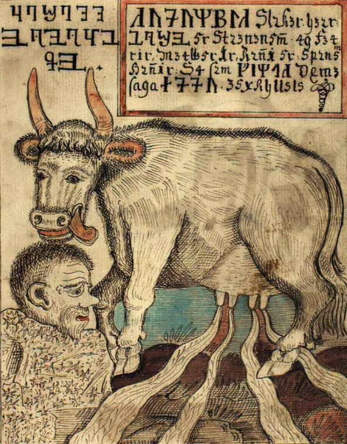

Младшая Эдда
«Мла́дшая Э́дда», «Сно́ррова Э́дда», «Э́дда в про́зе» или просто «Э́дда» (исл. Snorra Edda) — произведение средневекового исландского писателя Снорри Стурлусона, написанное в 1222—1225 годах и задуманное как учебник скальдической поэзии. Состоит из четырех частей, содержащих большое количество цитат из древних поэм, основанных на сюжетах из германо-скандинавской мифологии.
Начинается Эдда с эвгемеристического пролога и трёх отдельных книг: Gylfaginning (ок. 20 000 слов), Skáldskaparmál (ок. 50 000 слов) и Háttatal (ок. 20 000 слов). Эдда сохранилась в семи различных манускриптах, датируемых от 1300 до 1600 годов, с независимым друг от друга текстовым содержанием.
Целью произведения было донести до современных Снорри читателей всю утончённость аллитерационных стихов и уловить значения слов, скрытых под множеством кеннингов.
Изначально «Младшая Эдда» была известна просто как «Эдда», но позже получила своё название, чтобы отличать её от «Старшей Эдды». Со «Старшей Эддой» «Младшую» связывает множество стихов, цитируемых обеими.
- Пролог
- Развитие представлений о боге
- О трёх частях мира
- О троянцах
- Путешествие Одина на север
- Один поселяется в Сигтуне
- Видение Гюльви
- О конунге Гюльви и Гевьон
- Гюльви приходит в Асгард
- О Всеотце, высочайшем из богов
- О Нифльхейме и Муспелле
- Происхождение Имира и инеистых великанов
- Об Аудумле и происхождении Одина
- Убийство Имира и о Бергельмире
- Сыновья Бора создают землю и небо
- Сыновья Бора создают Аска и Эмблу
- Пришествие Дня и Ночи
- О Солнце и Месяце
- О затруднительном положении Солнца
- О Биврёсте
- О жилище богов и происхождении карликов
- О ясене, источнике Урд и норнах
- Ещё о ясене
- О главных жилищах богов
- О происхождении ветра
- О различии лета и зимы
- Об Одине и его именах
- Об Аса-Торе
- О Бальдре
- О Ньёрде и Скади
- О Фрейре и Фрейе
- О Тюре
- О Браги и Идунн
- О Хеймдалле
- О Хёде
- О Видаре
- О Вали
- Об Улле
- О Форсети
- О Локи сыне Лаувейи
- О детях Локи и связывании Фенрира Волка
- О богинях
- О валькириях
- Фрейр женится на Герд дочери Гюмира
- О еде эйнхериев и Одина
- О питье эйнхериев
- О величии Вальгаллы
- О забаве эйнхериев
- Асы нарушают свои обещания каменщику
- О Скидбладнире
- Тор начинает своё путешествие к Утгарда-Локи
- О делах Тора и Скрюмира
- Об умениях Тора и его товарищей
- Расставание Тора и Утгарда-Локи
- Тор выходит в море с Хюмиром
- Смерть Бальдра Доброго
- Связывание Локи
- О Гибели Богов
- Обиталища после Гибели Богов
- Кто переживёт Гибель Богов
- О Ганглери
- Язык поэзии
- Эгир посещает асов
- Великан Тьяцци похищает Идунн
- Локи добывает Идунн, убийство Тьяцци
- О роде Тьяцци
- Происхождение мёда Суттунгов
- Как Один получил мёд
- Признаки поэзии
- Обращение к молодым поэтам
- Хейти Одина и кеннинги Одина
- Кеннинги поэзии
- Кеннинги Тора
- Кеннинги Бальдра
- Кеннинги Ньёрда
- Кеннинги Фрейра
- Кеннинги Хеймдалля
- Кеннинги Тюра
- Кеннинги Браги
- Кеннинги Видара
- Кеннинги Вали
- Кеннинги Хёда
- Кеннинги Улля
- Кеннинги Хёнира
- Кеннинги Локи
- О великане Хрунгнире
- О провидице Гроа
- Поездка Тора к Гейррёду
- Кеннинги Фригг
- Кеннинги Фрейи
- Кеннинги Сив
- Кеннинги Идунн
- Кеннинги неба
- Кеннинги земли
- Кеннинги моря
- Кеннинги солнца
- Кеннинги ветра
- Кеннинги огня
- Кеннинги зимы
- Кеннинги лета
- Кеннинги мужчины и женщины
- Кеннинги золота
- Асы являются на пир к Эгиру/a>
- О роще Гласир
- О кузнецах, сыновьях Ивальди
- Кеннинги о золоте и Фрейе
- Золото называют речью великанов
- О выкупе за выдру
- О Фафнире, Регине и Сигурде
- О Сигурде и Гьюкунгах
- Убийство Сигурда
- Убийство Гьюкунгов и месть Гудрун
- О Вёльсунгах
- О конунге Фроди и мельнице Гротти
- О Хрольве Жердинке и Вёгге
- О Хрольве Жердинке и конунге Адильсе
- О конунге Хёльги
- Ещё о кеннингах золота
- Мужчина зовётся по золоту
- Женщина зовётся по золоту
- Мужчина зовётся по деревьям
- Кеннинги битвы
- Кеннинги оружия и боевых доспехов
- О битве Хьяднингов
- Битва называется по Одину
- Кеннинги корабля
- Кеннинги Христа
- Кеннинги конунгов и предводителей
- Хейти поэзии
- Хейти богов
- Хейти неба, солнца и луны
- Хейти земли
- Хейти волка, медведя и оленя
- Хейти коней
- Волы, змеи, овцы, свиньи
- Хейти воздуха и ветров
- Хейти ворона и орла
- Хейти моря
- Хейти огня
- Хейти времени
- Хейти конунгов
- О Хальвдане Старом и родах конунгов
- Хейти людей
- Хейти групп людей
- Видкеннинги и саннкеннинги
- Хейти женщины
- Голова и её части
- Сердце, грудь, душа
- Рука, нога
- Речь и ум
- Затемнение стиха или двусмыслица
Пролог
Развитие представлений о боге
Всемогущий господь вначале создал небо и землю, и всё, что к ним относится, а последними он создал двух человек, Адама и Еву, от которых пошли все народы. И умножилось их потомство и расселилось по всему свету. Но с течением времени возникло в людях несходство. Некоторые среди них были хорошие и праведные, но гораздо более было таких, которые склонились к мирским страстям и презрели слово бога. И потому бог затопил в разлившемся море весь мир и всё живое, что было в мире, кроме тех, кто спасся с Ноем в ковчеге. После Ноева потопа остались в живых восемь человек, и от них происходят все народы. И случилось так же, как и прежде: стоило лишь умножиться роду людскому и заселить весь мир, как многие люди с жадностью устремились к богатству и почестям и позабыли чтить бога. И дошло до того, что люди эти не захотели произносить божьего имени. И кто бы смог тогда поведать их сынам о творимых богом чудесах? В конце концов они забыли имя бога, и в целом мире не сыскалось бы человека, хоть что-нибудь разумевшего о своём творце. Но ничуть не меньше, чем прежде, наделял их бог земными дарами, богатством и счастьем, в которых нуждались они на земле. Наделил он их и разумом, дабы они могли распознать всё, что есть на земле, и все зримые части земли и воздуха.
Люди размышляли и дивились тому, что земля, и звери, и птицы, имея во многом одно естество, всё же так по-разному ведут себя. Одно естество было в том, что если копать землю на высоких горных вершинах, там забьёт вода, и нужно там рыть до воды не дольше, чем в глубоких долинах. Так же и звери и птицы: в голове и в лапах у них кровь течёт на одинаковой глубине. Другое свойство земли в том, что каждый год растут из неё трава и цветы, и в тот же год всё это никнет и вянет. Так же и у зверей и птиц: и у них растут шерсть и перья и каждый год выпадают. Вот третье свойство земли: когда она взрыта и вскопана, трава растёт в самом верхнем слое почвы. Люди думали, что скалы и камни — это зубы и кости живых существ. И по всему этому они рассудили, что земля живая и неким образом наделена жизнью, и они думали, что она очень стара годами и могуча в своём естестве. Она питала всё живое и завладевала всеми умершими. Поэтому они дали ей имя и возводили к ней свой род.
И узнали люди от своих предков, что уже много сотен лет земля, солнце и небесные светила такие же, но пути у небесных светил неодинаковы: у одних путь длиннее, чем у других. И многое в этом роде заронило в них подозрение, что есть некто, управляющий небесными светилами, соразмеряя по своей воле их пути. И думали, что, верно, он обладает большой властью и могуществом. И люди верили, что это он правит стихиями и он существовал ещё до того, как появились небесные светила. И видели они, что если он направляет ход небесных светил, то, верно, ему подчиняются солнечный свет, и небесная роса, и плоды земные, которые от них родятся, и ветры, а значит, и морские бури. Они не ведали, где его государство, но верили, что ему подчиняется всё, что ни есть на земле и в воздухе: небо и небесные светила, море и ветры. И чтобы рассказать обо всём этом и сохранить в памяти, они сами придумали всему имена. И эта вера претерпела немало изменений, ибо народы делились и расходились их языки. Но они разумели всё земным разуменьем, ибо им не была дана духовная мудрость. Поэтому они думали, что всё сделано из некоего вещества.
О трёх частях мира
Весь мир разделялся на три части. Часть, которая лежит на юге, простираясь к западу и к Средиземному морю, зовётся Африкой. На юге Африки жарко, и всё сожжено солнцем. Другая часть лежит на западе и тянется к северу и к океану, она зовётся Европой или Энеей. На севере этой части так холодно, что там не растёт трава и нельзя там жить. С севера на восток и до самого юга тянется часть, называемая Азией. В этой части мира всё красиво и пышно, там владения земных плодов, золото и драгоценные камни. Там находится и середина земли. И потому, что сама земля там во всём прекраснее и лучше, люди, её населяющие, тоже выделяются всеми дарованиями: мудростью и силой, красотою и всевозможными знаниями.
О троянцах
Вблизи середины земли был построен град, снискавший величавую славу. Он назывался тогда Троя1, а теперь Страна Турков. Этот град был много больше, чем другие, и построен со всем искусством и пышностью, которые были тогда доступны. Было там двенадцать государств, и был один верховный правитель. В каждое государство входило немало обширных земель. В городе было двенадцать правителей. Эти правители всеми присущими людям качествами превосходили других людей, когда-либо живших на земле.
Одного конунга в Трое звали Мунон или Меннон. Он был женат на дочери верховного конунга Приама, её звали Троан. У них был сын по имени Трор, мы зовём его Тором. Он воспитывался во Фракии у герцога по имени Лорикус. Когда ему минуло десять зим, он стал носить оружие своего отца. Он выделялся среди других людей красотой, как слоновая кость, врезанная в дуб. Волосы у него были краше золота. Двенадцати зим отроду он был уже в полной силе. В то время он поднимал с земли разом десять медвежьих шкур, и он убил Лорикуса герцога, своего воспитателя, и жену его Лору, или Глору, и завладел их государством Фракией. Мы зовём его государство Трудхейм. Потом он много странствовал, объездил полсвета и один победил всех берсерков, всех великанов, самого большого дракона и много зверей. В северной части света он повстречал прорицательницу по имени Сибилла — а мы зовём её Сив — и женился на ней. Никто не ведает, откуда Сив родом. Она была прекраснейшей из женщин, волосы у неё были подобны золоту. Сына их звали Лориди, он походил на своего отца. У него был сын Эйнриди, а у него — Вингетор, у Вингетора — Вингенер, у Вингенера — Моди, у Моди — Маги, у Маги — Сескев, у Сескева — Бедвиг, у Бедвига — Атри, а мы зовём его Аннан, у Атри — Итрманн, у Итрманна — Херемод, у Херемода — Скьяльдун, его мы зовём Скьёльд, у Скьяльдуна — Бьяв, мы зовём его Бьяр, у Бьява — Ят, у Ята — Гудольв, у Гудольва — Финн, у Финна — Фриалав, мы зовём его Фридлейв, а у того был сын Воден, а мы зовём его Один. Он славился своею мудростью и всеми совершенствами. Жену его звали Фригида, а мы зовём её Фригг.
Путешествие Одина на север
Одину и жене его было пророчество, и оно открыло ему, что его имя превознесут в северной части света и будут чтить превыше имён всех конунгов. Поэтому он вознамерился отправиться в путь, оставив Страну Турков. Он взял с собою множество людей, молодых и старых, мужчин и женщин, и много драгоценных вещей. И по какой бы стране ни лежал их путь, всюду их всячески прославляли и принимали скорее за богов, чем за людей. И они не останавливались, пока не пришли на север в страну, что зовётся Страною Саксов. Там Один остался надолго, подчинив себе всю страну.
Для надзора над этой страной Один оставил там троих своих сыновей. Одного из них звали Вегдег. Он был могучим конунгом и правил Восточной Страной Саксов. Сына его звали Витргильс, и у него были сыновья Витта, отец Хейнгеста, и Сигар, отец Свебдега, которого мы зовём Свипдаг. Второго сына Одина звали Бальдег, а мы называем его Бальдр. Ему принадлежала земля, что зовётся теперь Вестфаль. У него был сын Бранд, а у того сын Фрьодигар, которого мы называем Фроди. Сына Фроди звали Фреовин, а у того был сын Увигг, а у Увигга — Гевис, которого мы зовём Гаве. Третий сын Одина звался Сиги, а у Сиги был сын Рерир. Они правили страною, что зовётся теперь Страною Франков, и оттуда ведёт начало род, называемый Вёльсунгами. От всех них произошли многие великие роды. Потом Один пустился в путь на север и достиг страны, которая называлась Рейдготланд2. И завладел в этой стране всем, чем хотел. Он поставил правителем той страны своего сына по имени Скьёльд. Сына Скьёльда звали Фридлейв. Оттуда происходит род, что зовётся Скьёльдунгами. Это датские конунги, и то, что называлось прежде Рейдготланд, теперь зовётся Ютландией.
Один поселяется в Сигтуне
Потом Один отправился ещё дальше на север, в страну, что зовётся теперь Швецией. Имя тамошнего конунга было Гюльви. И когда он узнал, что едут из Азии эти люди, которых называли асами, он вышел им навстречу и сказал, что Один может властвовать в его государстве, как только пожелает. И им в пути сопутствовала такая удача, что в любой стране, где они останавливались, наступали времена изобилия и мира. И все верили, что это творилось по их воле. Ибо знатные люди видели, что ни красотою своей, ни мудростью асы не походили на прежде виданных ими людей.
Одину понравились там земли, и он избрал их местом для города, который зовётся теперь Сигтуна. Он назначил там правителей подобно тому, как это было в Трое. Он поставил в городе двенадцать правителей, чтобы вершить суд, и учредил такие законы, какие прежде были в Трое и к каким были привычны турки. После того он поехал на север, пока не преградило пути им море, окружавшее, как им казалось, все земли. Он поставил там своего сына править государством, что зовётся теперь Норвегией. Сына же звали Сэминг, и от него ведут свой род норвежские конунги, а также и ярлы и другие правители, как о том рассказано в перечне Халейгов. А с собою Один взял сына по имени Ингви, который был конунгом в Швеции, и от него происходит род, называемый Инглингами. Асы взяли себе в той земле жён, а некоторые женили и своих сыновей, и настолько умножилось их потомство, что они расселились по всей Стране Саксов, а оттуда и по всей северной части света, так что язык этих людей из Азии стал языком всех тех стран. И люди полагают, что по записанным именам их предков можно судить, что имена эти принадлежали тому самому языку, который асы принесли сюда на север — в Норвегию и Швецию, Данию и Страну Саксов. А в Англии есть старые названия земель и местностей, которые, как видно, происходят не от этого языка, а от другого.
Видение Гюльви
О конунге Гюльви и Гевьон
Конунг Гюльви правил тою страной, что зовётся теперь Швецией. Сказывают о нём, что он даровал одной страннице в награду за её занимательные речи столько земли в своих владениях, сколько утащат четыре быка за день и за ночь. А была эта женщина из рода асов. Имя ей было Гевьон. Она взяла четырёх быков с севера из Страны Великанов — это были её сыновья от одного великана — и принялась пахать на них. И плуг так сильно и глубоко врезался в землю, что земля эта вся вздыбилась. И поволокли быки землю в море и ещё дальше, на запад, и остановились в одном проливе. Там сбросила Гевьон ту землю и дала ей имя и назвала её Зеландией. А там, где прежде была та земля, возникло озеро. Оно теперь в Швеции называется Меларен. И бухты на озере Меларен похожи с виду на мысы Зеландии. Так говорит об этом скальд Браги Старый:
У Гюльви светлая Гевьон
злато земель отторгла,
Зеландию. Бегом быков
вспенено было море.
Восемь звёзд горели
во лбах четырёх быков,
когда по лугам и долам
добычу они влекли.
Гюльви приходит в Асгард
Конунг Гюльви был муж мудрый и сведущий в разных чарах. Диву давался он, сколь могущественны асы, что всё в мире им покоряется. И задумался он, своей ли силой они это делают или с помощью божественных сил, которым поклоняются. Тогда пустился он в путь к Асгарду, и поехал тайно, приняв обличие старика, чтобы остаться неузнанным. Но асы дознались о том из прорицаний и предвидели его приход прежде, чем был завершён его путь. И они наслали ему видение. И вот, вступив в город, он увидел чертог такой высокий, что едва мог окинуть его взором. А крыша чертога была вся устлана позолоченными щитами. Тьодольв из Хвина так говорит об этом:
За спину забросили —
сыпались камни —
Свафнира крышу
разумные воины.
У дверей того чертога Гюльви увидел человека, игравшего ножами, да так ловко, что в воздухе всё время было по семи ножей. Этот человек первым спросил, как его звать. Он назвался Ганглери, и сказал, что сбился с пути, и попросил ночлега. И ещё спросил он, кто владетель того чертога. Человек ответил, что чертог тот принадлежит их конунгу. «И могу я отвести тебя к нему, и уж ты сам спроси, как его звать». И тотчас пошёл человек в чертог, а Ганглери следом. И сразу же дверь за ним затворилась. Ганглери увидал там много палат и великое множество народу: иные играли, иные пировали, иные бились оружием. Он осмотрелся, и многое показалось ему диковинным. Тогда он молвил:
Прежде чем в дом
войдёшь, все входы
ты осмотри,
ты огляди, —
ибо как знать,
в этом жилище
недругов нет ли.
Он увидел три престола, один другого выше. И сидят на них три мужа. Тогда он спросил, как зовут этих знатных мужей. И приведший его отвечает, что на самом низком из престолов сидит конунг, а имя ему — Высокий. На среднем троне сидит Равновысокий, а на самом высоком — Третий. Тогда спрашивает Высокий, есть ли у него ещё какое к ним дело, а еда, мол, и питьё готовы для него, как и для прочих, в Палате Высокого. Ганглери сказал, что сперва он хочет спросить, не сыщется ли в доме мудрого человека. Высокий на это отвечает, что не уйти ему живым, если не окажется он мудрее.
И стой, покуда
ты вопрошаешь.
Пусть сидит отвечающий.
О Всеотце, высочайшем из богов
И вот Ганглери начал спрашивать: «Кто самый знатный или самый старший из богов?» Высокий говорит: «Его называют Всеотец, но в древнем Асгарде было у него двенадцать имён: первое имя Всеотец, второе — Херран, или Херьян, третье — Никар, или Хникар, четвёртое — Никуд, или Хникуд, пятое — Фьёльнир, шестое — Оски, седьмое — Оми, восьмое — Бивлиди, или Бивлинди, девятое — Свидар, десятое — Свидрир, одиннадцатое — Видрир, двенадцатое — Яльг, или Яльк».
Тогда спрашивает Ганглери: «Где живёт этот бог? И в чём его мощь? И какими деяниями он прославлен?» Высокий говорит: «Живёт он, от века, и правит в своих владениях, а властвует надо всем на свете, большим и малым». Тогда молвил Равновысокий: «Он создал небо, и землю, и воздух, и всё, что к ним принадлежит». Тогда молвил Третий: «Всего же важнее то, что он создал человека и дал ему душу, которая будет жить вечно и никогда не умрёт, хоть тело и станет прахом иль пеплом. И все люди, достойные и праведные, будут жить с ним в месте, что зовётся Гимле или Вингольв. А дурные люди пойдут в Хель, а оттуда в Нифльхель. Это внизу, в девятом мире». Тогда спросил Ганглери: «Каковы же были деяния его до того, как он сделал землю и небо?» И ответил Высокий: «Тогда он жил с инеистыми великанами».
О Нифльхейме и Муспелле
Ганглери спросил: «Что же было вначале? И откуда взялось? И что было ещё раньше?» Высокий отвечает, как сказано в «Прорицании вёльвы»:
В начале времён
не было в мире
ни песка, ни моря,
ни волн холодных.
Земли ещё не было,
и небосвода,
бездна зияла,
трава не росла.
И сказал Равновысокий: «За многие века до создания земли уже был сделан Нифльхейм. В середине его есть поток, что зовётся Кипящий Котёл, и вытекают из него реки: Свёль, Гуннтра, Фьёрм, Фимбультуль, Слид и Хрид, Сюльг и Ульг, Вид, Лейфт. А река Гьёлль течёт у самых врат Хель».
Тогда сказал Третий: «Всего раньше была страна на юге, имя ей Муспелль. Это светлая и жаркая страна, всё в ней горит и пылает. И нет туда доступа тем, кто там не живёт и не ведёт оттуда свой род. Суртом называют того, кто сидит на краю Муспелля и его защищает. В руке у него пылающий меч, и, когда настанет конец мира, он пойдёт войною на богов и всех их победит и сожжёт в пламени весь мир. Так сказано об этом в «Прорицании вёльвы»:
Сурт едет с юга
с губящим ветви,
солнце блестит
на мечах богов;
рушатся горы,
мрут великанши,
в Хель идут люди,
расколото небо».
Происхождение Имира и инеистых великанов
Ганглери спросил: «Что же было в мире до того, как возникли племена и умножился род людской?» Тогда сказал Высокий: «Когда реки, что зовутся Эливагар, настолько удалились от своего начала, что их ядовитая вода застыла подобно шлаку, бегущему из огня, и стала льдом, и когда окреп тот лёд и перестал течь, яд выступил наружу росой и превратился в иней, и этот иней слой за слоем заполнил Мировую Бездну». И сказал Равновысокий: «Мировая Бездна на севере вся заполнилась тяжестью льда и инея, южнее царили дожди и ветры, самая же южная часть Мировой Бездны была свободна от них, ибо туда залетали искры из Муспелльсхейма». Тогда сказал Третий: «И если из Нифльхейма шёл холод и свирепая непогода, то близ Муспелльсхейма всегда царили тепло и свет. И Мировая Бездна была там тиха, словно воздух в безветренный день.
Когда ж повстречались иней и тёплый воздух, так что тот иней стал таять и стекать вниз, капли ожили от теплотворной силы и приняли образ человека, и был тот человек Имир, а инеистые великаны зовут его Аургельмиром. От него-то и пошло всё племя инеистых великанов, как сказано о том в «Кратком прорицании вёльвы».
От Видольва род свой
все вёльвы ведут,
от Вильмейда род
ведут все провидцы,
а все чародеи —
от Чёрной Главы,
а великаны
от Имира корня.
И так говорит об этом Вафтруднир великан:
Откуда меж турсов
Аургельмир явился,
первый их предок?
Тогда, когда:
Брызги холодные
Эливагара
ётуном стали,
отсюда свой род
исполины ведут,
оттого мы жестоки».
Тогда спросил Ганглери: «Как же возникли отсюда все племена? И откуда взялись другие люди? Или веришь ты, что тот, о ком рассказываешь, был богом?» И отвечает Высокий: «Никак не признаём мы его за бога. Он был очень злой и все его родичи тоже, те, кого зовём мы инеистыми великанами. И сказывают, что, заснув, он вспотел, и под левой рукой у него выросли мужчина и женщина. А одна нога зачала с другою сына. И отсюда пошло всё его потомство — инеистые великаны. А его, древнейшего великана, зовём мы Имиром».
Об Аудумле и происхождении Одина
Тогда спросил Ганглери: «Где жил Имир? И чем он питался?» Высокий отвечает: «Как растаял иней, тотчас возникла из него корова по имени Аудумла, и текли из её вымени четыре молочные реки, и кормила она Имира». Тогда сказал Ганглери: «А чем же кормилась сама корова?» Высокий говорит: «Она лизала солёные камни, покрытые инеем, и к исходу первого дня, когда она лизала те камни, в камне выросли человечьи волосы, на второй день — голова, а на третий день возник весь человек. Его прозывают Бури. Он был хорош собою, высок и могуч. У него родился сын по имени Бор. Он взял в жёны Бестлу, дочь Бёльторна великана, и она родила ему троих сыновей: одного звали Один, другого Вили, а третьего Ве. И верю я, что Один и его братья — правители на небе и на земле. Думаем мы, что именно так его зовут. Это имя величайшего и славнейшего из всех ведомых нам мужей, и вы можете тоже называть его так».
Убийство Имира и о Бергельмире
Тогда спросил Ганглери: «Как же поладили они меж собою? И кто из них оказался сильнее?» Так отвечает Высокий: «Сыновья Бора убили великана Имира. А когда он пал мёртвым, вытекло из его ран столько крови, что в ней утонули все инеистые великаны. Лишь один укрылся со всею своей семьёй. Великаны называют его Бергельмиром. Он сел со своими детьми и женою в ковчег и так спасся. От него-то и пошли новые племена инеистых великанов, как о том рассказывается:
За множество зим
до создания земли
был Бергельмир турс;
в гроб его
при мне положили,
вот, что первое помню».
Сыновья Бора создают землю и небо
Сказал тогда Ганглери: «За что же принялись тогда сыновья Бора, если они были, как ты думаешь, богами?» Высокий сказал: «Есть тут о чём поведать. Они взяли Имира, бросили в самую глубь Мировой Бездны и сделали из него землю, а из крови его — море и все воды. Сама земля была сделана из плоти его, горы же из костей, валуны и камни — из передних и коренных его зубов и осколков костей». Тогда молвил Равновысокий: «Из крови, что вытекла из ран его, сделали они океан и заключили в него землю. И окружил океан всю землю кольцом, и кажется людям, что беспределен тот океан и нельзя его переплыть». Тогда молвил Третий: «Взяли они и череп его и сделали небосвод. И укрепили его над землёй, загнув кверху её четыре угла, а под каждый угол посадили по карлику. Их прозывают так: Восточный, Западный, Северный и Южный. Потом они взяли сверкающие искры, что летали кругом, вырвавшись из Муспелльсхейма, и прикрепили их в середину неба Мировой Бездны, дабы они освещали небо и землю. Они дали место всякой искорке: одни укрепили на небе, другие же пустили летать в поднебесье, но и этим назначили своё место и уготовили пути. И говорят в старинных преданиях, что с той поры и ведётся счёт дням и годам, как сказано о том в «Прорицании вёльвы»:
Солнце не ведало,
где его дом,
звёзды не ведали,
где им сиять,
месяц не ведал
мощи своей.
Тогда сказал Ганглери: «Слышу я о великих деяниях. На диво огромна эта работа и выполнена искусно. Как же была устроена земля?» Тогда отвечает Высокий: «Она снаружи округлая, а кругом неё лежит глубокий океан. По берегам океана они отвели земли великанам, а весь мир в глубине суши оградили стеною для защиты от великанов. Для этой стены они взяли веки великана Имира и назвали крепость Мидгард. Они взяли и мозг его и, бросив в воздух, сделали облака. Вот как об этом сказано:
Имира плоть
стала землёй,
кровь его — морем,
кости — горами,
череп стал небом,
а волосы — лесом.
Из век его Мидгард
людям был создан
богами благими;
из мозга его
созданы были
тёмные тучи».
Сыновья Бора создают Аска и Эмблу
Тогда молвил Ганглери: «Великое дело они совершили, сделав землю и небо и укрепив солнце со светилами и разделив сутки на день и ночь. А откуда взялись люди, населяющие землю?» И отвечает Высокий: «Шли сыновья Бора берегом моря и увидали два дерева. Взяли они те деревья и сделали из них людей. Первый дал им жизнь и душу, второй — разум и движенье, третий — облик, речь, слух и зрение. Дали они им одежду и имена: мужчину нарекли Ясенем, а женщину Ивой. И от них-то пошёл род людской, поселённый богами в стенах Мидгарда. Вслед за тем они построили себе град в середине мира и назвали его Асгард, а мы называем его Троя. Там стали жить боги со всем своим потомством, и там начало многих событий и многих распрь на земле и на небе.
Есть в Асгарде место Хлидскьяльв. Когда Один восседал там на престоле, видел он все миры и все дела людские, и была ему ведома суть всего видимого. Имя жены его — Фригг, дочь Фьёргвина, и от них родились все те, кого мы зовём родом асов, и кто населяет древний Асгард и соседние страны. Все они божественного происхождения. И должно величать Одина Всеотцом, ибо он — отец всем богам и людям, всему, что мощью его было создано. И Земля была ему дочерью и женою. От неё родился его старший сын, это Аса-Тор. Дана ему великая сила и мощь. Потому побеждает он всё живущее.
Пришествие Дня и Ночи
Нёрви или Нарви звался великан, живший в Ётунхейме. Была у него дочь, от рождения чёрная и сумрачная, по имени Ночь. Мужем её был человек по имени Нагльфари, а сына их звали Ауд. Потом был её мужем Анар, дочь их звалась Землёю. А последним мужем её был Деллинг, из рода асов. Сына их звали День. Был он в своего отца светел и прекрасен собою. Позвал Всеотец Ночь и сына её по имени День и дал им двух коней и две колесницы и послал их в небо, дабы раз в сутки объезжали они всю землю. Впереди несётся Ночь, и правит конём Инеистая Грива, и каждое утро орошает землю пена, стекающая с его удил. А конь Дня зовётся Ясная Грива, и грива его озаряет землю и воздух».
О Солнце и Месяце
Тогда спросил Ганглери: «А как правит он ходом солнца и звёзд?» Высокий говорит: «Одного человека звали Мундильфари. У него было двое детей. Они были так светлы и прекрасны, что он назвал Месяцем сына своего, а дочь — Солнцем. И отдал он дочь в жёны человеку по имени Глен. Но богов прогневала их гордыня, и они водворили брата с сестрою на небо, повелев Солнцу править конями, впряжёнными в колесницу солнца: а солнце боги сделали, чтобы освещать мир, из тех искр, что вылетали из Муспелльсхейма. Эти кони зовутся Ранний и Проворный. Под дугами же у коней повесили боги по кузнечному меху, чтобы была им прохлада. В некоторых преданиях это называют кузнечным горном.
Месяц управляет ходом звёзд, и ему подчиняются новолуние и полнолуние. Он взял с земли двух детей, Биля и Хьюки, в то время как они шли от источника Бюргир и несли на плечах коромысло Симуль с ведром Сэг. Имя отца их — Видфинн. Дети всегда следуют за месяцем, и это видно с земли».
О затруднительном положении Солнца
Тогда молвил Ганглери: «Быстро мчится дева Солнце, словно чего-то страшится; спасайся она от самой смерти, и тогда не удалось бы ей бежать быстрее». Тогда отвечает Высокий: «Нечему тут дивиться, что она так бежит. Нагоняет её преследователь, и ей ничего не остаётся, кроме как убегать». Тогда спросил Ганглери: «Кто же желает её погибели?» Высокий говорит: «Есть два волка, и того, что бежит за нею, зовут Обман. Его-то она и страшится, и он настигнет её. Имя другого волка — Ненавистник, он сын Хродвитнира. Он бежит впереди неё и хочет схватить месяц. Так оно и будет». Тогда спросил Ганглери: «Кто породил тех волков?» Высокий говорит: «Есть великанша, что живёт к востоку от Мидгарда в лесу, прозванном Железный Лес. В этом лесу селятся ведьмы, которых так и называют: ведьмы Железного Леса. Старая великанша породила многих сыновей-великанов, все они видом волки. Отсюда появились и эти волки. Говорят, что того же племени будет и сильнейший из волков, по имени Лунный Пёс. Он пожрёт трупы всех умерших и проглотит месяц и обрызжет кровью всё небо и воздух. Тогда солнце погасит свой свет, обезумеют ветры, и далеко разнесётся их завыванье. Так сказано об этом в «Прорицании вёльвы»:
Сидела старуха
в Железном Лесу
и породила там
Фенрира род;
из этого рода
станет один
мерзостный тролль
похитителем солнца.
Будет он грызть
трупы людей,
кровью зальёт
жилище богов;
солнце померкнет
в летнюю пору,
бури взъярятся —
довольно ль вам этого?».
О Биврёсте
Тогда спросил Ганглери: «Какой путь ведёт с земли на небо?» Отвечал со смехом Высокий: «Неразумен твой вопрос! Разве тебе неизвестно, что боги построили мост от земли до неба, и зовётся мост Биврёст? Ты его, верно, видел. Может статься, что ты зовёшь его радугой. Он трёх цветов и очень прочен и сделан — нельзя искуснее и хитрее. Но как ни прочен этот мост, и он подломится, когда поедут по нему на своих конях сыны Муспелля, и переплывут их кони великие реки и помчатся дальше». Тогда молвил Ганглери: «Думается мне, не по совести сделали боги тот мост, если может он подломиться; ведь они могут сделать всё, что ни пожелают». Отвечал Высокий: «Нельзя хулить богов за эту работу. Добрый мост Биврёст, но ничто не устоит в этом мире, когда пойдут войною сыны Муспелля».
О жилище богов и происхождении карликов
Тогда спросил Ганглери: «Что предпринял Всеотец, когда строился Асгард?» Высокий отвечает: «Сначала он собрал правителей мира, чтобы решить с ними судьбу людей и рассудить, как построить город. Было это в поле, что зовётся Идавёлль, в середине города. Первым их делом было воздвигнуть святилище с двенадцатью тронами и престолом для Всеотца. Нет на земле дома больше и лучше построенного. Всё там внутри и снаружи как из чистого золота. Люди называют тот дом Чертогом Радости. Сделали они и другой чертог. Это святилище богинь, столь же прекрасное, люди называют его Вингольв. Следом построили они дом, в котором поставили кузнечный горн, а в придачу сделали молот, щипцы, наковальню и остальные орудия. Тогда они начали делать вещи из руды, из камня и из дерева. И так много ковали они той руды, что зовётся золотом, что вся утварь и всё убранство были у них золотые, и назывался тот век золотым, пока он не был испорчен жёнами, явившимися из Ётунхейма.
Затем сели боги на своих престолах и держали совет и вспомнили о карликах, что завелись в почве и глубоко в земле, подобно червям в мёртвом теле. Карлики зародились сначала в теле Имира, были они и вправду червями. Но по воле богов они обрели человеческий разум и приняли облик людей. Живут они, однако ж, в земле и в камнях. Был старший Модсогнир, а второй — Дурин. Так сказано о том в «Прорицании вёльвы»:
Тогда сели боги
на троны могущества
и совещаться
стали священные:
кто должен племя
карликов сделать
из Бримира крови
и кости Блаина.
Карлики много
из глины слепили
подобий людских,
как Дурин велел.
И там перечислены такие имена карликов:
Нии и Ниди,
Нордри и Судри,
Аустри и Вестри,
Альтьов, Двалин,
Нар и Наин,
Нипинг, Даин,
Бивур, Бавур,
Бёмбур, Нори,
Ори, Онар,
Оин, Мьёдвитнир,
Гандальв и Вигг,
Виндальв, Торин,
Фили и Кили,
Фундин, Вали,
Трор и Троин,
Текк, Вит и Лит,
Нюр и Нюрад,
Рекк и Радсвинн.
Следом названы тоже карлы, которые живут в камнях (а те, которые были перечислены раньше, населяют почву):
Драупнир, Дольгтвари,
Хар, Хугстари,
Хледьольв, Глоин,
Дори и Ори,
Дув и Андвари,
Хефтифили,
Хар и Свиар.
А эти карлы пришли из холма Свари через Болотные Топи на Песчаное Поле. От них происходит Ловар. Вот их имена:
Скирвир, Вирвир,
Скафинн и Аи,
Альв и Инги,
Эйкинскьяльди,
Фаль и Фрости,
Финн и Гиннар».
О ясене, источнике Урд и норнах
Тогда спросил Ганглери: «Где собираются боги или где главное их святилище?» Высокий ответил: «Оно у ясеня Иггдрасиль, там всякий день вершат боги свой суд». Тогда сказал Ганглери: «Что можно сказать о том месте?» Равновысокий отвечает: «Тот ясень больше и прекраснее всех деревьев. Сучья его простёрты над миром и поднимаются выше неба. Три корня поддерживают дерево, и далеко расходятся эти корни. Один корень — у асов, другой — у инеистых великанов, там, где прежде была Мировая Бездна. Третий же тянется к Нифльхейму, и под этим корнем — поток Кипящий Котёл, и снизу подгрызает этот корень дракон Нидхёгг. А под тем корнем, что протянулся к инеистым великанам, — источник Мимира, в котором сокрыты знание и мудрость. Мимиром зовут владетеля этого источника. Он исполнен мудрости, оттого что пьёт воду этого источника из рога Гьяллархорн. Пришёл туда раз Всеотец и попросил дать ему напиться из источника, но не получил он ни капли, пока не отдал в залог свой глаз. Так сказано о том в «Прорицании вёльвы»:
Знаю я, Один,
где глаз твой спрятан:
скрыт он в источнике
славном Мимира!
Каждое утро
Мимир пьёт мёд
с залога Владыки,
довольно ль вам этого?
Под тем корнем ясеня, что на небе, течёт источник, почитаемый за самый священный, имя ему Урд. Там место судбища богов. Каждый день съезжаются туда асы по мосту Биврёст. Этот мост называют ещё Мостом Асов. Кони асов зовутся так: Слейпнир, лучший из них, он принадлежит Одину, этот конь о восьми ногах. Второй конь — Весёлый, третий — Золотистый, четвёртый — Светящийся, пятый — Храпящий, шестой — Серебристая Чёлка, седьмой — Жилистый, восьмой — Сияющий, девятый — Мохноногий, десятый — Золотая Чёлка, а Легконогий — одиннадцатый. Конь Бальдра был сожжён вместе с ним, а Тор приходит к месту судбища пешком и переправляется вброд через реки, которые зовутся так:
Кермт и Эрмт
и Керлауг обе
Тор вброд переходит
в те дни, когда асы
вершат правосудье
у ясеня Иггдрасиль;
в ту пору священные
воды кипят,
пламенеет мост асов»
Тогда сказал Ганглери: «Разве Биврёст охвачен пламенем?» Высокий говорит: «Тот красный цвет, что ты видишь в радуге, — это жаркое пламя. Инеистые великаны и великаны гор захватили бы небо, если бы путь по Биврёсту был открыт для всякого. Много прекрасных мест на небе, и все они под защитой богов. Под тем ясенем у источника стоит прекрасный чертог, и из него выходят три девы. Зовут их Урд, Верданди и Скульд. Эти девы судят людям судьбы, мы называем их норнами. Есть ещё и другие норны, те, что приходят ко всякому младенцу, родившемуся на свет, и наделяют его судьбою. Некоторые из них ведут свой род от богов, другие — от альвов и третьи — от карлов. Так здесь об этом сказано:
Различны рожденьем
норны, я знаю —
их род не единый:
одни от асов,
от альвов иные,
другие от Двалина».
Молвил тогда Ганглери: «Если норны раздают судьбы, то очень неравно они их делят: у одних жизнь в довольстве да почёте, а у других — ни доли, ни воли; у одних жизнь долга, у других — коротка». Высокий отвечает: «Добрые норны и славного рода наделяют доброю судьбою. Если же человеку выпали на долю несчастья, так судили злые норны».
Ещё о ясене
Тогда спросил Ганглери: «Что же ещё можно поведать о том ясене?» Высокий говорит: «Многое можно о нём сказать. В ветвях ясеня живёт орёл, обладающий великой мудростью. А меж глаз у него сидит ястреб Ведрфёльнир. Белка по имени Грызозуб снуёт вверх и вниз по ясеню и переносит бранные слова, которыми осыпают друг друга орёл и дракон Нидхёгг. Четыре оленя бегают среди ветвей ясеня и объедают его листву. Их зовут Даин, Двалин, Дунейр, Дуратрор. И нет числа змеям, что живут в потоке Кипящий Котёл вместе с Нидхёггом. Так здесь об этом сказано:
Не ведают люди,
какие невзгоды
у ясеня Иггдрасиль:
корни ест Нидхёгг,
макушку — олень,
ствол гибнет от гнили.
И ещё:
Глупцу не понять,
сколько ползает змей
под ясенем Иггдрасиль:
Гоин и Моин —
Граввитнира дети, —
Грабак и Граввёллуд,
Офнир и Свафнир, —
они постоянно
ясень грызут.
И рассказывают, что норны, живущие у источника Урд, каждый день черпают из него воду вместе с той грязью, что покрывает его берега, и поливают ясень, чтоб не засохли и не зачахли его ветви. И так священна эта вода, что всё, что ни попадает в источник, становится белым, словно плёнка, лежащая под скорлупой яйца. Так здесь об этом сказано:
Ясень я знаю
по имени Иггдрасиль,
древо, омытое
влагой мутной,
росы от него
на долы нисходят;
над источником Урд
зеленеет он вечно.
Росу, выпадающую при этом на землю, люди называют медвяной, и ею кормятся пчёлы. Две птицы живут в источнике Урд, их называют лебедями, и отсюда пошла вся порода птиц, что так называется».
О главных жилищах богов
Тогда спросил Ганглери: «Много чудесного можешь ты поведать о небе. Что там ещё есть замечательного, кроме источника?» Высокий отвечает: «Немало там великолепных обиталищ. Есть среди них одно — Альвхейм. Там обитают существа, называемые светлыми альвами. Тёмные альвы живут в земле, у них иной облик и совсем иная природа. Светлые альвы обликом своим прекраснее солнца, а тёмные — чернее смолы. Есть там ещё жилище, называемое Брейдаблик, и нет его прекраснее. Есть и другое, что зовётся Глитнир. Стены его и столбы и колонны — все из красного золота, а крыша — серебряная. И есть ещё жилище Химинбьёрг. Оно стоит на краю неба, в том месте, где Биврёст дугою своей упирается в небо. Есть ещё большое жилище Валаскьяльв, им владеет Один. Его построили боги, и оно крыто чистым серебром. И есть в том чертоге Хлидскьяльв, так зовётся престол. Когда восседает на нём Всеотец, виден ему оттуда весь мир. На южном краю неба есть чертог, что прекраснее всех и светлее самого солнца, зовётся он Гимле. Он устоит и тогда, когда обрушится небо и погибнет земля, и во все времена будут жить в том чертоге хорошие и праведные люди. Так сказано о том в «Прорицании вёльвы»:
Чертог она видит
солнца чудесней,
на Гимле стоит он,
сияя золотом,
там будут жить
дружины верные,
вечное счастье
там суждено им».
Тогда спросил Ганглери: «Что же будет защитой этому чертогу, когда пламя Сурта сожжёт небеса и землю?» Высокий отвечает: «Говорят, будто к югу над нашим небом есть ещё другое небо, и зовётся то небо Андланг, и есть над ним и третье небо — Видблаин, и, верно, на том небе и стоит этот чертог. Но ныне обитают в нём, как мы думаем, одни лишь светлые альвы».
О происхождении ветра
Тогда спросил Ганглери: «Откуда берётся ветер? Он так силён, что волнует океаны и раздувает пламя. Но как ни силён он, никто не может его увидеть, ибо удивительна его природа». Тогда отвечает Высокий: «Об этом я легко могу тебе поведать. На северном краю неба сидит великан по имени Пожиратель Трупов. У него облик орла. И когда он расправляет крылья для полёта, из-под крыльев его подымается ветер. Так здесь об этом сказано:
Хресвельг сидит
у края небес
в обличье орла;
он ветер крылами
своими вздымает
над всеми народами».
О различии лета и зимы
Тогда спросил Ганглери: «Почему так несхожи меж собою зима и лето: лето жаркое, а зима холодная?» Высокий отвечает: «Умный человек не спросил бы этого, ибо всякий может об этом рассказать. Но если уж ты столь малосведущ, что об этом не слыхивал, достойно похвалы, что ты предпочёл задать один неразумный вопрос, а не оставаться невеждою в том, что следует знать всякому. Отец лета зовётся Свасуд, он ведёт безмятежную жизнь, и потому его именем называется также и всё приятное. Отца же Зимы называют когда Виндлони, а когда Виндсваль. Он сын Васада, и все в их роду жестокосерды и злобны. Вот почему у Зимы такой нрав».
Об Одине и его именах
Тогда спросил Ганглери: «В каких же асов следует верить людям?» Высокий отвечает: «Есть двенадцать божественных асов». И сказал Равновысокий: «Но и жёны их столь же священны, и не меньше их сила». Тогда сказал Третий: «Один знатнее и старше всех асов, он вершит всем в мире, и как ни могущественны другие боги, все они ему служат, как дети отцу. Фригг — имя его жены, ей ведомы людские судьбы, хоть она и не делает предсказаний. Об этом сказано в том стихе, где сам Один говорит асу по имени Локи:
Безумен ты, Локи,
зачем о злодействах
рассказ ты завёл:
все судьбы Фригг,
я думаю, знает,
хоть в тайне хранит их.
Одина называют Всеотцом, ибо он отец всем богам. И ещё зовут его Отцом Павших, ибо все, кто пал в бою, — его приёмные сыновья. Им отвёл он Вальгаллу и Вингольв, и зовут их эйнхериями. Одина зовут также Богом Повешенных, Богом Богов, Богом Ноши, и ещё многими именами называл он себя, когда пришёл к конунгу Гейррёду:
Звался я Грим,
звался я Ганглери,
Херьян и Хьяльмбери,
Текк и Триди,
Туд и Уд,
Хар и Хельблинди,
Санн и Свипуль,
и Саннгеталь тоже,
Бильейг и Бальейг,
Бёльверк и Фьёльнир,
Хертейт и Хникар,
Гримнир и Грим,
Глапсвинн и Фьёльсвинн,
Сидхётт, Сидскегг,
Сигфёдр, Хникуд,
Альфёдр, Вальфёдр,
Атрид и Фарматюр,
Оски и Оми,
Явнхар и Бивлинди,
Гёндлир и Харбард.
Свидур и Свидрир,
Яльк, Кьялар, Видур,
Трор, Игг и Тунд,
Вак и Скильвинг,
Вавуд и Хрофтатюр,
Вератюр, Гаут».
Тогда сказал Ганглери: «Много прозваний вы ему дали! Верно, нужно быть великим учёным, чтобы разуметь, какие события послужили к возникновению этих имён». Тогда отвечает Высокий: «Много нужно иметь знаний, чтобы об этом поведать. Но если сказать тебе покороче, большинство имён произошло оттого, что сколько ни есть языков на свете, всякому народу приходится переиначивать его имя на свой лад, чтобы по-своему молиться ему и призывать его. А некоторые из имён происходят от его деяний, и об этом говорится в древних сказаниях, и тебя не назовут учёным мужем, если ты не сможешь поведать о тех великих событиях».
Об Аса-Торе
Тогда сказал Ганглери: «А как зовут других богов? И каковы их деяния? И чем они прославлены?» Высокий отвечает: «Во главе их стоит Тор, который зовётся также Аса-Тор или Эку-Тор. Он сильнейший изо всех богов и людей. Трудвангар зовутся его владения, а чертог его называется Бильскирнир. В этом чертоге пять сотен покоев и ещё сорок. Он больше всех домов, что когда-либо строили люди. Так говорится об этом в «Речах Гримнира»:
Пять сотен палат
и сорок ещё
Бильскирнир вмещает;
из всех чертогов
владеет мой сын
самым просторным.
У Тора есть два козла — Скрежещущий Зубами и Скрипящий Зубами и колесница, на которой он ездит; козлы же везут эту колесницу. Потому-то и зовётся он Эку-Тор. Есть у него и ещё три сокровища. Одно из них — молот Мьёлльнир. Инеистые великаны и горные исполины чуют молот, лишь только он занесён. И не диво: он проломил череп многим их предкам и родичам. И другим бесценным сокровищем владеет Тор — Поясом Силы.
Лишь только он им опояшется, вдвое прибудет божественной силы. Третье его сокровище — это железные рукавицы. Не обойтись ему без них, когда хватается он за молот! И нет такого мудреца, чтобы смог перечесть все его великие подвиги. И столько всего могу я тебе о нём порассказать, что утечёт немало времени, прежде чем будет поведано всё, что я знаю».
О Бальдре
Тогда молвил Ганглери: «Хотел бы я расспросить и об остальных асах». Высокий говорит: «Второй сын Одина — это Бальдр. О нём можно сказать только доброе. Он лучше всех, и его все прославляют. Так он прекрасен лицом и так светел, что исходит от него сияние. Есть растение, столь белоснежное, что равняют его с ресницами Бальдра, из всех растений оно самое белое. Теперь ты можешь вообразить, насколько светлы и прекрасны волосы его и тело. Он самый мудрый из асов, самый сладкоречивый и благостный. Но написано ему на роду, что не исполнится ни один из его приговоров. Он живёт в месте, что зовётся Брейдаблик, на небесах. В этом месте не может быть никакого порока, как здесь об этом сказано:
Брейдаблик зовётся.
Бальдр там себе
построил палаты;
на этой земле
злодейств никаких
не бывало от века.
О Ньёрде и Скади
Имя третьего аса — Ньёрд. Он живёт на небе, в том месте, что зовётся Ноатун. Он управляет движением ветров и усмиряет огонь и воды. Его нужно призывать в морских странствиях и промышляя морского зверя и рыбу. Столько у него богатств, что он может наделить землями и всяким добром любого, кто будет просить его об этом. Он родился в Стране Ванов, но ваны отдали его богам как заложника, а от асов взамен взяли Хёнира. На этом боги и ваны помирились. Ньёрд взял в жёны Скади, дочь великана Тьяцци. Скади хочет поселиться там, где жил её отец, в горах, в месте, что зовётся Трюмхейм, Ньёрд же хочет жить у моря. И они порешили, что девять суток они станут жить в Трюмхейме, а другие девять оставаться в Ноатуне.
Но, вернувшись раз с гор в Ноатун, так промолвил Ньёрд:
Не любы мне горы,
хоть я и был там
девять лишь дней.
Я не сменяю
клик лебединый
на вой волков.
Тогда Скади сказала так:
Спать не дают мне
птичьи крики
на ложе моря,
всякое утро
будит меня
морская чайка.
Тогда вернулась Скади в горы и поселилась в Трюмхейме. И часто встаёт она на лыжи, берёт лук и стреляет дичь. Её называют богиней лыжницей. Так об этом сказано:
Трюмхейм зовётся,
где некогда Тьяцци
турс обитал;
там Скади жилище,
светлой богини,
в доме отцовом.
О Фрейре и Фрейе
В Ноатуне у Ньёрда родилось двое детей: сына звали Фрейром, а дочку Фрейей. Были они прекрасны собою и могущественны. Нет аса славнее Фрейра, ему подвластны дожди и солнечный свет, а значит, и плоды земные, и его хорошо молить об урожае и о мире. От него зависит и достаток людей. Фрейя же — славнейшая из богинь. Владения её на небе зовутся Фолькванг. И когда она едет на поле брани, ей достаётся половина убитых, а другая половина — Одину, как здесь о том говорится:
Фолькванг зовётся,
там Фрейя решает,
где сядут герои;
поровну воинов,
в битве погибших,
с Одином делит».
Палаты её — Сессрумнир, велики они и прекрасны. А ездит она на двух кошках, впряжённых в колесницу. Она всех благосклоннее к людским мольбам, и по её имени знатных жён величают госпожами. Ей очень по душе любовные песни. И хорошо призывать её помощь в любви».
О Тюре
Тогда сказал Ганглери: «Думаю я, и впрямь велики эти асы, и не диво, что дана вам великая сила, раз вы ведаете всё про богов и знаете, к кому обращать какие молитвы. А есть ли ещё и другие боги?» Высокий отвечает: «Есть ещё ас по имени Тюр. Он самый отважный и смелый, и от него зависит победа в бою. Его хорошо призывать храбрым мужам. Смелый, как Тюр, называют того, кто всех одолевает и не ведает страха. Он к тому же умён, так что мудрый, как Тюр, называют того, кто всех умнее. Вот пример его отваги. Когда асы занимали Фенрира Волка, чтобы надеть на него путы Глейпнир, тот не поверил, что его выпустят, пока ему в пасть не положили как залог руку Тюра. А когда асы не захотели отпустить его, он откусил руку в том месте, которое называется теперь волчий сустав. И потому Тюр однорукий, и не зовут его миротворцем.
О Браги и Идунн
Есть ас по имени Браги. Он славится своею мудростью, а пуще того, даром слова и красноречием. Особенно искусен он в поэзии, и поэтому его именем называют поэзию и тех, кто превзошёл красноречием всех прочих жён и мужей. Имя жены его — Идунн. Она хранит в своём ларце яблоки. Их должны отведать боги, как только начнут они стариться, и тотчас же они помолодеют, и так будет до конца света». Тогда молвил Ганглери: «Очень уж многое, сдаётся мне, вверили боги Идунн!» И так сказал Высокий, рассмеявшись: «От этого однажды чуть не вышло беды, и я смогу тебе об этом рассказать, но сперва надо тебе услышать имена остальных асов.
О Хеймдалле
Есть ас по имени Хеймдалль, его называют белым асом. Он велик и священен. Он сын девяти дев, и все они сёстры. Ещё зовут его Круторогий и Златозубый. Его зубы были из золота. Конь его зовётся Золотая Чёлка. Он живёт в месте под названием Химинбьёрг, у самого моста Биврёст. Он страж богов и обитает у края небес, чтобы охранять мост от горных великанов. Ему нужно меньше сна, чем птице. Как ночью, так и днём видит он на сотни поприщ. И слышит он, как растёт трава на земле, и шерсть на овце, и всё, что можно услышать. Есть у него рог, что зовётся Гьяллархорн, и когда трубит он, слышно по всем мирам. Так здесь об этом сказано:
Химинбьёрг зовётся,
там Хеймдалль, как слышно,
правит в палате;
там страж богов
сладостный мёд
в довольстве вкушает.
И так ещё говорит он сам в «Заклинании Хеймдалля»:
Девяти матерей я дитя,
сын девяти сестёр.
О Хёде
Есть ас по имени Хёд. Он слеп, но силы у него в избытке. И желали бы асы, чтобы не было нужды и поминать этого аса, ибо дело рук его ещё долго не изгладится из памяти богов и людей.
О Видаре
Есть ас по имени Видар, молчаливый ас. У него есть толстый башмак. Видар силён почти как Тор, и на него уповают боги во всех несчастьях.
О Вали
Али или Вали — так зовут сына Одина и Ринд. Он отважен в бою и очень метко стреляет.
Об Улле
Улль — имя сына Сив, пасынка Тора. Он так хорошо стреляет из лука и ходит на лыжах, что никому не под силу с ним состязаться. Он к тому же прекрасен лицом и владеет всяким военным искусством. Его хорошо призывать в единоборстве.
О Форсети
Форсети — так зовут сына Бальдра и Нанны, дочери Непа. Он владетель небесных палат, что зовутся Глитнир. И все, кто приходит к нему с тяжбой, возвращаются в мире и согласии. Нет равного судилищу Форсети ни у богов, ни у людей. Так здесь о том говорится:
Глитнир столбами
из золота убран,
покрыт серебром;
Форсети там
живёт много дней
и ладит дела.
О Локи сыне Лаувейи
К асам причисляют и ещё одного, которого многие называют зачинщиком распрь между асами, сеятелем лжи и позорищем богов и людей. Имя его Локи или Лофт. Он сын великана Фарбаути, а мать его зовут Лаувейя или Наль. Братья его — Бюлейст и Хельблинди. Локи пригож и красив собою, но злобен нравом и очень переменчив. Он превзошёл всех людей тою мудростью, что зовётся коварством, и хитёр он на всякие уловки. Асы не раз попадали из-за него в беду, но часто он же выручал их своею изворотливостью. Жену его зовут Сигюн, а сына их — Нари или Нарви.
О детях Локи и связывании Фенрира Волка
Были у Локи и ещё дети. Ангрбодой звали одну великаншу из Страны Великанов. От неё родилось у Локи трое детей. Первый сын — Фенрир Волк, другой — Ёрмунганд, он же Мировой Змей, а дочь — Хель. Когда проведали боги, что вырастают эти трое детей в Стране Великанов, — а дознались боги у пророчицы, что ждать им от тех детей великих бед, и чаяли все великого зла от детей такой мерзкой матери и тем паче детей такого отца, — вот и послал богов Всеотец взять тех детей и привести к нему. И когда они пришли к нему, бросил он того Змея в глубокое море, всю землю окружающее, и так вырос Змей, что посреди моря лёжа, всю землю опоясал и кусает себя за хвост. А великаншу Хель Один низверг в Нифльхейм и поставил её владеть девятью мирами, дабы она давала приют у себя всем, кто к ней послан, а это люди, умершие от болезней или от старости. Там у неё большие селенья, и на диво высоки её ограды и крепки решётки. Мокрая Морось зовутся её палаты, Голод — её блюдо, Истощение — её нож, Лежебока — слуга, Соня — служанка, Напасть — падающая на порог решётка, Одр Болезни — постель, Злая Кручина — полог её. Она наполовину синяя, а наполовину — цвета мяса, и её легко признать потому, что она сутулится и вид у неё свирепый.
Волка взрастили асы у себя, и лишь Тюр отваживался кормить его. И когда боги увидели, как быстро он рос со дня на день, — всё же пророчества говорили, что рождён он им на погибель, — решили они изготовить крепчайшую цепь. И прозвали её Ледингом и принесли к волку и подбили его испытать тою цепью свою силу. А волку подумалось, что он её осилит, и он дал надеть её на себя. И лишь упёрся волк, сразу же лопнула цепь, и так избавился он от Лединга.
Тогда сделали асы другую цепь, вдвое крепче прежнего, и назвали её Дроми. И стали вновь упрашивать волка испытать цепь, говоря, что он прославится силою, когда не удержит его такая чудо-цепь. Подумал волк: пусть крепка эта цепь, но и силы у него, верно, прибавилось с той поры, когда он разорвал Лединг. Пришло ему тогда на ум, что стоит и отважиться, чтобы стяжать себе славу, и он дал надеть на себя те узы. И когда асы сказали, что, мол, пора, рванулся волк, упёрся, да как грянет цепью оземь, так и разлетелись кольца во все стороны. Так освободился он и от Дроми. С тех пор и пошла поговорка: избавился от Лединга и освободился от Дроми, — если кому что стоило большого труда.
Стали тут асы опасаться, что не связать им волка, и Всеотец послал Скирнира, гонца Фрейра, под землю в страну чёрных альвов к неким карлам и повелел им изготовить путы, прозванные Глейпнир. Шесть сутей соединены были в них: шум кошачьих шагов, женская борода, корни гор, медвежьи жилы, рыбье дыханье и птичья слюна. И если ты прежде о таком и не слыхивал, ты можешь и сам, рассудив, убедиться, что нет тут обману: верно, примечал ты, что у жён бороды не бывает, что неслышно бегают кошки, и нету корней у гор. И такая же сущая правда и всё прочее. Это я тебе рассказал, пусть кое-что из этого и нельзя проверить». Тогда промолвил Ганглери: «И правда, можно поверить, что это так: ясно мне всё то, что привёл ты сейчас для примеру. А каковы же были собою те путы?» Высокий отвечает: «Рассказать о том нетрудно. Путы были гладки и мягки, как шёлковая лента, а насколько прочны они были, это ты сейчас услышишь. Когда асы получили эти путы, они крепко поблагодарили гонца за услугу и поплыли в озеро, что зовётся Амсвартнир, к острову Люнгви. Они позвали с собою и Волка и показали ему эту шёлковую ленту, и подбивали, чтобы он её разорвал, и говорили, что-де крепче она, чем можно судить по её толщине, и передавали её друг другу, и испытывали силою своих рук, но она не рвалась. «Но, — говорили они, — Волк её всё ж таки порвёт». Тогда отвечает Волк: «Как погляжу я на эту ленточку, не стяжать мне через неё славы, хоть бы и разорвал я её на куски. Если же есть в ней секрет или хитрость, хоть и кажется лента маленькой, не бывать ей на моих ногах!» Тогда асы сказали, что ему легко разорвать столь тонкую шёлковую ленточку, если прежде он поломал толстую железную цепь. «А если не удастся тебе порвать эту ленту, то уж и богов ты не напугаешь, и мы тебя тогда отпустим». Волк отвечает: «Если вы свяжете меня так, что мне не вырваться, то поздно мне будет ждать от вас пощады. Не по душе мне, чтобы вы надевали на меня эти путы. И, чем обвинять меня в трусости, пусть лучше один из вас вложит мне в пасть свою руку в залог того, что всё будет без обмана». Тогда переглянулись асы и подумали, что вот прибавилось им заботы: никому не хотелось лишаться руки. И лишь Тюр наконец протянул правую руку и вложил её Волку в пасть. И когда Волк упёрся лапами, путы стали лишь крепче, и чем больше он рвался, тем сильнее они врезались в его тело. Тогда все засмеялись, кроме Тюра: он ведь поплатился рукою.
Увидев, что волк связан надёжно, асы взяли конец пут, прозываемый Гельгья, и протянули его сквозь большую каменную плиту — она называется Гьёлль, — и закопали ту плиту глубоко в землю. Потом они взяли большой камень, Твити, и зарыли его ещё глубже, привязав к нему конец пут. Волк страшно разевал пасть и метался и хотел всех покусать. Они же просунули в пасть ему меч: рукоять упёрлась под язык, а остриё — в небо. И так распирает меч ему челюсть. Дико он воет, и бежит слюна из его пасти рекою, что зовётся Вон. И так он будет лежать, пока не придёт конец света».
Тогда промолвил Ганглери: «Мерзких детей породил Локи, но большое могущество у этих детей. Отчего же не убили боги Волка, если ждут они от него большого зла?» Высокий отвечает: «Так чтили боги своё святилище и свой кров, что не хотели осквернять их кровью Волка, хоть и гласят пророчества, что быть ему убийцею Одина».
О богинях
Тогда сказал Ганглери: «А какие есть богини?» Высокий отвечает: «Славнейшая из них Фригг. Её двор зовётся Фенсалир, и чудной он красоты.
Вторая — Сага. Она живёт в Сёкквабекке, и это тоже великолепный двор.
Третья — Эйр, никто лучше неё не врачует.
Четвёртая — Гевьон, юная дева, и ей прислуживают те, кто умирает девушками.
Пятая — Фулла, она тоже дева. Ходит она с распущенными волосами, и на голове у неё золотая повязка. Она носит ларец Фригг и хранит её обувь, и ей ведомы сокровенные помыслы Фригг.
Шестую, Фрейю, почитают наравне с Фригг. Она вышла замуж за человека по имени Од. Дочь их зовут Хносс, она так прекрасна, что именем её называют всё, что прекрасно и высоко ценится. Од отправился в дальние странствия, и Фрейя плачет по нему, а слёзы её — это красное золото. У Фрейи много имён, это потому, что она по-разному себя называла, странствуя по неведомым странам в поисках Ода. Она зовётся Мардёлль и Хёрн, Гевн и Сюр. Фрейе принадлежало ожерелье Брисингов. Её зовут также богиней ванов.
Седьмая — Сьёвн, её забота — склонять к любви сердца людей, мужчин и женщин. Её именем называют любовь.
Восьмая — Ловн так добра и благосклонна к мольбам, что добивается у Всеотца и Фригг позволения соединиться мужчине и женщине, хоть бы это и было им раньше заказано. Это по её имени называется «позволение», а также то, что «славят» люди.
Девятая, Вар, подслушивает людские клятвы и обеты, которыми обмениваются наедине мужчины и женщины. Потому эти обеты зовутся её именем.
Десятая, Вёр, умна и любопытна, ничего от неё не скроешь. Отсюда поговорка, что, мол, женщина «сведала» о том, что ей стало известно.
Одиннадцатая, Сюн, сторожит двери в палате и закрывает их перед теми, кому входить не дозволено. И к ней прибегают на тинге для защиты от тех речей, которые хотят опровергнуть. Потому и вошло в поговорку говорить, если кто отпирается: «У него на всё отказ».
Двенадцатая, Хлин, приставлена охранять тех, кого Фригг хочет уберечь от опасности. Отсюда поговорка о тех, кто бережётся, что он «спасается».
Тринадцатая — Снотра. Она умна и сдержанна, и её именем зовут мудрых женщин и сдержанных мужчин.
Четырнадцатая — Гна. Её шлёт Фригг в разные страны с поручениями. У неё есть конь, Ховварпнир, что скачет по водам и воздуху. Случилось раз, что увидали ваны, как Гна несётся по воздуху. Тогда сказал один из них:
Что там летит,
что там скользит,
в выси словно парит?
Она отвечает:
Я не лечу,
хоть я скольжу,
в выси словно парю
на Ховварпнире,
зачатом Хамскерпиром
от Гардровы.
По имени Гна называется то, что возвышается.
Соль и Биль тоже причисляют к богиням, но об их свойствах уже было рассказано раньше.
О валькириях
Другие же прислуживают в Вальгалле, подносят питьё, смотрят за всякой посудой и чашами. Так называют их в «Речах Гримнира»:
Христ и Мист
пусть рог мне подносят,
Скеггьёльд и Скёгуль,
Хильд и Труд,
Хлёкк и Херфьётур,
Гёль и Гейрахёд,
Рандгрид и Радгрид
и Регинлейв тоже
цедят пиво эйнхериям.
Это все валькирии. О́дин шлёт их во все сражения, они избирают тех, кто должен пасть, и решают исход сражения. Гунн, и Рота, и младшая норна по имени Скульд всякий раз скачут на поле брани и выбирают, кому пасть в битве, и решают её исход.
Ёрд, мать Тора, и Ринд, мать Вали, тоже причисляют к богиням.
Фрейр женится на Герд дочери Гюмира
Гюмиром звали одного человека, а жену его — Аурбодою. Она была из племени горных великанов. Дочь их — это Герд, прекраснейшая из жён. Однажды Фрейр, воссев на престол Хлидскьяльв, озирал все миры. Бросив взор на север, он увидел в одной усадьбе большой и красивый дом. А к дому шла женщина, и лишь подняла она руки и стала отпирать двери, разлилось сияние от её рук по небесам и морям, и во всех мирах посветлело. И так отплатилась ему великая гордыня, обуявшая его на священном престоле: пошёл он прочь полный печали. И, возвратясь домой, не спал он и не ел и слова ни с кем не молвил. И никто не дерзнул его расспрашивать. Тогда Ньёрд велел позвать к себе Скирнира, слугу Фрейра, и велел ему пойти и добиться речей от Фрейра и спросить, на кого он так прогневался, что и слова ни с кем не молвит. Скирнир идти согласился, но с неохотою, и сказал он, что, верно, сердитыми будут ответы Фрейра. Вот пришёл он к Фрейру и спросил, отчего тот печален и слова ни с кем не молвит. И сказал ему Фрейр в ответ, что видел он одну прекрасную деву и так по ней кручинится, что не жить ему, если он её не добудет. «А теперь поезжай и просватай её мне, да привези сюда, будет на то воля отца её или нет. А я уж щедро отплачу тебе за это». Тогда отвечает Скирнир, что он готов ехать с поручением, но пусть только Фрейр отдаст ему свой добрый меч. А то был меч самосек. За этим дело не стало — Фрейр отдал меч. Вот поехал Скирнир и просватал ему ту девушку и заручился её словом, что через девять ночей она приедет в место, что зовётся Баррей, и там сыграют свадьбу её с Фрейром. Когда Скирнир поведал Фрейру, как исполнил он поручение, тот молвил:
Ночь длинна,
две ночи длиннее,
как вытерплю три!
Часто казался мне
месяц короче,
чем ночи предбрачные».
Вот почему Фрейр был безоружным, когда он схватился с Бели и убил его оленьим рогом».
Тогда сказал Ганглери: «Странно мне, право, что такой знатный воин, — как Фрейр, решился отдать меч, не имея второго, такого же. Он понёс оттого немалый урон, сражаясь с тем, кого называют Бели. Верно, пожалел он тогда о мече». Тогда Высокий отвечает: «Невелико дело была та схватка с Бели, Фрейр мог убить его и кулаком. Но настанет час, пойдут войною сыны Муспелля, и тогда вот бедою покажется Фрейру, что нету у него меча».
О еде эйнхериев и Одина
Тогда Ганглери молвил: «Ты рассказываешь, что все павшие в битве с тех самых пор, как был создан мир, обитают теперь у Одина в Вальгалле. Как же ему удаётся накормить их? Ведь, наверно, собралось там людей великое множество!» Тогда отвечает Высокий: «Ты прав: великое множество там народу, а будет и того больше, хоть и этого покажется мало, когда придёт Волк. Но сколько бы ни было людей в Вальгалле, всегда хватает им мяса вепря по имени Сэхримнир. Каждый день его варят, а к вечеру он снова цел. А что до твоих расспросов то, сдаётся мне, немного сыщется мудрецов, чтобы знали всю правду. Андхримнир — имя повара, а котёл зовётся Эльдхримнир. Так здесь о том сказано:
Андхримнир варит
Сэхримнира-вепря
в Эльдхримнире мясо —
дичину отличную;
немногие ведают
яства эйнхериев».
Тогда Ганглери спросил: «А сам Один, ест ли он одну пищу с эйнхериями?» Высокий говорит: «Всю еду, что стоит у него на столе, он бросает двум волкам — они зовутся Гери и Фреки и не нужна ему никакая еда. Вино — вот ему и еда и питьё. Так здесь говорится:
Гери и Фреки
кормит воинственный
Ратей Отец;
но вкушает он сам
только вино,
доспехами блещущий.
Два ворона сидят у него на плечах и шепчут на ухо обо всём, что видят или слышат. Хугин и Мунин — так их прозывают. Он шлёт их на рассвете летать над всем миром, а к завтраку они возвращаются. От них-то и узнаёт он всё, что творится на свете. Поэтому его называют Богом Воронов. Так здесь о том сказано:
Хугин и Мунин
над миром всё время
летают без устали;
мне за Хугина страшно,
страшней за Мунина, —
вернутся ли вороны!».
О питье эйнхериев
Тогда спросил Ганглери: «А есть ли у эйнхериев такое питьё, чтоб не уступало еде изобилием? Или пьют там просто воду?» Высокий отвечает: «Странен мне твой вопрос! Будто станет Всеотец звать к себе конунгов и ярлов и других знатных мужей и предлагать им воду! И, верно, многим, попавшим в Вальгаллу, слишком дорогим питьём показалась бы та вода, если бы не сулила им Вальгалла лучшей награды за раны и смертные муки. Другое я тебе поведаю. Коза по имени Хейдрун стоит в Вальгалле и щиплет иглы с ветвей того прославленного дерева, что зовётся Лерад. А мёд, что течёт из её вымени, каждый день наполняет большой жбан. Мёду так много, что хватает напиться допьяну всем эйнхериям».
Тогда молвил Ганглери: «Да, немало им проку от такой козы! Чудесным должно быть дерево, с которого она щиплет листья!» Тогда молвил Высокий: «Надо ещё рассказать и об олене Эйктюрнире. Он стоит на Вальгалле и объедает ветви того дерева, а с рогов его каплет столько влаги, что стекает она вниз в поток Кипящий Котёл, и берут оттуда начало реки: Сид, Вид, Сёкин, Эйкин, Свёль, Гуннтро, Фьёрм, Фимбультуль, Гипуль, Гёпуль, Гёмуль, Гейрвимуль. Они протекают через селенья асов. Другие реки называются: Тюн, Вин, Тёлль, Хёлль, Град, Гуннтраин, Нют, Нёт, Нённ, Хрённ, Вина, Вегсвинн, Тьоднума».
О величии Вальгаллы
Тогда Ганглери сказал: «О чудесных вещах ты мне поведал. Сколь огромны должны быть чертоги Вальгаллы! Верно, там часто теснятся в дверях великие толпы». Тогда отвечает Высокий: «Отчего не спросишь ты, много ли в Вальгалле дверей и велики ли они? Услышав мой ответ, ты скажешь, что было бы странно, если бы всякий не мог войти туда или выйти по своему желанию. Правда и то, что рассесться там не труднее, чем войти туда. Вот как сказано в «Речах Гримнира»:
Пять сотен дверей
и сорок ещё
в Вальгалле, верно;
восемьсот воинов
выйдут из каждой
для схватки с Волком.
О забаве эйнхериев
Тогда Ганглери сказал: «Великое множество людей в Вальгалле. И, правду сказать, большой владыка Один, раз повинуется ему столь великое воинство. А что служит забавой эйнхериям, когда они не пируют?» Высокий отвечает: «Всякий день, лишь встанут, облекаются они в доспехи и, выйдя из палат, бьются и поражают друг друга насмерть. В том их забава. А как подходит время к завтраку, они едут обратно в Вальгаллу и садятся пировать. Так здесь говорится:
Эйнхерии все
рубятся вечно
в чертоге у Одина;
в схватки вступают,
а кончив сраженье,
мирно пируют.
И правду ты говоришь: великий муж Один, и много тому примеров. Так сказано об этом словами самих асов:
Дерево лучшее —
ясень Иггдрасиль,
лучший струг — Скидбладнир,
лучший ас — Один,
лучший конь — Слейпнир;
лучший мост — Бильрёст,
скальд лучший — Браги
и ястреб — Хаброк,
а Гарм — лучший пёс».
Асы нарушают свои обещания каменщику
Тогда Ганглери спросил: «Кому принадлежит конь Слейпнир? И что можно о нём поведать?» Высокий отвечает: «Значит, ты ничего не знаешь о Слейпнире и не ведомо тебе, откуда он взялся? Верно, ты согласишься, что стоило о том рассказать, когда услышишь.
В те времена боги только начинали селиться, и когда они устроили Мидгард и возвели Вальгаллу, пришёл к ним некий мастер и взялся построить за три полугодия стены, да такие прочные, чтоб могли устоять против горных великанов и инеистых исполинов, вздумай они напасть на Мидгард. А себе выговаривал он Фрейю в жёны и хотел завладеть солнцем и месяцем. Асы держали совет и сговорились с мастером на том, что он получит всё, что просит, если сумеет построить стены в одну зиму. Но если с первым летним днём будет хоть что-нибудь не готово, он ничего не получит. И не вправе он пользоваться чьей-нибудь помощью в этой работе. Когда они поставили эти условия, он стал просить у них позволенья взять себе в помощь коня Свадильфари. И по совету Локи ему позволили это.
С первым зимним днём принялся он за постройку. По ночам возил камни на своём коне, и дивились асы, что за глыбы тащил тот конь: он делал вдвое больше каменщика. Но договор был заключён при свидетелях и скреплён многими клятвами, ибо великаны думали, что иначе всего можно ждать от асов, когда вернётся Тор. Он был тогда на востоке и бился с великанами.
Шла зима, и всё быстрее подвигалась постройка стены. Она была так высока и прочна, что, казалось, никому не взять её приступом. И когда до лета оставалось всего три дня, дело было лишь за воротами. Сели тогда боги на свои престолы и держали совет и спрашивали друг друга, кто посоветовал выдать Фрейю замуж в страну великанов и обезобразить небо, сняв с него солнце и звёзды и отдав их великанам. И все сошлись на том, что такой совет дал не иначе, как Локи, сын Лаувейи, виновник всяческих бед. И сказали, что поделом ему будет лютая смерть, если он не найдёт способа, как помешать мастеру выполнить условие сделки, и они насели на Локи. А он струсил и поклялся подстроить так, что каменщик ни за что не выполнит условия. И в тот же вечер, лишь отправился мастер за камнями со своим конём Свадильфари, выбежала из лесу со ржанием кобыла навстречу коню. И лишь заметил конь, что́ это была за кобыла, он взбесился и, порвав удила, пустился за нею, а она ускакала в лес. Каменщик бросился вслед и хочет изловить коня, но лошади носились всю ночь, и работа не тронулась с места. И на следующий день было сделано меньше, чем обычно. И каменщик, увидев, что не закончить ему работу к сроку, впал в ярость великанскую. Асы же, признав в пришельце горного великана, не посмотрели на клятвы и позвали Тора. Тотчас явился Тор, и в тот же миг взвился в воздух молот Мьёлльнир. Заплатил Тор мастеру за работу, да не солнцем и звёздами, жить в Стране Великанов — и в том было отказано мастеру. Первый же удар вдребезги разбил ему череп, и отправился он в глубины Нифльхеля.
А был то Локи, кто бегал со Свадильфари, и спустя несколько времени он принёс жеребёнка. Жеребёнок был серой масти и о восьми ногах, и нет коня лучше у богов и людей. Так сказано о том в «Прорицании вёльвы»:
Тогда сели боги
на троны могущества
и совещаться
священные стали:
кто небосвод
сгубить покусился
и Ода жену
отдать великанам?
Крепкие были
попраны клятвы,
тот договор,
что досель соблюдался.
Разгневанный Тор
один начал битву —
не усидит он,
узнав о подобном!».
О Скидбладнире
Тогда Ганглери сказал: «А что можно поведать о Скидбладнире, лучшем из кораблей? Правда ли, что никакой другой корабль не сравняется с ним величиной?»
Высокий отвечает: «Скидбладнир — лучший из кораблей и на диво искусно сделан. Но самый большой корабль — это Нагльфар. Им владеет Муспелль. Построили Скидбладнир некие карлы, сыновья Ивальди, и отдали этот корабль Фрейру. Так он велик, что хватит места всем асам в доспехах и при оружии. И лишь поднимут на нём паруса, в них дует попутный ветер, куда бы ни плыл он. А когда в нём нет нужды, чтобы плыть по морю, можно свернуть его, как простой платок, и упрятать в кошель, так он сложно устроен и хитро сделан».
Тор начинает своё путешествие к Утгарда-Локи
Тогда Ганглери сказал: «Добрый корабль Скидбладнир. Верно, много нужно было колдовского уменья, чтобы сделать такой. А не приходилось ли Тору встречать на пути превосходящую его силу? Не ввергала ли его в беду чья-либо телесная мощь или колдовство?» Тогда Высокий молвил: «Мало кто, думаю, сможет рассказать о таком. Всё же многое стоило ему великого труда. Но хоть бы и случилось Тору встречаться с силой, которой он не мог одолеть, негоже о таком рассказывать, ибо примеров тому немало, а всем надлежит верить, что нет никого сильнее Тора». Тогда сказал Ганглери: «Сдаётся мне, я спросил вас о том, чего никто не станет рассказывать». Тогда сказал Равновысокий: «Слышали мы о событиях, которые показались нам невероятными. Да вот сидит здесь тот, кто сумеет рассказать всё, как было, и ты поверишь, что не солжёт сейчас не лгавший доныне». Тогда Ганглери сказал: «Я постою и послушаю, разрешится ли мой вопрос. А не то я назову вас побеждёнными, раз вы не смогли рассказать, о чём я вас спрашиваю». Тогда сказал Третий: «Видно, ему очень хочется знать про те события, хоть и не дело о них рассказывать».
А начинается сказ с того, что отправился Эку-Тор с козлами своими и с колесницей в путь, а с ним и ас по имени Локи. Под вечер подъезжают они к дому одного человека и остаются там ночевать. А вечером Тор взял и зарезал своих козлов. Потом освежевал туши и положил в котёл. А когда мясо сварилось, сел ужинать со своими спутниками. Позвал Тор к ужину и хозяина с женою да детьми. Сына хозяина звали Тьяльви, а дочку — Рёсквой. Потом Тор разложил перед очагом козлиные шкуры и велел хозяину и домашним его кидать кости в те шкуры. А Тьяльви, хозяйский сын, взяв бедренную кость козла и, насадив на нож, расколол и выковырял мозг.
Тор заночевал там, а спозаранку встал, оделся и, подняв молот свой, Мьёлльнир, освятил им шкуры. Встали козлы, но один хромал на заднюю ногу. Не укрылось это от Тора, и он сказал, что, верно, хозяин или домашние его не были осторожны с козлиными костями: ведомо ему, что сломана бедренная кость. Нужды нет долго сказывать: всякий представит, как напугался хозяин, увидев, что Тор нахмурил брови. И как ни мало оставалось видно от глаз Тора, хозяин готов был повалиться наземь от его взгляда. Тор же ухватил руками молот, да так, что побелели суставы. Тут хозяин и вся родня его повели себя, как и нужно было ждать: завопили благим матом и попросили пощады, предлагая взамен всё своё добро. Когда Тор увидел их страх, гнев его поулёгся и, смягчившись, он пошёл на мировую, взяв себе тех детей, Тьяльви и Рёскву. Они обязались нести ему службу и с той поры следуют за ним неотлучно.
О делах Тора и Скрюмира
Оставив там козлов, Тор держал путь на восток, в Страну Великанов. Дошедши сперва до моря, через море глубокое переправился и, ступив на берег, держал путь дальше, а с ним Локи, Тьяльви и Рёсква. Шли они так недолго и вот видят перед собою большой лес. Этим лесом шли они весь день, пока не стемнело. Никто на земле не мог поспорить с Тьяльви в скорости. Он нёс мешок Тора, а еды у них было мало.
Когда совсем стемнело, они стали искать себе пристанища на ночь и набрели на какой-то дом, очень просторный. С одной стороны был вход шириною во весь дом. Там они заночевали. И вот посреди ночи случилось сильное землетрясение, заходила вся земля под ними ходуном, а дом так и затрясся. Тор поднялся и позвал своих товарищей, и, пробираясь вперёд, они обнаружили пристройку по правую сторону дома, как раз посредине. Они вошли туда, Тор встал у входа, а остальные забились вглубь. Все были напуганы, но Тор сжимал рукоять молота и был готов защищаться. Вскоре они услышали сильный шум и грохот. А с приходом дня вышел Тор и видит: лежит человек в лесу неподалёку и росту немалого. Он спал и громко храпел. Тут Тор уразумел, что это грохотало ночью. Опоясывается он Поясом Силы, и прибыло у него силы божественной. И тут же проснулся человек и сразу встал на ноги. И, как сказывают, впервые Тору не хватило духу ударить молотом, и он спросил того об имени. Тот назвался Скрюмиром. «А мне, — сказал он, — нужды нет спрашивать, как тебя звать. Знаю я, что ты Аса-Тор. Не ты ль уволок куда-то мою рукавицу?» Потянулся рукою Скрюмир и поднял рукавицу, и Тор видит, что её-то он и принял ночью за дом, а большой палец рукавицы — за пристройку.
Скрюмир спросил, не возьмёт ли Тор его в попутчики, и Тор согласился. Тогда Скрюмир развязал свою котомку и принялся завтракать, а Тор и его сотоварищи сели в другом месте. Тогда Скрюмир предложил сложить всю еду вместе, и Тор согласился. Увязал Скрюмир все припасы в одну котомку и взвалил себе на спину. Весь день он шёл впереди: широк был его шаг. А поздно вечером подыскал Скрюмир им пристанище под одним большим дубом. И сам сказал Тору, что ляжет спать, «а вы берите котомку и готовьте себе ужин». И в сей же миг засыпает Скрюмир и громко храпит. Тор же принялся развязывать котомку. И теперь надо сказать, хотя и покажется это невероятным: ни единого узла не сумел он развязать, ни единого ремня ослабить. И увидев, что ничего не выходит, он разъярился: обеими руками схватил молот свой Мьёлльнир, шагнул одною ногой к лежащему Скрюмиру и ударил его по голове. А Скрюмир просыпается и спрашивает, не листок ли с дерева упал ему на голову, да поужинали ли они и устроились ли на ночлег. Тор говорит, что они сейчас лягут. Ложатся они под другим дубом. И правду сказать, не до сна им было.
А среди ночи слышит Тор: так храпит Скрюмир в глубоком сне, что стоит в лесу гром. Тогда Тор встаёт и, подойдя к Скрюмиру, заносит свой молот и со всего маху ударяет Скрюмира в самое темя. Чувствует он: глубоко в голову вошёл молот. В тот же миг просыпается Скрюмир и спрашивает: «Что это ещё? Не жёлудь ли упал мне на голову? И что стряслось с тобой, Тор?» Отпрянул от него Тор и отвечает, что он-де только проснулся. «Ещё полночь, — сказал он, — и время спать». А про себя подумал: если только выдастся ему случай нанести третий удар Скрюмиру, тому уж не видать Тора. И вот лежит он и поджидает, когда Скрюмир заснёт покрепче.
Незадолго до рассвета Тор слышит, что Скрюмир заснул. Он встаёт и подскакивает к нему. Заносит молот, собрав все силы, и ударяет прямо в обращённый кверху висок. Вошёл молот по самую рукоять. А Скрюмир сел, провёл рукою по виску и сказал: «Не птицы ли сидят надо мною в ветках дерева? Почудилось мне, когда я просыпался, будто какой сучок упал мне на голову. Ты уже проснулся, Тор? Верно, пора вставать и одеваться. Недалеко вам осталось до города, что зовётся Утгард. Я слышал, вы перешёптывались, что человек я росту немалого: так увидите вы людей и повыше, если попадёте в Утгард. Примите теперь мой добрый совет: не слишком там заноситесь. Люди Утгарда-Локи не потерпят насмешек от какой-то мелюзги. А не то поворачивайте обратно, это, я думаю, будет для вас всего лучше. Если же вы всё-таки хотите идти дальше, держите путь на восток. Мне же путь лежит на север, к горам, что там виднеются».
Берёт Скрюмир котомку, закидывает себе на спину и сворачивает с их пути в лес. И не сказано, чтобы асы пожелали скоро с ним свидеться.
Об умениях Тора и его товарищей
Тор пустился снова в дорогу, а с ним и его сотоварищи, и так шли они до полудня. Тут увидели они: стоит посреди поля город. И пришлось им совсем запрокинуть головы, чтобы смерить его взглядом. Подошли они к городским воротам, а ворота были решётчатые и на запоре. Тор подошёл к решётке, да замка отомкнуть не сумел. Всё же они так силились проникнуть в город, что протиснулись между прутьями и вошли в него. Тут увидали они большие палаты и направились к ним. Дверь была открыта. Они зашли внутрь и увидали на скамьях по обеим сторонам множество народу, и большинство росту не маленького. Они сразу же идут к конунгу Утгарда-Локи и его приветствуют. А тот не сразу и взглянул на них и сказал с ухмылкою: «Того, кто так далеко забрёл, нечего спрашивать о новостях. Или ошибся я, приняв этого коротышку за Эку-Тора? Верно, ты всё ж таки будешь поважнее, чем мне представляешься. Ну, в каком же искусстве берётесь вы себя показать? Не бывать среди нас тому, кто не сумеет отличиться в каком-нибудь искусстве или хитрости».
И говорит тот, кто стоял позади всех, а был то Локи: «Есть у меня искусство, которое я берусь показать: никто здесь не съест своей доли скорее меня». Тогда отвечает Утгарда-Локи: «И впрямь искусство это, если только выйдет по-твоему. Надо испробовать это искусство». И он подозвал одного человека по имени Логи, сидевшего всех ниже, и велел ему выйти вперёд и померяться с Локи силой. Тут принесли корыто и, наполнив его мясом, поставили на пол. Локи уселся с одного конца, а Логи — с другого, и принялись они есть кто скорее, и встретились посреди корыта. Локи обглодал дочиста все кости, а Логи съел мясо, да вместе с костями, а с ним и корыто. И всякому стало видно, что Локи игру проиграл.
Тогда Утгарда-Локи спрашивает, в какой игре покажет себя тот юноша, что пришёл с ними вместе. Тьяльви и говорит, что он готов бежать взапуски со всяким, на кого укажет Утгарда-Локи. Утгарда-Локи говорит, что доброе это искусство, и, верно, знатный он скороход, если хочет показать себя в этом искусстве. И Утгарда-Локи тотчас велит устроить состязание. Он встаёт и выходит из палат, а там вдоль ровного поля была дорожка, как раз удобная для состязаний. И вот Утгарда-Локи подзывает к себе некоего парнишку — звали его Хуги — и велит бежать с Тьяльви вперегонки. Пускаются они бежать по первому разу, и Хуги оказался настолько впереди, что в конце дорожки побежал он назад, навстречу Тьяльви.
Тогда Утгарда-Локи сказал: «Придётся тебе, Тьяльви, приналечь, чтобы выиграть эту игру. Но и то правда: не бывало здесь человека, чтобы бегал быстрее тебя». Вот бегут они по второму разу, и когда Хуги, добежав до конца дорожки, повернул назад, Тьяльви был от него ещё на расстоянии полёта стрелы. Тогда сказал Утгарда-Локи: «Вижу я, славно бегает Тьяльви, да только теперь не поверю, чтобы он выиграл игру. Но посмотрим, как пробегут они по третьему разу». И вот начинают они бег. Хуги уже добежал до конца дорожки и повернул назад, а Тьяльви не пробежал и половины. И все говорят, что игра окончена.
Тогда Утгарда-Локи спрашивает у Тора, что за искусство он им покажет: ведь столько рассказывают о его подвигах. И Тор сказал, что всего охотнее он бы померялся с кем-нибудь силами в питье. Утгарда-Локи говорит, что это устроить нетрудно. Идёт он в палату, позвав своего стольника, велит подать штрафной рог, из которого обычно пьют его люди. И тотчас появляется стольник с тем рогом и подаёт его Тору. А Утгарда-Локи говорит: «Считается, что тот горазд пить из этого рога, кто осушит его с одного глотка. Другим на то надобно два глотка, и не найдётся такого, у кого не достало бы силы опорожнить его с третьего разу». Тор глядит на рог и находит, что он невелик, хоть и длинен изрядно. А жажда у него немалая. Принимается он пить и, сделав громадный глоток, думает, что в другой раз ему уж не придётся склоняться над рогом. Когда ж перехватило у него дыхание и он отвалился от рога и смотрит, как идёт дело, видит он, что воды против прежнего почти не убавилось.
Тогда Утгарда-Локи сказал: «Выпил ты недурно, да только не слишком много. Скажи мне кто-нибудь, что Аса-Тору больше не осилить, я бы не поверил. Но, знаю, ты, верно, хочешь допить всё со второго глотка». Тор не отвечает, приставляет рог ко рту, и, думая, что уж теперь-то он выпьет побольше, тянет воду, сколько хватает дыханья, но видит, что конец рога всё не подымается, как бы ему хотелось. И отняв рог ото рта, смотрит он, и кажется ему, что убыло воды ещё меньше, чем в прошлый раз: лишь настолько, чтобы держать не расплёскивая.
Тут сказал Утгарда-Локи: «Что ж это, Тор? Уж не оставил ли ты на третий раз больше, чем тебе по силам? Думается мне, если ты осушишь рог с третьего глотка, это будет такой глоток, что больше нельзя и помыслить. Только не прослыть тебе у нас за столь большого человека, каким считают тебя асы, если в другой игре ты отличишься не лучше, чем, похоже, в этой». Тут разъярился Тор и, приставив рог ко рту, собирает все силы и делает предлинный глоток. А заглянув в рог, видит: и впрямь заметна кое-какая разница, но он бросил рог и не пожелал больше пить.
Тогда Утгарда-Локи сказал: «Теперь ясно, что мощь твоя не столь велика, как мы думали. Не хочешь ли испытать себя в других играх? Ведь теперь видно, что здесь тебе нет удачи». Тор отвечает: «Можно попробовать и другую игру. Но дома, среди асов, показалось бы мне странным, если бы такие глотки назвали там маленькими. Так что же за игру вы мне предложите?»
Тогда промолвил Утгарда-Локи: «Молодые парнишки забавляются здесь тем, что покажется делом пустячным: они поднимают с земли мою кошку. Я бы не стал и говорить об этом с Аса-Тором, если бы не увидел, что ты далеко не так могуч, как я думал». И в тот же миг выскочила на пол серая кошка, и не маленькая. Тор подошёл к ней и, подхватив посреди брюха, стал поднимать. Но чем выше он поднимал кошку, тем больше выгибалась она в дугу. И когда он поднял её так высоко, как только мог, она оторвала от земли одну лапу. И больше у Тора так ничего и не вышло.
Тогда Утгарда-Локи промолвил: «Игра обернулась, как я и ждал: кошка ведь большая, а Тор совсем мал ростом против великанов, что у нас обитают!» Тогда сказал Тор: «Хоть я, по вашим словам, и мал, но пусть кто только попробует подойти и со мною схватиться. Я теперь крепко рассержен!» Тогда Утгарда-Локи окинул взглядом скамьи и молвил в ответ: «Никого я тут не вижу, кто посчитал бы стоящим делом с тобою схватиться». И ещё добавил: «Впрочем, пусть кликнут сюда Элли, старуху, что меня воспитала, и пускай Тор схватится с нею, если пожелает. Случалось ей одолевать людей, которые казались мне не слабее Тора».
И тут же в палату вошла старуха. Тогда приказал ей Утгарда-Локи схватиться с Тором. Сказано — сделано. И началась борьба, да такая, что чем больше силился Тор повалить старуху, тем крепче она стояла. Тут стала наступать старуха, и Тор еле удержался на ногах. Жестокою была схватка, да недолгою: упал Тор на одно колено. Тогда подошёл Утгарда-Локи и велел им кончать борьбу, да сказал ещё, что Тору теперь нет нужды вызывать на бой других его людей. А время близилось к ночи, Утгарда-Локи указал места Тору и его сотоварищам, и провели они ночь в полном довольстве.
Расставание Тора и Утгарда-Локи
А наутро, лишь рассвело. Тор и спутники его встают, одеваются и готовы в обратный путь. Тут подошёл Утгарда-Локи и повелел поставить для них столы. Не было там недостатка в угощении, еде да напитках. А поевши, пускаются они в путь. Утгарда-Локи их провожает и выходит вместе с ними за городские стены. Когда же настало время прощаться, Утгарда-Локи заговорил с Тором и спросил, что тот думает о своём путешествии, и не довелось ли ему встретить кого-нибудь посильнее себя. Тор отвечает, что, мол, не станет он говорить, будто всё, что с ним случилось, не обернулось для него позором: «Знаю я, вы будете называть меня ничтожным человеком, а очень не по душе мне это».
Тогда промолвил Утгарда-Локи: «Теперь, когда ты ушёл из города, надо сказать тебе всю правду: пока я жив и властен решать, не бывать тебе в нём снова. Кабы ведал я наперёд, что так велика твоя сила и что ты едва не причинишь нам великой беды, ты бы туда и не попал. Обманул я твои глаза. Ведь это я повстречался вам в лесу. А когда пришлось тебе развязывать котомку, она была стянута путами из волшебного железа, потому ты и не мог найти, откуда их надо распутывать. А потом ты трижды ударил меня молотом. Был первый удар слабее прочих, но хватило бы и его, чтобы убить меня, если бы только попал он в цель. Ты ведь видел скалу подле моего чертога, а на ней три четырёхугольные впадины, одна глубже прочих, так то следы твоего молота. Скалу подставил я под удар, а ты и не заметил. Так же было и с играми, когда вы состязались с моими слугами. Первым состязался Локи. Он сильно проголодался и ел быстро, но тот, кого звали Логи, был огонь, и сжёг он не только мясо, но и корыто. Когда же Тьяльви бежал взапуски с тем, кого называли Хуги, так Хуги — это моя мысль, и нельзя было ждать от Тьяльви, чтобы он поспорил с ней в скорости. Когда ты пил из рога, казалось тебе, что ничего не получается. Но на самом деле чудо тогда свершилось, которое я никогда не счёл бы возможным: ведь другой конец того рога был в море, а ты и не заметил. Выйдя к морю, ты теперь увидишь, сколько ты выпил в нём воды. Теперь это зовётся отливом».
И ещё он промолвил: «Мне показалось достойным не меньшего удивления и то, что приподнял ты кошку. Правду сказать, были напуганы все, кто видел, что она подняла с земли одну лапу: ведь то была не кошка, как тебе мерещилось, а Мировой Змей, всю землю обвивающий. И едва достало у него длины удержать на земле хвост и голову. И так высоко ты поднял руку, что близко было до неба. Великое чудо удалось тебе и тогда, когда ты так долго сопротивлялся, сражаясь с Элли, старостью, и упал только на одно колено. Ведь не бывало ещё человека, которого не свалила бы старость, если он вообще доживёт до преклонных лет. А теперь, правду сказать, мы распрощаемся, и для обеих сторон будет лучше, чтобы вы больше ко мне не приходили: я и в другой раз сумею оборонить мой город, такими же или какими другими хитростями, и уж никакой силой вам до меня не добраться».
Лишь услышал Тор эти речи, схватился он за свой молот и высоко занёс его. Но только хотел ударить — исчез Утгарда-Локи. Идёт он тогда назад к городу и замышляет сокрушить его. Но видит одно лишь поле, широкое да красивое, а города и нет. Повернул он и пошёл своим путём назад, в Трудвангар. И правду сказать, решил он тогда устроить, чтобы снова им встретиться с Мировым Змеем — так потом и вышло. «Ну, я думаю, никто не рассказал бы тебе правдивее о том путешествии Тора».
Тор выходит в море с Хюмиром
Тогда Ганглери сказал: «Великий муж Утгарда-Локи, и горазд он на всякие хитрости и колдовские уменья. Ещё и в том видно его величие, что люди его наделены великою силою. Неужто Тор так и не отомстил за всё это?»
Высокий отвечает: «Не тайна и для тех, кто не слывёт мудрецами, что Тор сполна расквитался за ту поездку, о которой было рассказано. Недолго он пробыл дома, снарядился в дорогу, да так торопился, что не взял с собою ни колесницы, ни козлов, ни своих спутников. Прошёл он весь Мидгард в обличье юноши и добрался однажды вечером до дома некоего великана. Звался тот Хюмиром. Тор остановился там на ночь. С рассветом Хюмир поднялся, оделся и снарядился в море на рыбную ловлю. А Тор вскочил, живо собрался и стал просить Хюмира, чтобы тот взял его с собою в море. А Хюмир говорит, что мало будет от него проку: невелик ростом он, да и слишком молод. «Ты ведь, пожалуй, ещё замёрзнешь, если я буду удить так долго и далеко в море, как я привычен». Но Тор сказал, что ему по силам отгрести так далеко, что ещё неизвестно, не попросит ли Хюмир первым поворачивать к берегу. И так разгневался Тор на великана, что похоже было, даст он волю своему молоту. Всё же он поборол себя, ибо замышлял испытать свою силу в другом. Спросил он у Хюмира, что им будет приманкой, Хюмир же велел ему самому раздобыть себе приманку. Тогда возвращается Тор туда, где приметил он стадо коров, принадлежащих Хюмиру. Выбрал он самого большого быка по прозванию Вспоровший Небеса, отрубил ему голову и пошёл с ней к морю. А Хюмир уже столкнул лодку в море. Тор сел в лодку и, устроившись на корме, взялся за вёсла и стал грести. Хюмир увидел, что гребёт он хорошо.
Сам Хюмир грёб на носу, и лодка шла быстро. Вскоре Хюмир сказал, что они уже доплыли до того места, где он обычно ловит камбалу. А Тор говорит, что хочет отгрести много дальше. Снова приналегли они на вёсла. Тогда Хюмир сказал, что заплыли они так далеко, что дальше рыбачить опасно из-за Мирового Змея. А Тор говорит, что погребёт ещё немного. Так он и сделал. Хюмир же был сильно не в духе.
А когда Тор положил вёсла, достал он крепкую лесу, да и крючок не уступал ей величиной и крепостью. Потом насадил Тор на этот крюк бычью голову и закинул его за борт. Крюк пошёл ко дну, и, правду сказать, провёл тут Тор Мирового Змея не хуже, чем Утгарда-Локи провёл самого Тора, когда тот поднимал змея рукою.
Мировой Змей заглотнул бычью голову, а крюк впился ему в нёбо. И когда Змей почувствовал это, он рванулся так яростно, что кулаки Тора ударились о борт. Разгневался тогда Тор, и возросла в нём сила аса. Он упёрся, да так, что пробил ногами дно лодки и стал на морское дно, а Змея подтащил к самому борту. И можно смело сказать, тот не видал страшного зрелища, кому не довелось видеть, как Тор вперил глазищи в Змея, а Змей уставился на него, извергая яд.
Сказывают, что великан Хюмир весь переменился в лице, побледнел и испугался, как увидал он Змея и перекатывающиеся через лодку волны. И в то мгновенье, как Тор схватил свой молот и занёс его в воздух, нащупал он нож и перерезал на борту лесу Тора, так что Змей погрузился в море. А Тор метнул вослед ему молот, и сказывают люди, что уже в волнах молот оторвал у змея голову. Но, правду сказать, я думаю, что жив Мировой Змей и лежит в океане. Тор, размахнувшись, ударил Хюмира по уху кулачищем так, что тот свалился за борт, только пятки мелькнули. Тор же вброд добрался до берега».
Смерть Бальдра Доброго
Тогда Ганглери промолвил: «А случались ли у асов и другие события? А в эту поездку Тор в самом деле совершил величайший подвиг».
Высокий отвечает: «Надо поведать и о событиях, что ещё важнее для асов. Начинается сказ с того, что Бальдру Доброму стали сниться дурные сны, предвещавшие опасность для его жизни. И когда он рассказал те сны асам, они держали все вместе совет, и было решено оградить Бальдра от всяких опасностей. И Фригг взяла клятву с огня и воды, железа и разных металлов, камней, земли, деревьев, болезней, зверей, птиц, яда и змей, что они не тронут Бальдра. А когда она это сделала и другим поведала, стали Бальдр и асы забавляться тем, что Бальдр становился на поле тинга, а другие должны были кто пускать в него стрелы, кто рубить его мечом, а кто бросать в него каменьями. Но что бы они ни делали, всё было Бальдру нипочём, и все почитали это за великую удачу.
Как увидел то Локи, сын Лаувейи, пришлось ему не по нраву, что ничего не вредит Бальдру. Он пошёл к Фригг, в Фенсалир, приняв образ женщины. А Фригг и спрашивает, ведомо ли той женщине, что делают асы на поле тинга. Та отвечает, что все, мол, стреляют в Бальдра, но это не причиняет ему вреда. Тогда промолвила Фригг: «Ни железо, ни дерево не сделают зла Бальдру. Я взяла с них в том клятву». Тут женщина спрашивает: «Все ли вещи дали клятву не трогать Бальдра?» Фригг отвечает: «Растёт к западу от Вальгаллы один побег, что зовётся омелою. Он показался мне слишком молод, чтобы брать с него клятву». Женщина тут же ушла.
Локи вырвал с корнем тот побег омелы и пошёл на поле тинга. Хёд стоял в стороне от мужей, обступивших Бальдра, ибо он был слеп. Тогда Локи заговорил с ним: «Отчего не метнёшь ты чем-нибудь в Бальдра?» Тот отвечает: «Оттого, что я не вижу, где стоит Бальдр, да и нет у меня оружия». Тогда сказал Локи: «Всё ж поступи по примеру других и уважь Бальдра, как и все остальные. Я укажу тебе, где он стоит; метни в него этот прут». Хёд взял побег омелы и метнул в Бальдра, как указывал ему Локи. Пронзил тот прут Бальдра, и упал он мёртвым на землю. И так свершилось величайшее несчастье для богов и людей.
Когда Бальдр упал, язык перестал слушаться асов, и не повиновались им руки, чтобы поднять его. Они смотрели один на другого, и у всех была одна мысль — о том, кто это сделал. Но мстить было нельзя: было то место для всех священно. И когда асы попытались говорить, сначала был слышен только плач, ибо никто не мог поведать другому словами о своей скорби. Но Одину было тяжелее всех сносить утрату: лучше других постигал он, сколь великий урон причинила асам смерть Бальдра.
Когда же боги обрели разум, молвила слово Фригг и спросила, кто из асов хочет снискать любовь её и расположение, и поедет Дорогою в Хель, и постарается разыскать Бальдра, и предложит за него выкуп Хель154, чтобы она отпустила Бальдра назад в Асгард. И тот, кого называют Хермод Удалой, сын Одина, вызвался ехать. Вывели тут Слейпнира, коня Одина, вскочил Хермод на того коня и умчался прочь.
Асы же подняли тело Бальдра и перенесли к морю. Хрингхорни звалась ладья Бальдра, что всех кораблей больше. Боги хотели спустить её в море и зажечь на ней погребальный костёр. Но ладья не трогалась с места. Тогда послали в Страну Великанов за великаншей по имени Хюрроккин. Когда она приехала — верхом на волке, а поводьями ей служили змеи — и соскочила наземь, Один позвал четырёх берсерков подержать её коня, но те не могли его удержать, пока не свалили. Тут Хюрроккин подошла к носу ладьи и сдвинула её с первого же толчка, так что с катков посыпались искры, и вся земля задрожала. Тогда Тор разгневался и схватился за молот. Он разбил бы ей череп, но все боги просили пощадить её.
Потом тело Бальдра перенесли на ладью, и лишь увидела это жена его Нанна, дочь Непа, у неё разорвалось от горя сердце, и она умерла. Её положили на костёр и зажгли его. Тор встал рядом и освятил костёр молотом Мьёлльнир. А у ног его пробегал некий карлик по имени Лит, и Тор пихнул его ногою в костёр, и он сгорел.
Множество разного народу сошлось у костра. Сперва надо поведать об Одине и что с ним была Фригг и валькирии и его вороны. А Фрейр ехал в колеснице, запряжённой вепрем Золотая Щетина, или Страшный Клык. Хеймдалль ехал верхом на коне Золотая Чёлка, Фрейя же правила своими кошками. Пришёл туда и великий народ инеистых исполинов и горных великанов. Один положил на костёр золотое кольцо Драупнир. Есть у этого кольца с тех пор свойство: каждую девятую ночь капает из него по восьми колец такого же веса. Коня Бальдра взвели на костёр во всей сбруе.
Теперь надо поведать о Хермоде, что он скакал девять ночей тёмными и глубокими долинами и ничего не видел, пока не подъехал к реке Гьёлль и не ступил на мост, выстланный светящимся золотом. Модгуд — имя девы, охраняющей тот мост. Она спросила, как звать его и какого он роду, и сказала, что за день до того проезжали по мосту пять полчищ мертвецов, «так не меньше грохочет мост и под одним тобою, и не похож ты с лица на мёртвого. Зачем же ты едешь сюда, по Дороге в Хель?» Он отвечает: «Нужно мне в Хель, чтобы разыскать Бальдра, да может статься, видала ты Бальдра на Дороге в Хель?» И она сказала, что Бальдр проезжал по мосту через Гьёлль, «а Дорога в Хель идёт вниз и к северу».
Тогда Хермод поехал дальше, пока не добрался до решётчатых ворот в Хель. Тут он спешился, затянул коню подпругу, снова вскочил на него, всадил в бока шпоры, и конь перескочил через ворота, да так высоко, что вовсе их не задел. Тогда Хермод подъехал к палатам и, сойдя с коня, ступил в палаты и увидел там на почётном месте брата своего Бальдра.
Хермод заночевал там. А наутро стал он просить Хель отпустить Бальдра назад, рассказывая, что за плач великий был у асов. Но Хель сказала, что надо проверить, правда ли все так любят Бальдра, как о том говорят. И если всё, что ни есть на земле живого иль мёртвого, будет плакать по Бальдру, он возвратится к асам. Но он останется у Хель, если кто-нибудь воспротивится и не станет плакать. Тогда Хермод поднялся, а Бальдр проводил его из палат и, взяв кольцо Драупнир, послал его на память Одину, а Нанна послала Фригг свой плат и другие дары, а Фулле — перстень.
Вот пустился Хермод в обратный путь, приехал в Асгард и поведал, как было дело, что он видел и слышал. Асы тут же разослали гонцов по всему свету просить, чтобы все плакали и тем вызволили Бальдра из Хель. Все так и сделали: люди и звери, земля и камни, деревья и все металлы, и ты ведь видел, что все они плачут, попав с мороза в тепло. Когда гонцы возвращались домой, своё дело как должно исполнив, видят: сидит в одной пещере великанша. Она назвалась Тёкк. Они просят её вызволить плачем Бальдра из Хель. Она отвечает:
«Сухими слезами
Тёкк оплачет
кончину Бальдра.
Ни живой, ни мёртвый
он мне не нужен,
пусть хранит его Хель».
И люди полагают, что это был не кто иной, как Локи, сын Лаувейи, причинивший асам величайшее зло».
Связывание Локи
Тогда Ганглери молвил: «Большую беду натворил Локи, добившись сперва гибели Бальдра, а потом и того, что Бальдр не вернулся из Хель. Удалось ли как-нибудь отомстить ему за это?» Высокий отвечает: «Отплатили ему, да так, что он ещё долго будет чувствовать! Как и следовало ждать, велик был гнев богов, но Локи ускользнул от них и укрылся на одной горе, построив себе там дом с четырьмя дверями, чтобы глядеть из дому во все стороны. И часто в дневное время принимал он обличье лосося и прятался в водопаде Франангр. Тут раздумывал он, к какой хитрости прибегнут асы, чтобы изловить его в водопаде. А когда он сидел в доме, взял он льняную бечеву и стал вязать петли, как теперь делают сети. А перед ним горел огонь. Тут он увидел, что асы совсем близко: Один разглядел с Хлидскьяльва, где Локи укрывался. Локи тотчас вскочил и кинулся в реку, бросив сеть в огонь.
Когда же асы приблизились к дому, первым зашёл внутрь тот, кто был всех мудрее, имя ему — Квасир. И, увидав в огне золу от сгоревшей сети, он рассудил, что это снаряжение для ловли рыбы. Он сказал про то асам. Тотчас принялись они за работу и сплели себе сеть наподобие той, что, как видно было по золе, сплёл Локи. И лишь готова была их сеть, асы направились к реке и забросили сеть в водопад. Тор ухватился за один конец, а другой конец держали все асы, и поволокли они сеть. А Локи поплыл перед сетью и залёг на дне меж двумя камнями. Они протащили сеть над ним и чувствуют: есть там что-то живое. И снова идут они вверх к водопаду и забрасывают сети, так нагрузив их, чтобы уж ничто не проскользнуло понизу. Плывёт теперь Локи перед сетью, а как видит, что море близко, прыгает через сеть и кидается вверх, в водопад. Тут асы и приметили, куда он уплыл: идут вверх к водопаду и, разделившись, снова тянут сеть, а Тор пошёл вброд на середину реки. Идут они так к морю, а Локи видит, что надо либо прыгать в море, но это опасно, либо прыгать через сеть. Он так и сделал — прыгнул стремглав через сеть. Но Тор поймал его, ухватив рукою. А тот стал выскальзывать, так что рука Тора сжала хвост, вот почему лосось сзади узкий.
Локи уже нечего было надеяться на пощаду. Асы пришли с ним в одну пещеру, взяли три плоских камня и поставили на ребро, пробив в каждом по отверстию. Потом захватили они сыновей Локи, Вали и Нари, или Нарви. Превратили асы Вали в волка, и он разорвал в клочья Нарви, своего брата. Тогда асы взяли его кишки и привязали Локи к тем трём камням. Один упирается ему в плечи, другой — в поясницу, а третий — под колени. А привязь эта превратилась в железо.
Тогда Скади взяла ядовитую змею и повесила над ним, чтобы яд капал ему в лицо. Но Сигюн, жена его, стоит подле и держит чашу под каплями яда. Когда же наполняется чаша, она идёт выбросить яд, и тем временем яд каплет ему на лицо. Тут он рвётся с такой силой, что сотрясается вся земля. Вы зовёте это землетрясением. Так он будет лежать в оковах до Гибели Богов».
О Гибели Богов
Тогда Ганглери сказал: «Что можно поведать о Гибели Богов? Мне не довелось прежде слышать об этом». Высокий отвечает: «Много важного можно о том поведать. И вот первое: наступает лютая зима, что зовётся Фимбульветр. Снег валит со всех сторон, жестоки морозы, и свирепы ветры, и совсем нет солнца. Три таких зимы идут сряду, без лета. А ещё раньше приходят три зимы другие, с великими войнами по всему свету. Братья из корысти убивают друг друга, и нет пощады ни отцу, ни сыну в побоищах и кровосмешении. Так говорится об этом в «Прорицании вёльвы»:
Братья начнут
биться друг с другом,
родичи близкие
в распрях погибнут;
тягостно в мире,
великий блуд,
век мечей и секир,
треснут щиты,
век бурь и волков
до гибели мира.
И тогда свершится великое событие: Волк поглотит солнце, и люди почтут это за великую пагубу. Другой же волк похитит месяц, сотворив тем не меньшее зло. Звёзды скроются с неба. И вслед за тем свершится вот что: задрожит вся земля и горы так, что деревья повалятся на землю, горы рухнут, и все цепи и оковы будут разорваны и разбиты. И вот Фенрир Волк на свободе, и вот море хлынуло на сушу, ибо Мировой Змей поворотился в великанском гневе и лезет на берег. И вот поплыл корабль, что зовётся Нагльфар. Он сделан из ногтей мертвецов. Потому-то не зря предостерегают, что всякий, кто умрёт с неостриженными ногтями, прибавит материала для Нагльфара, а боги и люди желали бы, чтобы не был он скоро построен. Но плывёт Нагльфар, подхвачен морем. Правит им великан по имени Хрюм. А Фенрир Волк наступает с разверстою пастью: верхняя челюсть до неба, нижняя — до земли. Было бы место, он и шире бы разинул пасть. Пламя пышет у него из глаз и ноздрей. Мировой Змей изрыгает столько яду, что напитаны ядом и воздух, и воды. Ужасен Змей, и не отстанет он от Волка. В этом грохоте раскалывается небо, и несутся сверху сыны Муспелля. Сурт скачет первым, а впереди и позади него полыхает пламя. Славный у него меч: ярче свет от того меча, чем от солнца. Когда они скачут по Биврёсту, рушится этот мост, как уже говорилось. Сыны Муспелля достигают поля, что зовётся Вигрид. Туда же прибывают и Фенрир Волк с Мировым Змеем. Локи тоже там, и Хрюм, а с ним все инеистые великаны. За Локи же следуют спутники Хель. Но сыны Муспелля стоят особым войском, и на диво светло то войско. Поле Вигрид простирается на сто переходов в каждую сторону.
Когда свершились все эти события, встаёт Хеймдалль и трубит громогласно в рог Гьяллархорн, будит всех богов, и они собираются на тинг. Вслед за тем Один скачет к источнику Мимира и испрашивает совета у Мимира для себя и своего воинства.
Трепещет ясень Иггдрасиль, и исполнено ужаса всё сущее на небесах и на земле. Асы и все эйнхерии вооружаются и выступают на поле битвы. Впереди едет Один в золотом шлеме и красивой броне и с копьём, что зовётся Гунгнир. Он выходит на бой с Фенриром Волком. Тор с ним рядом, но он не может прийти ему на помощь: он положил все силы на битву с Мировым Змеем. Фрейр бьётся в жестокой схватке с Суртом, пока не падает мёртвым. А погубило его то, что нет при нём доброго меча, отданного Скирниру. Тут вырывается на свободу пёс Гарм, привязанный в пещере Гнипахеллир. Нет его опасней. Он вступает в бой с Тюром, и они поражают друг друга насмерть. Тор умертвил Мирового Змея, но, отойдя на девять шагов, он падает наземь мёртвым, отравленный ядом Змея. Волк проглатывает Одина, и тому приходит смерть. Но вслед за тем выступает Видар и становится ногою Волку на нижнюю челюсть. На той ноге у него башмак, веки вечные собирался он по куску. Он сделан из тех обрезков, что остаются от носка или от пятки, когда кроят себе башмаки. И потому тот, кто хочет помочь асам, должен бросать эти обрезки. Рукою Видар хватает Волка за верхнюю челюсть и разрывает ему пасть. Тут приходит Волку конец. Локи сражается с Хеймдаллем, и они убивают друг друга. Тогда Сурт мечет огонь на землю и сжигает весь мир.
Так сказано о том в «Прорицании вёльвы»:
Хеймдалль трубит,
поднял он рог,
с черепом Мимира
Один беседует.
Трепещет Иггдрасиль,
ясень высокий,
гудит древний ствол,
турс вырывается.
Что же с асами?
Что же с альвами?
Гудит Ётунхейм,
асы на тинге;
карлики стонут
пред каменным входом
в скалах родных —
довольно ль вам этого?
Хрюм едет с востока,
щитом заслонясь;
Ёрмунганд гневно
поворотился;
змей бьёт о волны,
клекочет орёл,
павших терзает;
Нагльфар плывёт.
С востока в ладье
Муспелля люди
плывут по волнам,
а Локи правит;
едут с Волком
сыны великанов,
в ладье с ними брат
Бюлейста едет.
Сурт едет с юга
с губящим ветви,
солнце блестит
на мечах богов;
рушатся горы,
мрут великанши,
в Хель идут люди,
расколото небо.
Настало для Хлин
новое горе,
Один вступил
с Волком в сраженье,
а Бели убийца
с Суртом схватился, —
радости Фригг
близится гибель.
Сын тут приходит
Отца Побед,
Видар, для боя
со зверем трупным;
меч он вонзает,
мстя за отца, —
в сердце разит он
Хведрунга сына.
Тут славный приходит
Хлодюн потомок,
со змеем идёт
биться сын Одина,
в гневе разит
Мидгарда страж,
все люди должны
с жизнью расстаться.
Солнце померкло,
земля тонет в море,
срываются с неба
светлые звёзды,
пламя бушует
питателя жизни,
жар нестерпимый
до неба доходит.
А здесь сказано так:
Вигрид — равнина,
где встретится Сурт
в битве с богами;
по сто переходов
в каждую сторону
поле для боя.
Обиталища после Гибели Богов
Тогда Ганглери молвил: «Что же будет потом, когда сгорят небеса, земля и целый мир, и погибнут все боги, эйнхерии и весь род людской? Ведь раньше вы сказывали, что каждый человек будет вечно жить в одном из миров».
Тогда отвечает Третий: «Есть среди обиталищ много хороших и много дурных. Лучше всего жить в Гимле, на небесах. Добрые напитки достанутся и тем, кто вкушает блаженство в чертоге по прозванию Бримир. Он стоит на Окольнире. Прекрасный чертог стоит и на Горах Ущербной Луны, он сделан из красного золота, и зовут его Синдри. В этом чертоге будут жить хорошие, праведные люди. На Берегах Мёртвых есть чертог огромный и ужасный, дверью на север. Он весь свит из змей, как плетень. Змеиные головы смотрят внутрь чертога и брызжут ядом, и оттого по чертогу текут ядовитые реки. Те реки переходят вброд клятвопреступники и злодеи-убийцы, как здесь сказано:
Видела дом
далёкий от солнца,
на Береге Мёртвых,
дверью на север;
падали капли
яда сквозь дымник;
из змей живых
сплетён этот дом.
Там она видела —
шли чрез потоки
поправшие клятвы,
убийцы подлые.
Но хуже всего в потоке Кипящий Котёл:
Нидхёгг там гложет
трупы умерших».
Кто переживёт Гибель Богов
Тогда молвил Ганглери: «Будет ли жив тогда кто-нибудь из богов? И останется ли хоть что-нибудь от земли и от неба?»
Высокий отвечает: «Поднимется из моря земля, зелёная и прекрасная. Поля, незасеянные, покроются всходами. Живы Видар и Вали, ибо не погубили их море и пламя Сурта. Они селятся на Идавёлль-поле, где прежде был Асгард. Туда приходят и сыновья Тора — Моди и Магни и приносят с собою молот Мьёлльнир. Вскоре возвращаются из Хель Бальдр с Хёдом. Все садятся рядом и ведут разговор, вспоминая свои тайны и беседуя о минувших событиях, о Мировом Змее и о Фенрире Волке. Находят они в траве золотые тавлеи, которыми владели асы. Так здесь сказано:
Будут Видар и Вали
в Асгарде жить,
когда пламя погаснет,
Моди и Магни
Мьёлльнир возьмут,
когда Вингнир погибнет.
А в роще Ходдмимир от пламени Сурта укрылись два человека — Лив и Ливтрасир.
Утренняя роса служит им едою. И от них-то пойдёт столь великое потомство, что заселит оно весь мир, как здесь сказано:
Спрячется Лив
И Ливтрасир с нею
В роще Ходдмимир;
будут питаться
росой по утрам
и людей породят.
И, верно, покажется тебе чудесным, что солнце породило дочь, не менее прекрасную, чем оно само, и дочь последует путём матери, как здесь говорится:
Прежде, чем Волк
Альврёдуль сгубит,
дочь породит она;
боги умрут,
и дорогою матери
дева последует.
И если ты станешь расспрашивать дальше, не знаю, откуда ждать тебе ответа, ибо не слыхивал я, чтобы кому-нибудь поведали больше о судьбах мира. Довольствуйся тем, что узнал».
О Ганглери
И в тот же миг Ганглери услышал кругом себя сильный шум и глянул вокруг. Когда же он хорошенько осмотрелся, видит: стоит он в чистом поле, и нет нигде ни палат, ни города. Пошёл он прочь своею дорогой, и пришёл в своё государство, и рассказал всё, что видел и слышал, а вслед за ним люди поведали те рассказы друг другу.
Асы же стали держать совет и вспоминать всё, что было ему рассказано, и дали они те самые имена, что там упоминались, людям и разным местностям, которые там были, с тем чтобы по прошествии долгого времени никто не сомневался, что те, о ком было рассказано, и те, кто носил эти имена, это одни и те же асы. Было тогда дано имя Тору, и это Аса-Тор Старый.
Язык поэзии
Эгир посещает асов
Одного человека звали Эгир или Хлер. Он жил на острове, что теперь называется Лесё. Он был изрядно сведущ в колдовстве. Он держал раз путь в Асгард, и, ведая о том, асы радушно его приняли, хотя не обошлось тут и без обманных чар. Вечером, как настало время для пира, Один велел внести в палату мечи. И они так сверкали, что там стало светло, и, пока все сидели за пиром, не нужно было другого огня. Асы пошли на пир, и воссели на троны двенадцать асов, коим надлежало быть судьями. Их зовут: Тор, Ньёрд, Фрейр, Тюр, Хеймдалль, Браги, Видар, Вали, Улль, Хёнир, Форсети, Локи. Были и богини: Фригг, Фрейя, Гевьон, Идунн, Герд, Сигюн, Фулла, Нанна. Всё кругом казалось Эгиру великолепным. Стены были сплошь увешаны красивыми щитами. Был там хмельной мёд, и выпили его немало. Рядом с Эгиром сидел Браги, и шла у них за пиром беседа. Браги рассказал Эгиру о многих событиях, случавшихся у асов.
Великан Тьяцци похищает Идунн
Он повёл речь о том, как три аса, Один, Локи и Хёнир, отправились в путь. Шли они через горы и пустыни, и случилось, что у них было нечего есть. Спустившись в одну долину, видят они стадо быков, и, выбрав себе одного быка, собирались зажарить мясо между раскалёнными камнями. Когда же, подумав, что, верно, еда их уже готова, они разгребают костёр, то видят: не изжарилось мясо. Спустя некоторое время снова разгребают они костёр, только мясо опять не готово. Стали они рассуждать промежду собой, что бы то значило. И слышат тут чью-то речь на дубу над самой своей головой. Тот, кто там сидел, сказал, будто по его воле не жарится на костре мясо. Они глянули наверх: сидит там орёл, и не маленький.
И сказал орёл: «Если дадите мне бычьего мяса досыта, тогда оно и изжарится». Они согласились. Тут орёл слетает с дерева, садится у костра и тотчас принимается за бычьи окорока и лопатки. Тогда разгневался Локи и, схватив большую палку, замахнулся что есть силы и ударил орла. Орёл от удара встрепенулся и взлетел. И тут палка пристала к спине орла, а руки у Локи к другому концу палки. Орёл летит на такой высоте, что Локи задевает ногами камни, осыпи и деревья. Кажется ему, вот-вот оторвутся от плеч его руки. Он вопит и молит орла о пощаде. Но тот отвечает, что не бывать Локи на свободе, если он не даст ему клятвы выманить из Асгарда Идунн с её яблоками. Локи согласился и, получив свободу, возвращается к своим спутникам. И больше ничего не случилось с ними до самого их возвращения домой.
А в условленный час Локи заманивает Идунн из Асгарда в лес, говоря, что он нашёл там яблоки, которые, верно, покажутся ей замечательными, и просит её взять с собою свои яблоки, чтобы сравнить их с теми. Тут прилетает великан Тьяцци в обличье орла и, схватив Идунн, уносится с нею в Страну Великанов к своему жилищу.
Локи добывает Идунн, убийство Тьяцци

Асам же пришлось плохо, как исчезла Идунн, тотчас поседели они и постарели. Они собрали тинг и спрашивают друг у друга, когда в последний раз видали Идунн. А видали её в последний раз, как она шла с Локи из Асгарда. Тут схватили Локи и привели на тинг и грозили ему смертью или пытками. И, струсив, он сказал, что готов отправиться за Идунн в Страну Великанов, если Фрейя одолжит ему своё соколиное оперенье. Получив соколиное оперенье, он летит на север в Страну Великанов и в один прекрасный день появляется в доме у великана Тьяцци. Тот уплыл на лодке в море, а Идунн оставалась дома одна. Локи превратил её в орех и, взяв в когти, полетел во весь дух. Вернувшись домой, Тьяцци хватился Идунн. Он надевает своё орлиное оперенье и летит в погоню за Локи — только ветер в крыльях свистит. Асы же, завидев, что летит сокол с орехом, а вслед за ним — орёл, вышли за стены Асгарда и вынесли ворох стружек. Сокол, лишь только влетел в город, камнем упал у городских стен. Тогда асы развели в стружках огонь. Орёл уже не мог остановиться, упустив сокола. Огонь вспыхнул у него в перьях и прервал его полёт. Тут подоспели асы и убили великана Тьяцци внутри ограды Асгарда, и это их славнейший подвиг.
Скади же, дочь великана Тьяцци, надела свой шлем и кольчугу и с оружием пошла в Асгард мстить за отца. Асы, однако, предложили ей мировую и пообещали выкуп. Первым делом пусть она выбирает себе мужа среди асов, но выбирает по ногам, ничего больше не видя. Она увидела ноги одного из них, замечательной красоты, и молвила: «Вот, кого я выбираю; едва ли что некрасиво у Бальдра!» А был то Ньёрд из Ноатуна.
Ещё она поставила условием мира, чтобы асы её рассмешили, а это, думалось ей, им не удастся. Тогда Локи обвязал верёвкой козу за бороду, а другим концом — себя за мошонку. То один тянул, то другой, и оба громко кричали. Наконец Локи повалился Скади на колени, тут она и рассмеялась. Тогда между асами и нею был заключён мир.
О роде Тьяцци
Говорят, будто Один по условиям выкупа взял глаза Тьяцци и, забросив на самое небо, сделал их двумя звёздами.
Тогда промолвил Эгир: «Да, Тьяцци был могучим великаном. А какого он был рода?» Браги отвечает: «Отца его звали Эльвальди. И о нём я мог бы поведать немало примечательного. Он был очень богат золотом. И когда он умер и его сыновья стали делить наследство, то, чтобы смерить золото, они решили, пусть каждый берёт в свой черёд полный рот золота. Первый из них был Тьяцци, второй — Иди, третий — Ганг. С той поры и повелось у нас называть золото «счётом рта» тех великанов. А в иносказаниях или поэзии оно зовётся «речью, либо словом, либо счётом тех великанов». Эгир сказал: «Мне кажется, это хорошее иносказание для золота».
Происхождение мёда Суттунгов
И ещё сказал Эгир: «Откуда взялось то искусство, что зовётся поэзией?»
Браги отвечает: «Всё началось с того, что боги враждовали с народом, что зовётся ванами. Но потом они назначили встречу для заключения мира, и в знак мира те и другие подошли к чаше и плюнули в неё. А при расставании боги, чтобы не пропал втуне тот знак мира, сотворили из него человека. Он зовётся Квасир. Он так мудр, что нет вопроса, на который он не мог бы ответить. Он много странствовал по свету и учил людей мудрости. И однажды, когда он пришёл в гости к неким карлам, Фьялару и Галару они позвали его как будто затем, чтобы поговорить с глазу на глаз, и убили. А кровь его слили в две чаши и котёл, что зовётся Одрёрир, — чаши же зовутся Сон и Бодн, — смешали с той кровью мёд, и получилось медовое питьё, да такое, что всякий, кто ни выпьет, станет скальдом либо учёным. Асам же карлы сказали, будто Квасир захлебнулся в мудрости, ибо не было человека столь мудрого, чтобы мог выспросить у него всю мудрость.
Потом карлы пригласили к себе великана по имени Гиллинг и жену его. Они зазвали Гиллинга с собою в море покататься на лодке и, лишь отплыли от берега, направили лодку на подводный камень, так что она перевернулась. Гиллинг не умел плавать и утонул, а карлы снова сели в лодку и поплыли к берегу. Они рассказали о случившемся его жене, та опечалилась и стала громко плакать. Тогда Фьялар спросил её, не станет ли легче у неё на душе, если она взглянет на море, где утонул её муж. И она согласилась. Тогда Фьялар сказал своему брату Галару, пусть заберётся на притолоку, как станет она выходить, и спустит ей на голову мельничный жёрнов, а то, мол, надоели её вопли. Тот так и сделал. Узнавши о том, великан Суттунг, сын Гиллинга, отправляется туда и, схватив карлов, отплывает в море и сажает их на скалу, что во время прилива погружается в море. Они молят Суттунга пощадить их и, чтобы помириться с ним, дают за отца выкуп — драгоценный мёд. На том и помирились. Суттунг увозит мёд домой и прячет в скалах, что зовутся Хнитбьёрг, приставив дочь свою Гуннлёд сторожить его.
Потому мы и называем поэзию «кровью Квасира», или «питьём либо насыщением карлов», или «влагой Одрёрира, Бодна либо Сона», или «кораблём карлов» — ведь тот мёд помог им избежать смерти на морской скале, или «мёдом Суттунга», или «влагой Хнитбьёрга».
Тогда сказал Эгир: «Тёмными кажутся мне подобные обозначения поэзии. А как достался тот мёд асам?»
Как Один получил мёд
Браги отвечает: «Есть о том такое сказание. Один отправился в путь и пришёл на луг, где девять рабов косили сено. Он спрашивает, не хотят ли они, чтобы он заточил им косы. Те соглашаются. Тогда, вынув из-за пояса точило, он наточил косы. Косцы нашли, что косы стали косить много лучше, и захотели купить точило. Он сказал, что пусть тот, кто хочет купить точило, заплатит за него в меру. Это всем пришлось по душе, и каждый стал просить точило для себя. Один бросил точило в воздух, но, так как все хотели схватить его, вышло, что они полоснули друг друга косами по шее.
Один остался ночевать у великана по имени Бауги, брата Суттунга. Бауги стал сетовать на свои дела и рассказал, что девять его рабов зарезали друг друга косами и навряд ли ему удастся найти себе других работников. Один же назвался Бёльверком и взялся работать у Бауги за девятерых, а вместо платы попросил себе глоток мёда Суттунга. Бауги сказал, что не он хозяин мёда: мол, Суттунг один завладел им; но он готов идти вместе с Бёльверком и помочь ему добыть мёд.
Бёльверк работал всё лето за девятерых у Бауги, а как пришла зима, стал требовать с него платы. Они отправились к Суттунгу. Бауги рассказал брату своему Суттунгу об уговоре их с Бёльверком, но Суттунг наотрез отказался дать хоть каплю мёда. Тогда Бёльверк сказал Бауги, что надо попробовать, не удастся ли им заполучить мёд какою-нибудь хитростью. Бауги согласился. Бёльверк достаёт бурав по имени Рати и велит Бауги попробовать, не возьмёт ли скалу бурав. Тот так и делает. Потом Бауги говорит, что скала уже пробуравлена. Но Бёльверк подул в отверстие, и полетела каменная крошка в его сторону. Тут он понял, что Бауги замышляет его провести. Снова велел он буравить скалу насквозь. Бауги стал буравить снова, и, когда подул Бёльверк во второй раз, каменная крошка отлетела внутрь. Тогда Бёльверк принял обличье змеи и пополз в просверлённую дыру. Бауги ткнул в него буравом, да промахнулся. Бёльверк добрался до того места, где сидела Гуннлёд, и провёл с нею три ночи, а она позволила ему выпить три глотка мёду. С первого глотка он осушил Одрёрир, со второго — Бодн, а с третьего — Сон, и так достался ему весь мёд. Потом он превратился в орла и поспешно улетел. А Суттунг, завидев этого орла, тоже принял обличие орла и полетел в погоню. Как увидели асы, что летит Один, поставили они во дворе чашу, и Один, долетев до Асгарда, выплюнул мёд в ту чашу. Но так как Суттунг уже настигал его, Один выпустил часть мёда через задний проход. Этот мёд не был собран, его брал всякий, кто хотел, и мы называем его «долей рифмоплётов». Мёд Суттунга Один отдал асам и тем людям, которые умеют слагать стихи.
Поэтому мы и зовём поэзию «добычей или находкой Одина», его «питьём» и «даром» либо «питьём асов».
Признаки поэзии
Тогда Эгир сказал: «Сколько способов выражения знаете вы в поэзии? И что входит в поэтическое искусство?» Тогда молвил Браги: «Две стороны составляют всякое поэтическое искусство». Эгир спрашивает: «Какие?» Браги отвечает: «Язык и размер». «Какого рода язык пригоден для поэзии?» — «Поэтический язык создаётся трояким путём». — «Как?» — «Всякую вещь можно назвать своим именем. Второй вид поэтического выражения — это то, что зовётся заменой имён. А третий вид называется кеннингом. Он состоит в том, что мы говорим «Один», либо «Тор», либо кто другой из асов или альвов, а потом прибавляем к именованному название признака другого аса или какого-нибудь его деяния. Тогда всё наименование относится к этому другому, а не к тому, кто был назван. Так, мы говорим «Тюр победы», или «Тюр повешенных», или «Тюр ноши», и это все обозначения Одина. Мы называем их описательными обозначениями. В их числе и «Тюр колесницы».
Обращение к молодым поэтам
Теперь следует сказать молодым скальдам, пожелавшим изучить язык поэзии и оснастить свою речь старинными именами или пожелавшим научиться толковать тёмные стихи: пусть вникают в эту книгу, дабы набраться мудрости и позабавиться. Нельзя забывать этих сказаний или называть их ложью, изгоняя из поэзии старинные кеннинги, которые нравились знаменитым скальдам. Христианам не следует однако, верить в языческих богов и правдивость этих сказаний в другом смысле, чем сказано в начале этой книги.
Хейти Одина и кеннинги Одина
Теперь я приведу примеры того, как знаменитые скальды считали для себя подобающим сочинять стихи, применяя такие хейти и кеннинги. Так говорит Арнор Скальд Ярлов, называя Одина «Всеотцом»:
[Далее следует соответствующая полустрофа с упомянутым обозначением Одина.]
Поэзия здесь именуется «бражным буруном Всеотца». Хавард Хромой сказал так:
[Приводится полустрофа Хаварда Хромого, в которой Один называется «богом повешенных». Далее следуют скальдические полустрофы Вига-Глума, Рэва, Эйвинда Губителя Скальдов, Глума Гейрасона, Ульва Уггасона, Тьодольва из Хвина и Халльфреда, в которых есть следующие кеннинги или хейти Одина: «Тюр повешенных», «ас воронов», «Тюр ноши», «Тюр победы», «Тюр гаутов» («гауты» — это воины), «Хрофта-Тюр», «супруг Фригг», «Третий».]
Здесь также есть пример того, что земля зовётся в поэзии «женою Одина».
[В последующих полустрофах скальдов Эйвинда, Кормака, Стейнтора, Ульва Уггасона, Эгиля Скаллагримссона, Рэва и Эйнара Звона Весов встречаются обозначения Одина: «Тюр асов», «Игг», «тот, кого обнимала Гуннлёд», «брат Вили», «друг Мимира», «противник Волка», «бог павших», «Тюр войска», «испытатель воронов».]
Так сказано в «Речах Эйрика»:
Странен сей сон, —
сказал Один, —
будто встал я до свету
убрать Вальгаллу
для павших воинов.
Велел я эйнхериям
живей подыматься,
скамьи застилать
и мыть чаши.
Вином валькирии
вождя встречают.
[Далее приводятся скальдические полустрофы Кормака, Торальва, Эйвинда, Браги, Эйнара и Торвальда Блёндускальда с обозначениями Одина: «Хрофт», «владыка Хлидскьяльва», «быстрый в полёте», «отец человечества», «сын Бестлы», «сын Бора», «потомок Бури».]
Кеннинги поэзии
Теперь послушаем, как скальды именовали поэзию теми названиями, которые уже были упомянуты. Поэзию называют, к примеру, «кровью Квасира», «кораблём карлов», «мёдом карлов», «мёдом великанов», «мёдом Суттунга», «мёдом Одина», «мёдом асов», «великановым выкупом за отца», «влагой Одрёрира, Бодна и Сона» и также их «содержимым», «влагой скал Хнитбьёрг», «поживой, находкой, ношей и даром Одина».
[Далее следуют скальдические полустрофы Эйнара Звона Весов, Орма Стейнторссона, Рэва, Эгиля, Глума Гейрасона, Эйвинда, Эйлива Гудрунарсона, Вёлу-Стейна и Ульва Уггасона, в которых встречаются кеннинги поэзии: «кровь Квасира», «сохранившаяся в скалах волна, спасшая карлов», «питьё Двалина», «плата племени камней» («племя камней» — это карлы), «волна жителей скал» («жители скал» — великаны), «мёд Одина», «плата повелителя асов», «выкуп за Гиллинга», «влага котла груза виселицы» («груз виселицы» — Один), «волна моря Одрёрира», «деяние Рёгнира» (Рёгнир — Один), «волна Бодн», «струг саксов скал» («саксы скал» — карлы), «семя Сон», «потоки скалы ликования друга Мимира» («друг Мимира» — Один, «скала ликования» — грудь, «потоки груди Одина» — поэзия), «находка Тунда» (Тунд — Один), «добыча Видура» (Видур — Один), «творение восхваления», «прибой влаги груди воителя» («воитель» — Один), «дар Гримнира» (Гримнир — Один).]
Поэзия зовётся «морем либо влагой карлов», ибо кровь Квасира была налита в Одрёрир прежде, чем был приготовлен мёд, и там, в этом сосуде, он и был приготовлен. Потому его называют «жидкостью котла Одина», как сказал Эйвинд и как уже было написано:
[Приводится полустрофа с кеннингом «влага котла бремени виселицы».]
Поэзию также называют «судном или кораблём карлов». «Кораблём карлов» поэзию называют теперь потому, что некоторые названия кораблей созвучны названиям пива206. Вот как здесь говорится:
[приводится полустрофа с кеннингом «корабль карлов».]
Кеннинги Тора
Какие есть кеннинги Тора? Его называют «сыном Одина и Земли», «отцом Магни, Моди и Труд», «мужем Сив», «отчимом Улля», а также «повелителем и владетелем молота Мьёлльнир, Пояса Силы и Бильскирнира», «защитником Асгарда и Мидгарда», «недругом и истребителем великанов и великанш», «убийцей Хрунгнира, Гейррёда и Тривальди», «господином Тьяльви и Рёсквы», «недругом Мирового Змея», «воспитателем Вингнира и Хлоры».
[Приведены полустрофы Браги, Эльвира Хнувы, Эйлива, Эйстейна Вальдасона, Гамли, Торбьёрна Скальда Дис и Ульва Уггасона с кеннингами Тора — «наследник Видрира» (Видрир — Один), «сын Земли», «отец Магни», «отец Труд», «друг Сив», «родич Улля», «устрашитель великанов», «владыка Бильскирнира», «сокрушитель черепа Хрунгнира», «отрубивший девять голов Тривальди», «враг рода вечерних жён» («вечерние жёны» — великанши), «владетель козлов», «истребитель гаутов гор» («гауты гор» — великаны), «Видгюмнир брода Вимура» (Видгюмнир — имя великана).]
Здесь он зовётся великаном брода Вимура. Вимур — имя реки, которую Тор перешёл вброд по пути к дому Гейррёда. Так сказал скальд Ветрлиди:
[В полустрофе, обращённой к Тору, говорится, что он переломал ноги Лейки, сокрушил Тривальди, поверг Старкада и умертвил Гьяльп (всё это имена великанов и великанш). Вслед за тем Снорри цитирует строфу Торбьёрна Скальда Дис, в которой говорится, что Тор убил Кейлу, Кьялланди, Лута, Лейди, Бусейру, Хенгьянкьяфту, Хюрроккин и Свивёр.]
Кеннинги Бальдра
Какие есть кеннинги Бальдра? Его называют «сыном Одина и Фригг», «мужем Нанны», «отцом Форсети», «владетелем Хрингхорни и Драупнира», «недругом Хёда», «жителем Хель», «богом плача». Ульв Уггасон отводит сказанию о Бальдре большое место в своей «Хвалебной песни о доме», а о том, почему Бальдра обозначают такими кеннингами, уже было написано.
Кеннинги Ньёрда
Какие есть кеннинги Ньёрда? Его называют «богом ванов», либо «родичем ванов», либо «ваном», а ещё «отцом Фрейра и Фрейи» и «одаривающим богом». Так говорит Торд Сьяррекссон:
Гудрун в гневе
гордой деве
Херьяна воля
Хамдир в поле
сынов сгубила,
с ваном не мило,
коней обуздала,
колет удало.
Здесь речь идёт о том, что Скади покинула Ньёрда, о чём уже было написано.
Кеннинги Фрейра
Какие есть кеннинги Фрейра? Его зовут «сыном Ньёрда», «братом Фрейи», а также «богом ванов», «потомком ванов», «ваном», «богом изобилия» и «посылающим богатство». Так сказал Эгиль Скаллагримссон:
Ибо Аринбьёрна
обогатили
Фрейр и Ньёрд
великой казной.
Фрейр ещё зовётся «недругом Бели», как сказал Эйвинд Губитель Скальдов:
[приводится полустрофа с упомянутым кеннингом.]
Он также владетель Скидбладнира и вепря по имени Золотая Щетина, как здесь говорится:
Ивальди отпрыски
некогда стали
Скидбладнир строить
для сына Ньёрда —
светлого Фрейра —
струг самый крепкий.
Так говорит Ульв Уггасон:
[приводится полустрофа этого скальда, в которой упомянуто имя вепря Золотая Щетина.]
Вепрь этот зовётся также Страшный Клык.
Кеннинги Хеймдалля
Какие есть кеннинги Хеймдалля? Его зовут «сыном девяти матерей», «стражем богов», как уже упоминалось, «белым асом», «недругом Локи» и «тем, кто добыл ожерелье Фрейи». Голова зовётся «мечом Хеймдалля»: сказывают, будто он был пробит насквозь человеческой головой. Об этом поведано в «Заклинаниях Хеймдалля», и с тех пор голову называют «погибелью Хеймдалля», подобно тому как меч зовётся «погибелью человека». Хеймдалль — владетель коня Золотая Чёлка. Упоминают и то, что он побывал на острове Вагаскер и у камня Сингастейн: тогда у них с Локи была распря из-за ожерелья Брисингов. Называют его и Виндлером. Ульв Уггасон подробно рассказал о том в «Хвалебной песни о доме». Там упоминается, что Хеймдалль и Локи были в обличье тюленей. Он также «сын Одина».
Кеннинги Тюра
Какие есть кеннинги Тюра? Его зовут «одноруким асом», «вскормившим Волка», «богом битвы», «сыном Одина».
Кеннинги Браги
Какие есть кеннинги Браги? Его зовут «мужем Идунн», «зачинателем поэзии» и «длиннобородым асом». Всех длиннобородых зовут по его имени «Браги-бородач». Зовётся он и «сыном Одина».
Кеннинги Видара
Какие есть кеннинги Видара? Называют его «молчаливым асом», «владетелем железного башмака», «недругом и убийцей Фенрира Волка», «асом-мстителем за богов», «поселившимся на пепелище отчего дома», а также «сыном Одина» и «братом асов».
Кеннинги Вали
Какие есть кеннинги Вали? Его зовут «сыном Одина и Ринд», «пасынком Фригг», «братом асов», «мстителем за Бальдра», «недругом Хёда и его убийцей», «обитателем отчего пепелища».
Кеннинги Хёда
Какие есть кеннинги Хёда? Его зовут «слепым асом», «убийцей Бальдра», «метателем побега омелы», «сыном Одина», «жителем Хель», «недругом Вали».
Кеннинги Улля
Какие есть кеннинги Улля? Его зовут «сыном Сив», «пасынком Тора», «асом-лыжником», «асом-лучником», «асом-охотником», «асом щита».
Кеннинги Хёнира
Какие, есть кеннинги Хёнира? Его зовут «сотрапезником, попутчиком и собеседником Одина», «проворным асом», «длинною ногой» и «блистающим конунгом».
Кеннинги Локи
Какие есть кеннинги Локи? Его зовут «сыном Фарбаути и Лаувейи, или Наль», «братом Бюлейста и Хельблинди», «отцом Ванарганда» — это Фенрир Волк, «отцом Ёрмунганда» — а это Мировой Змей, а также «отцом Хель, Нари и Али». Зовут его и «родичем и дядей, весенним попутчиком и сотрапезником Одина и асов», «гостем и украшением сундука Гейррёда», «вором великанов», «похитителем козла, ожерелья Брисингов и яблок Идунн», «родичем Слейпнира», «мужем Сигюн», «недругом богов», «губителем волос Сив», «кузнецом бед», «коварным асом», «наветчиком и обманщиком богов», «тем, кто виновен в смерти Бальдра», «связанным асом», «тем, кто препирался с Хеймдаллем и Скади».
[Далее приводится строфа Ульва Уггасона с кеннингами «сын Фарбаути», т. е. Локи, «страж богов» и «сын восьми и одной матерей», т. е. Хеймдалль.]
О великане Хрунгнире
Теперь надо рассказать, отчего возникли те из перечисленных кеннингов, которые ещё не объяснялись. Как поведал Эгиру Браги, Тор уехал на восток бить великанов, а Один отправился верхом на Слейпнире в Ётунхейм и явился к великану по имени Хрунгнир. Тогда спрашивает Хрунгнир, кто это скачет в золотом шлеме по водам и воздуху? «У него, — говорит, — конь на диво хорош». Один сказал, что готов прозакладывать свою голову, что не сыщется коня в Ётунхейме, чтобы мог с ним сравниться. Хрунгнир говорит, что хорош конь, но у его, мол, коня ноги куда длиннее. Зовут его Золотая Грива. Рассердился Хрунгнир, вскочил на своего коня и несётся за Одином: хочет отплатить ему за кичливые речи. Один мчался так быстро, что совсем скрылся из глаз. И обуял тут Хрунгнира такой великанский гнев, что он и не заметил, как очутился внутри ограды Асгарда. Когда он появился в дверях, асы предложили ему выпить с ними пива. Хрунгнир вошёл в палату и велел, чтобы ему подавали. Тогда принесли чаши, из которых обычно пил Тор, и Хрунгнир осушил их единым духом. Захмелев, он не скупился на громкие речи, похваляясь поднять всю Вальгаллу и унести в Ётунхейм, потопить Асгард и поубивать всех богов, кроме Фрейи и Сив, а их — взять к себе. А Фрейя подливала ему. Он же хвалился, что выпьет у асов всё пиво. Когда асам надоела его похвальба, они кликнули Тора. Тотчас явился в палату Тор, высоко занеся свой молот, и был он в великом гневе и спросил, кто это надумал, чтобы пили здесь коварные великаны, кто дозволил Хрунгниру войти в Вальгаллу, и зачем Фрейя ему подливает, словно на пиру у богов. Тогда отвечает Хрунгнир и совсем не как друг глядит он на Тора; говорит, что это Один пригласил его выпить пива и пришёл он с его позволенья. И ответил Тор, что придётся Хрунгниру пожалеть о том прежде, чем он выйдет из Асгарда. Хрунгнир говорит, что для Аса-Тора небольшая честь убивать его безоружным. Он может лучше испытать своё мужество, если отважится биться с ним на рубеже у Каменных Дворов. «И глупостью было с моей стороны, — говорит, — оставлять дома мой щит и точило. Будь я при оружии, мы бы померялись силами. А не то, если ты хочешь убить меня безоружным, я назову тебя подлецом». Тор, конечно, не захотел уклоняться от единоборства, ведь прежде никто не вызывал его на поединок.
Пустился тогда Хрунгнир в обратный путь, и скакал он во весь опор до самого Ётунхейма. И разнеслась среди великанов слава о его поездке, и о том, что они условились с Тором о поединке. Великаны понимали, что исход того боя решит их участь. Не ждать им добра от Тора, если погибнет Хрунгнир, ибо Хрунгнир был среди них сильнейшим.
Великаны слепили у Каменных Дворов глиняного человека, и был он девяти поприщ ростом и трёх поприщ в обхвате. Только не нашли они сердца, чтобы было ему под стать, пока не взяли сердце одной кобылы, и было оно далеко не бестрепетным, когда явился Тор. У Хрунгнира же было прославленное сердце — из твёрдого камня и с тремя острыми выступами. По его подобию режется рунический знак, называемый «сердцем Хрунгнира». Голова его тоже была из камня, каменным был и щит его, широкий и толстый. Он держал перед собою тот щит, когда стоял у Каменных Дворов и поджидал Тора. А вместо оружия у него было точило. Он вскинул точило на плечо, и вид у него был не из приятных. Рядом с ним стоял глиняный исполин по имени Мёккуркальви, и он сильно трусил. Говорят, что, увидев Тора, он обмочился.
Тор отправился на поединок, а с ним Тьяльви. Тьяльви побежал вперёд туда, где стоял Хрунгнир, и сказал ему: «Ты поступаешь опрометчиво, великан, держа щит перед собою. Ведь Тор тебя видел! Он приближается под землёй и нападёт на тебя снизу». Тогда Хрунгнир сбросил щит себе под ноги и стал на него, держа точило обеими руками. И в тот же миг он увидел молнии и услышал сильные раскаты грома. И увидел он Тора во всём его божественном гневе: тот стремительно мчался, и, занеся свой молот, издалека метнул его в Хрунгнира. Хрунгнир поднял обеими руками точило и бросил его навстречу молоту. Точило столкнулось в воздухе с молотом и раскололось пополам. Один кусок упал на землю, из него-то и образовались все кремнёвые скалы. А другой кусок вонзился Тору в голову, так что он упал наземь. Молот же Мьёлльнир попал в голову Хрунгниру и раскрошил ему череп. Хрунгнир свалился на Тора, и одна нога его оказалась у Тора на шее. А Тьяльви напал на Мёккуркальви, и тот бесславно пал.
Тогда Тьяльви подошёл к Тору, чтобы снять с него ногу Хрунгнира, да не смог. Услышав, что Тор упал, пришли и все асы, чтобы снять с него ногу, но и у них ничего не вышло. Тут подошёл Магни, сын Тора и Ярнсаксы. Было ему тогда три ночи отроду. Он спихнул с Тора ногу Хрунгнира и промолвил: «Какая незадача, отец, что я пришёл так поздно! Думаю, я бы загнал великана кулаком в Хель, если бы с ним повстречался!» Тор поднялся на ноги и поздоровался с сыном, говоря, что, верно, вырастет тот могучим богатырём. «И я хочу, — сказал, — отдать тебе коня Золотая Грива, которым владел Хрунгнир». Тут вмешался Один и сказал, что Тор поступает нехорошо, отдавая такого доброго коня сыну великанши, а не своему отцу.
О провидице Гроа
Тор возвратился в Трудвангар, а точило всё сидело у него в голове. Тут пришла провидица по имени Гроа, жена Аурвандиля Смелого. Она пела над Тором свои заклинания, пока точило не стало шататься. Заметив это и понадеявшись, что теперь можно будет вытащить точило, Тор захотел заплатить за врачеванье, порадовав Гроу. И он рассказал ей о том, как шёл с севера через реки Эливагар и нёс на спине в корзине Аурвандиля, который тоже был на севере в Ётунхейме. И в подтверждение того, что это правда, Тор рассказал, как Аурвандиль высунул из корзины палец ноги и его отморозил, а Тор отломал тот палец и забросил на небо, сделав из него звезду Палец Аурвандиля. Тор сказал, что Аурвандиль теперь уж скоро будет дома. И Гроа так тому обрадовалась, что позабыла все заклинания, и точило перестало шататься. Оно всё сидит в голове у Тора. Поэтому следует остерегаться бросать точило поперёк пола: тогда шевелится точило в голове у Тора.
Эту сагу переложил Тьодольв из Хвина в своей поэме «Хаустлёнг».
[Далее цитируются семь строф из упомянутого произведения Тьодольва.]
Тогда сказал Эгир: «Думается мне, Хрунгнир был могучим великаном! А приходилось ли Тору, имея дело с великанами, совершать и другие богатырские подвиги?».
Поездка Тора к Гейррёду
Тогда отвечает Браги: «Немало интересного можно поведать и о том, как Тор ездил к Гейррёду. Не было тогда при нём ни молота Мьёлльнир, ни Пояса Силы, ни железных рукавиц. А всему виною Локи, который был тогда с ним. Ибо вот что приключилось однажды с Локи, когда он летал для забавы в соколином оперенье Фригг. Из любопытства он залетел во двор к Гейррёду, и, увидев там высокие палаты, опустился и заглянул в окошко. А Гейррёд завидел птицу из комнаты и велел поймать её и принести себе. Слуга, которого он послал, полез по стене, и это стоило ему больших усилий, так высока была та стена. Локи пришлось по душе, что тот так бьётся, чтобы добраться до него, и он вознамерился не улетать, пока тот не закончит весь свой нелёгкий путь. Когда же человек был рядом, он расправил крылья, хотел оттолкнуться, и тут оказалось, что его ноги пристали к крыше. Схватили тогда Локи и принесли к Гейррёду. И, увидев глаза Локи, тот заподозрил, что перед ним человек, и велел ему держать ответ. Но Локи молчал. Тогда Гейррёд запер Локи в сундук и три месяца морил его голодом. Когда же вытащил его Гейррёд и приказал говорить, Локи поведал, кто он такой, и, чтобы откупиться, дал Гейррёду клятву привести к нему Тора, да без молота и без Пояса Силы.
Тор остановился на ночлег у великанши по имени Грид. Она была матерью Видара Молчаливого. Она поведала Тору всю правду о Гейррёде, что, мол, великан очень хитроумен и трудно с ним справиться. Она одолжила ему свой Пояс Силы и ещё свои железные рукавицы и посох, что зовётся посох Грид.
Тогда Тор пошёл к реке Вимур, величайшей из рек. Опоясался он Поясом Силы и воткнул посох Грид ниже по течению, а Локи ухватился за Пояс Силы. И когда Тор дошёл до середины реки, вода внезапно поднялась так высоко, что стала перекатываться через плечи Тора. Тогда Тор сказал так:
Вимур, спади,
вброд я иду
в Страну Великанов.
Если растёшь,
то знай, что растёт
до неба мощь аса.
Тогда смотрит Тор: стоит выше по течению в расщелине Гьяльп, дочь Гейррёда, ногами в оба берега упирается и вызывает подъём воды. Тут Тор взял со дна большой камень и бросил в неё со словами: «Будет в устье запруда!» И попал он прямо в цель. В тот же миг он очутился у берега и, ухватившись за деревцо рябины, выбрался из потока. Отсюда пошла поговорка: «Рябина — спасение Тора».
Когда Тор пришёл к Гейррёду, его вместе со спутником провели сперва на ночлег в козий хлев. Там стояла скамья, и Тор сел на неё. Тут он чувствует: поднимается под ним скамья к самой крыше. Он упёрся посохом Грид в стропила и покрепче прижался к скамье. Тут раздался громкий хруст, а затем и громкий крик: под скамьёй то были дочери Гейррёда — Гьяльп и Грейп, и он переломил спины им обеим.
Потом Гейррёд велел звать Тора в палату — позабавиться играми. Вдоль всей палаты были разведены костры, и когда Тор вошёл в палату и стал напротив Гейррёда, тот ухватил щипцами раскалённый брусок железа и швырнул в Тора. Но Тор поймал брусок железными рукавицами и высоко поднял. Гейррёд, чтобы защититься, отскочил за железный столб. А Тор бросил раскалённое железо, и оно пробило столб, и Гейррёда, и стену и ушло в землю».
Это сказание переложил в стихи Эйлив Гудрунарсон в своей «Хвалебной песни Тору».
[Приводится 19 строф упомянутой песни.]
Кеннинги Фригг
Какие есть кеннинги Фригг? Зовут её «дочерью Фьёргюна», «женою Одина», «матерью Бальдра», «соперницей Земли, Ринд, Гуннлёд и Грид», «свекровью Нанны», «госпожою асов и их жён», «госпожою Фуллы, соколиного оперенья и Фенсалира».
Кеннинги Фрейи
Какие есть кеннинги Фрейи? Зовут её «дочерью Ньёрда», «сестрою Фрейра», «женою Ода», «матерью Хносс», «владычицей павших», «владелицей палат Сессрумнир, кошек и ожерелья Брисингов», «богиней ванов», «девой ванов», «прекрасной в слезах богиней», «богиней любви».
Всех богинь можно обозначать именем любой другой богини, прибавляя к этому имени название их собственности, деяния либо родства.А
Кеннинги Сив
Какие есть кеннинги Сив? Зовут её «женою Тора», «матерью Улля», «прекрасноволосою богиней», «соперницей Ярнсаксы», «матерью Труд».
Кеннинги Идунн
Какие есть кеннинги Идунн? Зовут её «женою Браги», «хранительницею яблок», а яблоки называются «жизненным снадобьем асов». Она ещё и «воровская добыча великана Тьяцци» — уже рассказывалось, как он утащил её у асов. Это сказание переложил в стихи Тьодольв из Хвина в поэме «Хаустлёнг».
[Следует 13 строф из этого произведения.]
Асов можно обозначать именем любого другого аса, прибавляя к этому имени название их собственности, деяния либо родства.
Кеннинги неба
Какие есть кеннинги неба? Зовут его «черепом Имира», а отсюда и «черепом великана», «бременем или ношей карликов», «шлемом карликов Вестри, Аустри, Судри и Нордри», «страною солнца, месяца и небесных светил, Колесницы и ветров», а также «шлемом или домом воздуха, земли и солнца».
[Далее приводятся полустрофы скальдов Арнора Скальда Ярлов, Бёдвара Хромого, Тьодольва из Хвина, Орма Скальда с Баррей, Браги, Маркуса, Стейна Хердисарсона и Хальварда со следующими кеннингами неба: «череп Имира», «бремя Аустри», «земля солнца», «дорога луны», «дорога Колесницы», «лохань ветров», «чаша бурь», «шатёр мира», «земля дня», «шатёр солнца», «чертог гор», «шлем солнца».]
Кеннинги земли
Какие есть кеннинги земли? Зовут её «плотью Имира», «матерью Тора», «дочерью Онара», «невестою Одина», «соперницей Фригг, Ринд и Гуннлёд», «свекровью Сив», «полом или дном чертога ветров», «морем зверей», «дочерью Ночи», «сестрою Ауда и Дня».
[В приводимых ниже полустрофах Эйвинда Губителя Скальдов, Халльфреда Беспокойного Скальда и Тьодольва есть следующие кеннинги земли: «мать недруга великанов», «дочь Онара», «широколицая невеста Бальейга» (Бальейг — Один), «море лосей», «сестра Ауда», «соперница Ринд».]
Кеннинги моря
Какие есть кеннинги моря? Называют его «кровью Имира», «гостем богов», «мужем Ран», «отцом дочерей Эгира», а их зовут «Небесный Блеск», «Голубка», «Кровавые Волосы», «Прибой», «Волна», «Всплеск», «Вал», «Бурун», «Рябь». Ещё море называют «землёю Ран и дочерей Эгира», «землёю кораблей», а также «землёю киля, носа, борта или шва корабля», «землёю рыб и льдин», «путём и дорогою морских конунгов», а кроме этого «кольцом островов», «домом песка, водорослей и шхер», «страною рыболовных снастей, морских птиц и попутного ветра».
[Далее приводятся полустрофы скальдов Орма Скальда с Баррей, Рэва, Свейна, Эйнара Скуласона и Снэбьёрна, где есть следующие кеннинги моря: «кровь Имира», «крыша кита», «дочери Эгира», «пасть Эгира», «уста Ран», «земля лебедей», «земля сетей», «узы островов», «кайма островов», «пояс студёной земли», «островная мельница Гротти», «жёрнов Амлоди» (= мельница Гротти, Амлоди, т. е. Гамлет, — датский конунг), «зыбкая земля» Ракни (Ракни — морской конунг).]
Кеннинги солнца
Какие есть кеннинги солнца? Солнце называют «дочерью Мундильфари», «сестрою Месяца», «женою Глена», «огнём неба и воздуха».
[В полустрофах Скули Торстейнссона и Эйнара Скуласона приведены кеннинги солнца: «возлюбленная Глена», «полымя вселенной».]
Кеннинги ветра
Какие есть кеннинги ветра? Зовут его «сыном Форньота», «братом Эгира и огня», «сокрушителем деревьев», «губителем, убийцей, псом или волком деревьев, парусов либо снастей».
[В полустрофе Свейна приводится кеннинг ветров «сыны Форньота».]
Кеннинги огня
Какие есть кеннинги огня? Зовут его «братом ветра и Эгира», «убийцей и пагубой деревьев и домов», «убийцей Хальва», «солнцем домов».
Кеннинги зимы
Какие есть кеннинги зимы? Зиму зовут «сыном Виндсваля», «убийцею змей», «порою буранов».
[Приводятся полустрофы Орма Стейнторссона и Асгрима с кеннингами зимы «сын Виндсваля» и «горе змеи».]
Кеннинги лета
Какие есть кеннинги лета? Зовут его «сыном Свасада», «благодатью змей» и «временем урожая».
[Далее приводится полустрофа из Эгиля Скаллагримссона, в которой лето зовётся «отрадою рыб долины» («рыбы долины» — змеи).]
Кеннинги мужчины и женщины
Какие есть кеннинги мужа? Его называют по его делам, по тому, что он совершает, принимает либо делает. Можно называть его и по тому имуществу, которым он владеет или одаривает, а также и по его предкам либо потомкам. Как же обозначать его посредством всего этого? Называя его «сделавшим либо свершившим что-либо» и упоминая при этом путешествия его либо другие дела, битвы, морские походы, охоту, оружие и корабли. А так как зовётся он «испытателем оружия и вершителем битв», а слова «испытатель» и «вершитель» созвучны названиям деревьев, скальды, сообразуясь с этим, зовут человека «ясенем», либо «клёном», либо «лесом», либо другими словами мужского рода, обозначающими деревья, соединяя их со словами «битва», «корабль», «богатство». Правильно обозначать человека и всеми хейти асов. Называют его и посредством хейти великанов, но это обычно либо насмешка, либо злословие. Не возбраняется называть его и именами альвов.
Женщину следует обозначать по всяким женским нарядам, золоту и драгоценным каменьям, пиву, вину и другим напиткам, которые она подаёт либо подносит, а также по чашам и всему тому, что подобает ей делать или совершать. Её правильно обозначать, называя «дарительницей» либо «расточительницей» всего того, что она раздаёт. Но слова эти созвучны словам «ива» и «роща». Поэтому в кеннингах женщин применяются все названия деревьев женского рода. А по драгоценным камням либо самоцветам называют её потому, что в древние времена женщины носили на шее такой убор — ожерелье с каменьями. Поэтому теперь применяются кеннинги, в которых к обозначению женщины прибавляют слово «камень» или любое хейти камня. Женщину также называют именами всех богинь, валькирий, норн и дис. Правильно называть женщину и по её занятиям, имуществу либо роду.
Кеннинги золота
Какие есть кеннинги золота? Зовут его «огнём Эгира» и «иглами Гласира», «волосами Сив», «головной повязкой Фуллы», «слезами Фрейи», «счётом рта, голосом или словом великанов», «каплей Драупнира», «дождём либо ливнем Драупнира или глаз Фрейи», «выкупом за выдру», «выкупом, вынужденным у асов», «посевом долины Фюри», «крышей кургана Хёльги», «огнём вод» и «огнём руки», «камнем, или островом, или блеском руки».
Асы являются на пир к Эгиру
Почему золото называют огнём Эгира? Это объясняет уже упомянутый рассказ об Эгире. Он был на пиру в Асгарде и, собравшись в обратный путь, пригласил Одина и всех асов прийти к нему в гости через три месяца. И отправились в путь Один и Ньёрд, Фрейр, Тюр, Браги, Видар, Локи, а с ними и богини Фригг, Фрейя, Гевьон, Скади, Идунн, Сив. Тора с ними не было: он тогда уехал на восток бить великанов. Когда боги расселись по местам, — Эгир приказал внести в палату светящееся золото, и оно, как огонь, озарило всю палату и светило во время пира, подобно тем мечам, что служили вместо огня в Вальгалле. Там Локи разбранился со всеми богами и убил раба Эгира по имени Фимафенг, а другого раба его звали Эльдиром. Жену Эгира зовут Ран, а девятерых дочерей так, как уже было написано. На том пиру всё подавалось само: и яства, и пиво, и всё, что бывает нужно на пирах. Там стало известно асам, что у Ран есть сеть, которой она ловит всех людей, утонувших
в море.Этот рассказ объясняет, почему золото называют «огнём, либо светом, либо сиянием Эгира, Ран или дочерей Эгира». В согласии с этими кеннингами золото принято теперь называть «огнём моря» со всеми хейти моря, ибо Эгир и Ран называются всеми хейти моря. А потому золото зовут и «огнём воды или рек» со всеми хейти рек. И с этими хейти поступают так же, как и со всеми прочими хейти и кеннингами: младшие скальды сочиняют по образцу старших, то есть так, как было у них в стихах, но мало-помалу вносят и новое, то, что, по их разумению, подобно сочинённому прежде, как вода подобна морю, а река — воде, а ручей — реке. Поэтому и называется новшеством всё, что помогает разнообразить хейти в кеннингах. И считается правильным всё, что создаётся по сходству и в согласии с природой.
[Далее приведена строфа скальда Браги, в которой золото называется «огнём скамьи макрели» («скамья макрели» — море).]
О роще Гласир
Почему золото называют «иглами или листвой Гласира»? В Асгарде перед воротами Вальгаллы есть роща по имени Гласир, все листья в ней из красного золота. Так здесь об этом сказано:
Гласир златолистый
стоит пред чертогом
Тюра Победы.
Это прекраснейший лес у богов и людей.
О кузнецах, сыновьях Ивальди
Почему золото называется волосами Сив? Локи, сын Лаувейи, сделал такую пакость: отрезал у Сив все волосы. Проведав о том, Тор поймал Локи и переломал бы ему кости, если бы тот не поклялся добиться от чёрных альвов, чтобы они сделали для Сив волосы из золота, которые росли бы, как настоящие. Вслед за тем Локи отправился к карликам, которых называют сыновьями Ивальди, и они сделали такие волосы, и корабль Скидбладнир, и ещё копьё Одину, что зовётся Гунгнир. И тогда Локи поспорил с карлом по имени Брокк и поставил в заклад свою голову, что брат того карла, Эйтри, не сделает трёх таких сокровищ, чтобы сравнялись с этими. И когда они пришли в кузницу, Эйтри положил в горн свиную кожу и велел Брокку поддувать, не останавливаясь, пока он не вынет из горна того, что было туда положено. Но едва он вышел из кузницы, а брат его Брокк взялся за меха, на руку Брокку уселась муха и стала жалить. Но он работал, как прежде, пока кузнец не вынул из горна изделия, и это был вепрь с золотою щетиной.
Затем кузнец положил в горн золото и велел поддувать и не прерывать работы, пока он не вернётся. Когда он ушёл, прилетела муха и, сев на шею Брокку, укусила вдвое больней, чем раньше. Но тот всё поддувал, пока кузнец не вынул из горна золотого кольца, что зовётся Драупнир.
Тогда положил Эйтри в горн железо и велел дуть, говоря, что если поддувание будет прервано, ничего не получится. А муха тут уселась промеж глаз Брокку и ужалила в веко. И когда кровь залила ему глаза, так, что он ничего не видел, он быстро поднёс руку к глазам и отогнал муху, а меха меж тем опали. Тут вошёл кузнец и сказал, что чуть было не погибло всё, что находится в горне. И он вынул из горна молот, отдал все сокровища своему брату Брокку и велел ему идти с ними в Асгард, чтобы взыскать заклад.
И когда карлик и Локи принесли сокровища, асы сели на свои судейские троны, и всё должно было решиться по приговору Одина, Тора и Фрейра. Тогда Локи отдал Одину копьё Гунгнир, Тору — волосы для Сив, а Фрейру — корабль Скидбладнир. И он объяснил, в чём суть тех сокровищ: копьё разит, не зная преграды; волосы, стоит приложить их к голове Сив, тотчас прирастут, а кораблю Скидбладниру, куда бы ни лежал его путь, всегда дует попутный ветер, лишь поднимут на нём парус, и можно свернуть этот корабль как простой платок, и положить, если надо, себе в кошель.
Тогда Брокк достал свои сокровища. Он отдал Одину кольцо, говоря, что каждую девятую ночь капают из него по восьми колец такого же веса. Фрейру отдал он вепря, говоря, что тот может бежать по водам и воздуху, ночью и днём, быстрее любого коня, и ночью, и в самой Стране Тьмы будет ему светло: так светится у него щетина. А потом он отдал Тору молот, говоря, что им можно бить, с какою он захочет силой и по любой цели, и никогда не откажет молот, и куда бы он его ни бросил, он никогда не промахнётся, и как бы далеко ни залетел молот, он всегда вернётся Тору в руку. И если Тор захочет, молот сделается так мал, что можно носить его за пазухой. И лишь один у него недостаток: коротковата рукоять.
Приговор богов гласил, что молот — лучшее из всех сокровищ и надёжная защита от инеистых великанов. И они рассудили, что карлик выиграл заклад. Тогда Локи стал предлагать выкуп за свою голову, но карлик ответил, что нечего и надеяться, будто ему удастся её выкупить. «Тогда лови меня!» — воскликнул Локи. Но когда Тор хотел схватить его, он был уже далеко. У Локи были башмаки, в которых он мог бежать по водам и воздуху. Тогда карлик стал просить Тора поймать Локи. Тот так и сделал. Карлик хотел было отрубить Локи голову, но Локи сказал, что ему, мол, принадлежит голова, но не шея. Тогда карлик взял ремешок и нож и хотел проткнуть в губах у Локи дырки и зашить ему рот. Но нож никак не резал. Тогда он сказал, что тут лучше бы сгодилось шило его брата, и лишь помянул это шило, откуда ни возьмись, появилось шило и проткнуло Локи губы. Сшил он губы вместе, но Локи вырвал ремешок с мясом. Ремешок, которым был зашит рот Локи, зовётся Вартари.
Кеннинги о золоте и Фрейе
В этих стихах Эйвинда Губителя Скальдов в кеннинге золота упоминается головная повязка Фуллы:
[следует полустрофа с кеннингом «заходящее солнце луга ресниц Фуллы» («луг ресниц Фуллы» — её лоб, «заходящее солнце лба» — золотая повязка).]
Как уже говорилось, золото называют и «слезами Фрейи».
[Приведены полустрофы Скули Торстейнссона и Эйнара Скуласона с кеннингами золота «слёзы Фрейи» и «слёзы Мардёлль» (Мардёлль — Фрейя).]
А здесь Эйнар обозначил Фрейю в кеннингах как «мать Хносс» и «жену Ода»:
[Следуют стихи Эйнара с кеннингами золота «дождь глаз возлюбленной Ода», «снегопад ресниц матери племянницы Фрейра» («племянница Фрейра» — Хносс, «мать Хносс» — Фрейя).]
Отсюда также видно, что Фрейю можно звать в кеннингах и сестрою Фрейра. Вот ещё примеры.
[В последующих стихах Эйнара есть кеннинги золота «дитя дочери Ньёрда» и «дочь невесты ванов» (т. е. Хносс, что значит «сокровище»), а также «жар тропы лебедей Гаутрека» (Гаутрек — морской конунг, «лебеди Гаутрека» — корабли, «тропа кораблей» — море, «жар морей» — золото).]
В этих стихах Фрейя зовётся «Гевн» и «невеста Ванов».
Обозначения слёз правильно соединять со всеми хейти Фрейи, называя таким путём золото. Эти кеннинги можно как угодно видоизменять, говоря о «граде, либо дожде, либо пурге, либо каплях, либо ливне, либо водопаде глаз, щёк, ланит, ресниц или век Фрейи».
О выкупе за выдру
А вот отчего золото называют «выкупом за выдру».
Рассказывают, что однажды асы Один, Локи и Хёнир отправились в путь, чтобы осмотреть весь мир. Они пришли к одной реке и, идя вдоль берега, подошли к некоему водопаду. У водопада сидела выдра. Она как раз поймала лосося и ела, зажмурившись. Тогда Локи схватил камень и бросил в выдру и попал ей в голову. И стал похваляться Локи, что одним ударом добыл он выдру и лосося. Взяли асы лосося и выдру и унесли с собою. Подошли они к одному двору и зашли туда. Хозяина звали Хрейдмаром, он был могущественным человеком, изрядно сведущим в колдовстве. Асы попросились к нему ночевать и сказали, что у них вдоволь еды, и показали хозяину свою добычу.
Но, увидев выдру, Хрейдмар позвал своих сыновей, Фафнира и Регина, и сказал, что брат их Отр убит, и рассказал, кто это сделал. Тут отец с сыновьями напали на асов, захватили их в плен и связали. И сказали они, что та выдра была сыном Хрейдмара.
Асы, чтобы откупиться, предлагали столько золота, сколько назначит сам Хрейдмар. На том и помирились, а уговор скрепили клятвами. Тогда выдру ободрали и, взяв её шкуру, Хрейдмар потребовал, чтобы асы наполнили всю шкуру красным золотом и засыпали золотом сверху. Таково, мол, условие мира.
Тогда Один послал Локи в страну чёрных альвов, и тот пришёл к карлу по имени Андвари, жившему в воде в образе рыбы. Поймал его Локи и наложил выкуп: всё золото, что тот хранил в скале. И когда они вошли в скалу, карлик вынес всё золото, что у него было, и это было огромное богатство. Тут карлик смахнул себе под руку золотое колечко. Локи заметил это и велел отдать кольцо. Карлик молил не отнимать у него кольца, говоря, что это кольцо, если он сохранит его, снова умножит его богатство. Но Локи сказал, что он не должен оставлять себе ни крупицы золота, отнял кольцо и пошёл. И тогда карлик сказал, что то кольцо будет стоить жизни всякому, кто им завладеет. Локи говорит, что это ему по душе, и добавляет, что может быть и сбудется это предсказание, если он донесёт его до ушей тех, кто возьмёт себе кольцо.
Пошёл он назад к Хрейдмару и показал Одину золото, а Один, увидев кольцо, нашёл, что оно красиво и отложил в сторону, а остальное золото уплатил Хрейдмару. Тот набил золотом шкуру выдры, насколько мог, а наполнив, поставил шкуру стоймя. Тогда подошёл Один, чтобы засыпать шкуру золотом, а потом он позвал Хрейдмара, чтобы тот взглянул, вся ли шкура прикрыта. Хрейдмар вгляделся хорошенько и заметил один волосок от усов и велел прикрыть его, а не то, мол, будет мир между ними расторгнут. Тогда Один достал кольцо и прикрыл волосок, сказав, что теперь они уплатили сполна выкуп за выдру.
И когда Один взял своё копьё, а Локи — свои башмаки, и более им нечего было страшиться, молвил Локи, что сказанное Андвари сбудется и кольцо и золото погубят тех, кто будет ими владеть. И потом это сбылось. Теперь рассказано, отчего золото называется «выкупом за выдру», либо «выкупом, вынужденным у асов», либо «металлом раздора».
О Фафнире, Регине и Сигурде
Что ещё можно поведать о том золоте? Хрейдмар получил его как выкуп за сына, но Фафнир и Регин стали требовать свою долю — выкуп за брата. Хрейдмар не уступал им ни крупицы. Тогда братья замыслили злодейство и убили отца ради этого золота. А потом Регин стал требовать, чтобы Фафнир разделил с ним золото поровну. Но Фафнир отвечает, что нечего и ждать, что он поделится золотом со своим братом, раз он убил ради этого золота своего отца. И он велел Регину убираться прочь, а не то, мол, и он будет убит, как Хрейдмар. Потом Фафнир взял принадлежавший Хрейдмару шлем и надел себе на голову — а это был шлем-страшилище, всё живое пугалось, его завидев, — и ещё взял меч Хротти. А у Регина был меч Ревиль. Регин бежал прочь. А Фафнир поднялся на Гнитахейд-поле, устроил там себе логово и, приняв образ змея, улёгся на золоте.
Тогда Регин отправился к Хьяльпреку, конунгу в Тьоде, и нанялся к нему кузнецом. У Регина воспитывался Сигурд, сын Сигмунда, сына Вёльсунга, и Хьёрдис, дочери Эйлими. Сигурд был наиславнейшим из всех конунгов-воителей по своему роду, силе и мужеству. Регин рассказал ему, где лежит на золоте Фафнир, и стал подстрекать его захватить то золото. Потом Регин сделал меч, что зовётся Грам, и был тот меч таким острым, что Сигурд окунал его в реку, и он резал комки шерсти, которые несло течением на его лезвие. А вслед за тем Сигурд разрубил мечом наковальню Регина до самого основания.
Потом Сигурд и Регин отправились на Гнитахейд-поле. Сигурд выкопал яму на тропе Фафнира и засел в неё. И когда Фафнир полз к воде и оказался над той ямой, Сигурд пронзил его мечом, и Фафниру пришла смерть. Тогда подошёл Регин и сказал, что Сигурд убил его брата и стал требовать за это, чтобы он вынул сердце Фафнира и изжарил его на огне. И Регин нагнулся и, напившись крови Фафнира, лёг спать. А Сигурд стал жарить сердце и, подумав, что, верно, оно изжарилось, дотронулся пальцем: не жёстко ли. И когда пена из сердца попала ему на палец, он обжёгся и сунул палец в рот. И только лишь попала ему на язык кровь из сердца, он уразумел птичью речь и понял, о чём говорили синицы, сидевшие на дереве. Одна сказала:
Вот конунг Сигурд,
обрызганный кровью,
Фафнира сердце
хочет поджарить;
мудрым сочла бы
дарящего кольца,
если бы он съел
сердце блестящее.
Вторая сказала:
Вот Регин лежит,
он злое задумал,
обманет он князя,
а тот ему верит;
в гневе слагает
злые слова,
за брата отмстит
злобу кующий.
Тогда Сигурд подошёл к Регину и убил его, а потом сел на коня своего Грани и ехал, пока не достиг логова Фафнира, забрал всё золото и, связав его в тюки, навьючил Грани, сел сам и поехал своею дорогой.
Это сказание послужило к тому, что золото зовётся «логовом либо жильём Фафнира», «металлом Гнитахейд-поля» либо «ношей Грани».
О Сигурде и Гьюкунгах
Вот ехал Сигурд, пока не увидел на горе какой-то дом. Там спала одна женщина, и была она в шлеме и в кольчуге. Он взмахнул мечом и разрубил на ней кольчугу. Женщина проснулась и назвалась Хильд. Обычно её зовут Брюнхильд. Она была валькирией.
Сигурд поехал оттуда дальше и приехал к конунгу по имени Гьюки. Жену его звали Грихмильд, а детей — Гуннар, Хёгни, Гудрун и Гудню. Готторм приходился Гьюки пасынком. Там Сигурд остался надолго. Он женился на Гудрун, дочери Гьюки, а Гуннар и Хёгни поклялись Сигурду быть его побратимами.
Вскоре поехал Сигурд с сыновьями Гьюки к Атли, сыну Будли, сватать его сестру Брюнхильд Гуннару в жёны. Она жила на горе Хиндафьялль, и вокруг её палаты полыхал огонь, и она дала клятву, что выйдет замуж только за того, у кого станет духу проскакать через полымя. Вот поехали Сигурд и сыновья Гьюки — их ещё называют Нифлунгами — на ту гору, и Гуннар должен был скакать через полымя. У него был конь по имени Готи, и тот конь не решился прыгнуть в огонь. Тогда Сигурд и Гуннар поменялись обличьями и именами, ибо Грани не хотел слушаться никого, кроме Сигурда. И тогда вскочил Сигурд на Грани и проскакал через полымя.
В тот же вечер Сигурд сыграл свадьбу с Брюнхильд. И когда они ложились в постель, он вынул из ножен меч Грам и положил между собой и нею. А наутро, встав и одевшись, он дал Брюнхильд свадебный дар — то золотое кольцо, что Локи отнял у Андвари, а у неё взял на память другое кольцо. Потом Сигурд вскочил на своего коня и поехал к своим сотоварищам. Они снова поменялись обличиями с Гуннаром и пустились вместе с Брюнхильд в обратный путь, к Гьюки.
У Сигурда было от Гудрун двое детей: Сигмунд и Сванхильд.
Убийство Сигурда
Раз случилось, что Брюнхильд и Гудрун пошли к реке мыть волосы. И когда они подошли к реке, Брюнхильд вошла с берега в воду и сказала, что не желает мыть голову той водой, что стекает с волос Гудрун, ибо у её мужа больше отваги. Тогда Гудрун вошла в воду вслед за нею и сказала, что это ей подобает мыть волосы выше по течению, ибо ни Гуннар, ни кто другой в мире не сравнится доблестью с её мужем. Ведь это он сразил Фафнира и Регина и завладел наследством их обоих. Тогда отвечает Брюнхильд: «Более славы в том, что Гуннар проскакал сквозь полымя, а Сигурд не посмел». Тут засмеялась Гудрун и молвила: «Уж не думаешь ли ты, что это Гуннар проскакал сквозь полымя? Я же думаю, что с тобой в постели был тот, кто дал мне это золотое кольцо. А то кольцо, что ты носишь на руке, — ты его приняла как свадебный дар — зовётся кольцо Андвари, и думается мне, что не Гуннар добыл его с Гнитахейд-поля». Промолчала Брюнхильд и пошла домой.
С той поры она стала подговаривать Гуннара и Хёгни убить Сигурда. Но они были связаны с Сигурдом клятвою побратимства и подбили на убийство брата своего, Готторма. Он поразил Сигурда мечом, когда тот спал. Но Сигурд, раненый, бросил вслед ему меч свой Грам с такой силой, что тот разрубил Готторма пополам. И пали тогда Сигурд и сын его Сигмунд, трёх зим отроду, которого они тоже убили. После этого Брюнхильд закололась мечом, и её сожгли вместе с Сигурдом. А Гуннар и Хёгни, завладев наследством Фафнира и кольцом Андвари, стали править страною.
Убийство Гьюкунгов и месть Гудрун
Конунг Атли, сын Будли, брат Брюнхильд, взял себе в жёны Гудрун, которая была до того женою Сигурда, и у них были дети. Конунг Атли позвал к себе Гуннара и Хёгни, и они поехали к нему в гости. Но, прежде чем выехать из дома, они спрятали золото, наследство Фафнира, в Рейне, и с тех пор так и не нашли того золота. А конунг Атли выставил против Гуннара и Хёгни дружину, и дружина вступила в бой с ними, и они были захвачены в плен. Конунг Атли велел вырезать у Хёгни, живого, сердце. Так он погиб. Гуннара он велел бросить в змеиный ров, но ему тайком передали арфу, и он ударял по струнам пальцами ног — руки у него были связаны — и играл так, что все змеи уснули, кроме одной гадюки. Гадюка же подползла к нему и, прокусив хрящ под грудинною костью, всунула голову в отверстие и висела у него на печени, пока он не умер.
Гуннара и Хёгни называют Нифлунгами и Гьюкунгами, поэтому золото зовут «сокровищем либо наследством Нифлунгов».
Немного погодя Гудрун убила обоих своих сыновей и велела сделать чаши из их черепов, оправив те чаши в золото и серебро. Тогда устроили тризну по Нифлунгам, и на пиру Гудрун подала Атли мёд в тех чашах, и он был смешан с кровью мальчиков. А сердца их велела она изжарить, чтобы конунг их съел. И когда всё это было сделано, она ему всё поведала, не скупясь на злые слова. Там было вдоволь хмельного мёду, так что почти все, кто там был, как сидели, так и уснули. В ту же ночь пошла Гудрун к конунгу, туда, где он спал, а с нею был сын Хёгни, и они напали на конунга, и пришла ему смерть. А потом они подожгли палаты, и все люди, что там находились, сгорели.
После этого Гудрун пошла к морю и кинулась в него, чтобы утопиться, но её отнесло через фьорд к земле, которою правил конунг Йонакр. Увидев её, он привёл её к себе и женился на ней. У них было трое сыновей: Сёрли, Хамдир и Эрп. У всех у них волосы были чёрные, как вороново крыло, так же как и у Гуннара, Хёгни и других Нифлунгов.
Там воспитывалась и Сванхильд, дочь молодого Сигурда. Она была прекраснейшей из женщин. О том стало известно Ёрмунрекку Могучему. Он послал своего сына Рандвера просватать её за себя. И когда тот приехал к Йонакру, ему отдали Сванхильд, и он должен был отвести её к Ёрмунрекку. И сказал тогда ярл Бикки, что было бы лучше, чтобы Сванхильд досталась Рандверу, потому что оба они молоды, а Ёрмунрекк — старик. Этот совет пришёлся по сердцу молодым людям, а Бикки сразу же рассказал всё конунгу. Тогда повелел конунг Ёрмунрекк схватить своего сына и отвести на виселицу. Рандвер взял своего сокола и, выщипав у него все перья, велел отнести его своему отцу. И Рандвера повесили. Когда же Ёрмунрекк увидел того сокола, уразумел он, что как беспомощен беспёрый сокол, так беззащитно и его государство, ибо он стар и нету у него сына. Потом Ёрмунрекк возвращался со своими людьми из леса, где они охотились, и увидел Сванхильд: она сидела и убирала волосы. И тогда они пустили на неё лошадей и растоптали копытами насмерть.
Когда же прослышала о том Гудрун, она стала подстрекать своих сыновей отомстить за Сванхильд. Когда они снаряжались в поход, Гудрун дала им столь крепкие кольчуги и шлемы, что не брало их никакое железо. Она посоветовала им, чтобы, пришедши к конунгу Ёрмунрекку, они напали на него ночью, когда он спит. Сёрли и Хамдир должны были рубить ему руки и ноги, а Эрп — голову. Но по дороге братья спросили Эрпа, как он собирается им помочь, когда они доберутся к Ёрмунрекку. Он отвечает, что поддержит их, как рука ногу. Они говорят, что никогда не бывало такого, чтобы рука была поддержкой ноге. Они были так сердиты на свою мать за то, что она провожала их с речами, полными ненависти, что им хотелось бы причинить ей наибольшее зло, и они убили Эрпа, потому что она любила его сильнее всех. Немного погодя Сёрли поскользнулся одною ногою, но, подпершись рукою, удержался. Тогда он молвил: «Вот рука и поддержала ногу. Лучше было бы, если б Эрп остался жив!»
А пришедши ночью к конунгу Ёрмунрекку, в покои, где он спал, они отсекли ему руки и ноги. Он пробудился и стал звать своих людей, чтобы все просыпались. Тогда сказал Хамдир: «Слетела бы с плеч и голова его, если бы Эрп был жив!» Тут повставали все люди Ёрмунрекка и напали на братьев, но не смогли одолеть их оружием. Тогда Ёрмунрекк приказал побить их камнями. Они так и сделали. И пали мёртвыми Сёрли с Хамдиром. С ними погиб и весь род Гьюки и всё его потомство.
Вот почему кольчуга называется «одеждой или платьем Хамдира и Сёрли».
О Вёльсунгах
После молодого Сигурда оставалась дочь Аслауг. Она воспитывалась у Хеймира в Хлюмдалире, и от неё происходит великий род.
Говорят, что Сигмунд, сын Вёльсунга, был столь могуч, что мог пить яд без вреда для себя. А у Синфьётли, его сына, и у Сигурда только кожа была такою твёрдой, что не вредил ей яд, попадая на обнажённое тело.
[Приводится полустрофа скальда Браги, в которой яд назван «напитком Вёльсунгов».]
Эти сказания переложили в стихи очень многие скальды, выбирая из них то одно, то другое. Браги Старый поведал о гибели Сёрли и Хамдира в Хвалебной песне, сочинённой в честь Рагнара Лодброка.
[Далее следует пять строф этого произведения.]
О конунге Фроди и мельнице Гротти
Почему золото называют «муко́ю Фроди»? Это объясняет такое сказание. Скьёльдом звали сына Одина, и отсюда пошли все Скьёльдунги. Он жил и правил в стране, что теперь называется Данией, а тогда звалась Страной Готов. У Скьёльда был сын по имени Фридлейв, правивший после него. Сына Фридлейва звали Фроди. Он наследовал своему отцу в те времена, когда Август кесарь водворил на всей земле мир. Тогда родился Христос. И так как Фроди был самым могущественным конунгом в северных странах, считают, что это он водворил мир во всех землях, где говорят по-датски, и люди на севере называют это миром Фроди. Тогда никто не чинил зла другому, даже повстречав убийцу отца или брата, на свободе или связанным. Не было тогда ни воров, ни грабителей, так что одно золотое кольцо долго лежало на Ялангрсхейд-поле.
Конунг Фроди гостил в Швеции у конунга по имени Фьёльнир. Там он купил двух рабынь, которых звали Фенья и Менья. Они были большие и сильные. В те времена были в Дании два жернова, столь больших, что не находилось человека достаточно сильного, чтобы он мог вертеть их. И было у тех жерновов свойство: они намалывали всё, что ни пожелает моловший на них. Эти жернова звались Гротти, а того, кто дал жернова Фроди, звали Хенгикьёфт.
Конунг Фроди велел отвести рабынь к жерновам и приказал им молоть золото, мир и счастье для себя. Они так и сделали: намололи сперва золото, мир и счастье для Фроди. И он не давал им ни отдыха, ни сна, более долгого, чем молчанье кукушки или чем её кукованье. И рассказывают, что они спели песнь, что зовётся «Песнью о Гротти». И прежде чем была окончена та песнь, они намололи войско против Фроди. Той ночью явился морской конунг по имени Мюсинг и убил Фроди и взял большую добычу. На этом кончился мир Фроди. Мюсинг взял с собою Гротти и Фенью с Меньей и велел им молоть соль. И в середине ночи они спросили, не хватит ли соли с Мюсинга. Но он велел молоть ещё. Они ещё немного помололи, пока корабль не затонул. И там, где море залилось в отверстие жерновов, возник водоворот. Тогда море и стало солёным.
Вот появились
в палатах конунга
вещие девы
Фенья и Менья;
Фроди они,
Фридлейва сыну,
сильные девы,
отданы в рабство.
К мельнице их
подвели обеих,
жёрнов вращать
велели тяжёлый:
не дал им Фроди
на миг передышки,
пока они песню
ему не запели.
Начали песню,
прервали молчанье:
«Поставим-ка жёрнов,
камни поднимем!»
Дальше молоть
повелел он девам.
Пели, швыряя
вертящийся камень,
спали в тот час
челядинцы Фроди:
молвила Менья,
молоть продолжая:
«Намелем для Фроди
богатства немало,
сокровищ намелем
на жёрнове счастья;
в довольстве сидеть ему,
спать на пуху,
просыпаться счастливым;
славно мы мелем!
Никто здесь не должен
зло замышлять,
вред учинять
иль убийство готовить;
рубить не пристало
острым мечом
даже брата убийцу,
в узах лежащего!»
Он им сказал:
«Срок вам для сна —
пока куковать
не кончит кукушка
иль, замолчав,
опять не начнёт!»
«Фроди, ты не был
достаточно мудр, —
приязненный к людям, —
рабынь покупая:
ты выбрал по силе,
судил по обличью,
да не проведал,
кто они родом.
Хрунгнир с отцом
храбрейшими были,
но Тьяцци мог с ними
в силе тягаться;
Иди и Аурнир
родичи наши,
ётунов братья,
мы их продолженье.
Гротти не вышла б
из серого камня,
камень бы твёрдый
земли не покинул,
так не мололи бы
великанши,
когда б волшебства
не было в мельнице.
Мы девять зим,
подруги могучие,
в царстве подземном
росли и трудились;
нелёгкое дело
девам досталось —
утёсы и, скалы
мы с места сдвигали.
Камни вздымали
на стену турсов
так, что вокруг
содрогалась земля,
так мы швырнули
вертящийся камень,
что впору мужам лишь
было схватить его.
За этим вослед
мы, вещие девы,
в Швеции вместе
вступали в сраженья;
рубили кольчуги,
щиты рассекали,
путь через войско
себе пробивая.
Конунга свергли,
сражаясь за Готторма,
смелому князю
помочь мы смогли;
не было мира
до гибели Кнуи.
Так, дни за днями
мы доблестно бились,
что слава пошла
о сраженьях наших:
мы копьями там
кровь проливали,
мечи обагряли
вражеской кровью.
Вот мы пришли
к палатам конунга,
мы обездолены,
отданы в рабство;
холод нас мучит
и ноги ест грязь,
мы жёрнов вращаем,
нам плохо у Фроди!
Рукам дать покой бы,
жёрнов не двигать, —
смолола я больше,
чем было мне сказано!
Нельзя дать покой
рукам, пока вдоволь
помола для Фроди
мы не намелем!
В руки бы дали
крепкие древки,
мечи обагрённые!
Фроди, проснись!
Фроди, проснись,
если хочешь ты слышать
старые песни
и древние саги!
От палат на восток
вижу я пламя,
то весть о войне,
знак это вещий;
войско сюда
скоро приблизится.
князя палаты
пламя охватит.
Ты потеряешь
Хлейдра престол.
червонные кольца
и камень волшебный —
Девы, беритесь
за рычаги!
Нам здесь не согреться
кровью сражённых.
Сильно молоть
я постаралась,
видя грядущую
гибель для многих;
прочь с основанья,
в ободьях железных,
сброшена мельница, —
мелем мы снова!
Мелем мы снова:
сын Ирсы местью
Фроди ответит
за гибель Хальвдана;
братом её
назван он будет
и сыном её;
мы это знаем».
Девы мололи.
меряясь силами,
юные были,
как ётуны в гневе;
балки тряслись,
основа слетела.
надвое жёрнов
тяжёлый расколот.
Слово сказала
тогда исполинша:
«Мы Фроди смололи
славный помол;
вдосталь над жёрновом
девы стояли».
[Затем следуют скальдические стихи Эйнара Скуласона и Эгиля с кеннингами золота «помол Феньи» и «мука Фроди».]
О Хрольве Жердинке и Вёгге
Почему золото называют «посевом Хрольва»?
Был в Дании один конунг по имени Хрольв Жердинка. Это был славнейший из древних конунгов, всех он превзошёл щедростью своей, отвагой и простотой обхождения. Говоря о простоте его, часто приводят в пример вот какой случай. Был один бедный незнатный парень по имени Вёгг. Раз пришёл он в палату Хрольва конунга. А конунг был тогда годами молод и телом тощ. Вот подошёл к нему Вёгг и смотрит на него. Тогда молвил конунг: «Сказывай, парень, зачем пришёл, что глядишь так на меня?» Вёгг и говорит: «Дома у меня слышал я молву, будто Хрольв конунг из Хлейдра — величайший муж в северных странах. А тут сидит на троне жердинка малая, и её-то величают конунгом». Тогда отвечает конунг: «Ты, парень, дал мне имя, и буду я зваться отныне Хрольвом Жердинкой, ибо в обычае, нарекши именем, давать подарок. У тебя же, гляжу, нет такого подарка, чтобы было мне принять пристойно. Давать должен тот, кто сам имеет». Снял он с руки своё золотое кольцо и дал ему. Тогда вскричал Вёгг: «Славься меж всеми конунгами! И клянусь я честью, умрёт от руки моей тот, кто будет повинен в твоей смерти!» Засмеялся тогда конунг и сказал: «Малым доволен Вёгг».
О Хрольве Жердинке и конунге Адильсе
А об отваге его другое сказывают. Государил в Упсале конунг по имени Адильс. Он взял в жёны Ирсу, мать Хрольва. Он пошёл войною на конунга, который правил Норвегией, тот звался Али. Они порешили быть бою между ними на льду Венерна-озера. Конунг Адильс шлёт посольство Хрольву, своему родичу, чтобы тот пришёл ему на подмогу, и обещает платить всем его воинам, пока они будут в походе, а самому конунгу сулит три сокровища, которые он выберет в Швеции. Хрольв конунг ехать не мог: он тогда воевал с саксами. Но послал он к Адильсу своих двенадцать берсерков. Был там Бёдвар Медвежонок и Хьяльти Гордый, Хвитсерк Храбрый, Вётт, Весети, братья Свипдаг и Бейгад и другие с ними.
В той битве полегли конунг Али и великое множество воинов его. Тогда снял конунг Адильс с него, мёртвого, шлем, что звался Боевой Вепрь, и взял себе коня его, Ворона. Тогда пожелали берсерки Хрольва взять свою плату — три фунта золота каждому, а вдобавок пожелали они отвезти Хрольву те сокровища, что они для него выбрали. А были это шлем Боевой Кабан и броня Наследство Финна — не брало их железо, — а ещё золотое кольцо Свейская Свинья, которым владели предки Адильса. Конунг же отказался выдать сокровища, да и платы уговорённой не дал. Пустились берсерки в обратный путь, ропща на свою долю, и рассказали Хрольву, как было дело. Тотчас снарядился он в путь в Упсалу.
Он привёл свои корабли в реку Фюри и отправился в Упсалу, а с ним и двенадцать берсерков его. Все поехали тайно, без позволения. Радостно встретила его Ирса, мать его, и провела его в одно помещение на ночлег, но не в конунговы палаты. Разложили тут перед ними большие костры и принесли пива. Тут пришли люди конунга Адильса и подложили в огонь поленьев и разожгли огонь столь великий, что на Хрольве и его людях вспыхнуло платье, и сказали: «Правда ли, что Хрольв и берсерки его не бегут ни огня, ни железа?» Тут вскочил Хрольв и все, кто был с ним. И промолвил он: «Подбавим-ка жару в домах у Адильса!» Схватил свой щит, и бросил в огонь, и, пока горел тот щит, перескочил через огонь. И ещё сказал он: «Не бежит от огня тот, что прыгает через него!» То же сделали и другие люди его. Напали они на тех, кто разжигал огонь, и бросили их в пламя.
Тут пришла Ирса и отдала Хрольву рог полный золота, а в придачу и кольцо, что звалось Свейская Свинья, и просила его немедля возвращаться к своей рати. Вскочили они на своих коней и поскакали в долину Фюри. И видят они, что Адильс конунг скачет за ними в погоню с войском своим во всеоружии и замышляет убить их. Тогда Хрольв зачерпнул правою рукою золота из рога и разметал всё по дороге. И когда свеи это увидели, спрыгнули они с лошадей и взял каждый, сколько кому досталось. Но конунг Адильс повелел им продолжать погоню и сам понёсся во весь опор. Конь его звался Прыткий и был он всех коней резвее. Когда Хрольв Жердинка завидел, что приближается к нему конунг Адильс, взял он кольцо, что звалось Свейская Свинья, и швырнул ему, и просил его принять в дар то кольцо. Конунг Адильс подъехал к кольцу и поддел его остриём копья, так что кольцо покатилось по древку. Тогда Хрольв Жердинка оглянулся и увидел, что тот склонился. И сказал: «Заставил я свиньёй согнуться самого могучего из свеев!» На этом они и расстались.
С той поры золото и зовётся «посевом Хрольва или долины Фюри».
[Следуют стихи скальдов Эйвинда Губителя Скальдов и Тьодольва, содержащие кеннинги золота «посев долины Фюри» и «ячмень Хрольва».]
О конунге Хёльги
Рассказывают, что конунг по имени Хёльги — в честь его назван Хельгеланд — был отцом Торгерд Невесты Хёльги. Им обоим поклонялись, и курган Хёльги был насыпан слоями: слой из золота и серебра — это были жертвенные деньги, — а слой из земли и камней.
[В полустрофе Скули Торстейнссона золото обозначается как «крыша кургана Хёльги».]
Ещё о кеннингах золота
В «Древней Песни о Бьярки» перечисляется много названий золота. Там говорится так:
Вождь тороватый
дружинникам даровал
Феньи работу,
Фафнира землю.
Гласира иглы,
Грани поклажу,
Драупнира капли,
перину змея.
Щедрый одаривал,
мужи принимали
волосы Сив,
Лёд му́ки лука,
выкуп за выдру,
Мардёлль слезинки,
огонь реки Орун,
речь великана.
Битвы вершитель
дарил, мы украсились
Тьяцци речами,
народы без счёта,
Рейна рудою,
распрею Нифлунгов
витязь отважный
не хранил его Бальдр.
Золото, потому что оно красное, называют в кеннингах «огнём руки, или сустава, или кости». Серебро же, напротив, зовут «снегом», или «льдиною», или «инеем», потому что оно белого цвета. Подобным же образом в кеннингах золота или серебра следует прибегать к словам «кошель», «тигель» или «пена». Золото и серебро равным образом могут быть обозначены как «камень руки» или как «гривна» человека, у которого в обычае носить гривну. Ожерелья и кольца сами по себе золото и серебро, если о них не сказано что-либо другое.
[В последующих стихах скальдов Торлейка Красивого, Эйнара Звона Весов, Эйнара Скуласона и Торда Мёраскальда встречаются следующие кеннинги золота и серебра: «груз тигля», «пылающий уголь руки», «пламя сустава», «камни Рейна», «огонь моря и снег кошеля», «белая пурга тигля», «снег чаш», «огонь струящегося пути угрей» («струящийся путь угрей» — море, «огонь моря» — золото), «лава рук».]
Мужчина зовётся по золоту
Мужа называют «дробителем золота», как сказано у Оттара Чёрного.
[Далее приводится полустрофа Оттара Чёрного с упомянутым кеннингом, а также стихи скальдов Эйнара Звона Весов, Торлейка и Торвальда Блёндускальда, в которых встречаются кеннинги: «метатель золота», «расточитель золота» и «разбрасыватель золота».]
Женщина зовётся по золоту
В кеннингах женщины упоминается золото, например, когда женщину называют «дарительницей золота».
[В качестве примера употребления этого кеннинга приведена полустрофа Халлар-Стейна, где мужчина зовётся «расточителем янтаря холодного луга кабана Видблинди», а женщина — «дарительницей змеи потока».]
В этой строфе киты называются «кабанами Видблинди». Это был великан. Как другие ловят рыбу, так он удил из моря китов. «Луг кита» — это море, «янтарь моря» — золото, а женщина — это дарительница того золота, что она раздаёт. Но слово «дарительница» созвучно со словом «ива», а ива — дерево. Поэтому, как уже было написано, для обозначения женщины служат любые названия деревьев женского рода. Женщина также расточительница того, что она отдаёт, а это слово созвучно названию упавшего в лесу дерева.
[В приводимых полустрофах Гуннлауга Змеиного Языка, Халлар-Стейна, Орма Стейнторссона и Стейнара встречаются следующие кеннинги женщины: «расточительница богатства», «поляна чаш», «Сив — хранительница огня моря», «поросль камней Хьяднингов» («камни Хьяднингов» — золото, «подпорка камня» — женщина), «Христ мёда» (Христ — имя валькирии), «Сюн ожерелья», «движущаяся опора струящейся луны мягкой подставки» («мягкая подставка» — рука, «луна руки» — золото, «опора золота» — женщина), «берёза звонкого костра руки» («звонкий костёр руки» — золото, «берёза золота — женщина), «осина монет», «липа льна».]
Мужчина зовётся по деревьям
Описывая мужчину как дерево, его называют, как уже было написано, «дубом оружия и сражений, странствий и разных деяний, кораблей и вообще всего, что им предпринято и испробовано».
[Приведены стихи Ульва Уггасона, Кормака, Халльфреда Беспокойного Скальда, Арнора, Рэва, Оттара с кеннингами мужчины «испытатель племени костей земли» (кеннинг относится к Тору, «кости земли» — горы, «племя гор» — великаны, «испытатель великанов» — Тор), «ствол прута убийства» («прут убийства» — меч, «ствол меча» — муж, воин), «древо губителя щитов» («губитель щитов» — меч, «древо меча» — муж, воин), «древо ясеня Улля» («ясень Улля» — щит, «древо щита» — муж, воин), «древо струга», «Фрейр битвы», «ясень вьюги Хоара» (Хоар — имя Одина, «вьюга Одина» — битва, «ясень битвы» — воин, вождь), «клён льдины руки» («льдина руки» — серебро), «древо мечей», «палица ужаса», «тёрн богатства».]
Кеннинги битвы
Какие есть кеннинги битвы? Зовут её «бурей оружия, щитов, Одина, валькирий или конунгов воителей». Называют её также «лязгом» либо «звоном».
[Приводятся стихи Торбьёрна Хорнклови, Эйвинда, Берси, Эйнара Звона Весов с кеннингами битвы «буря копий», «грохот Скёгуль» (Скёгуль — имя валькирии), «непогода Хоара», «вьюга Хлёкк» (Хлёкк — имя валькирии), «ураган Гёндуль» (Гёндуль — имя валькирии), «ливень Хёгни», «лязг, дротов», «звон Гёндуль».]
Кеннинги оружия и боевых доспехов
В кеннингах оружия и боевых доспехов упоминают битву, Одина, дев битвы и конунгов-воителей. Шлем называют — «шеломом», «шапкой» или «колпаком». Кольчуга зовётся «рубашкой» или «сорочкой», щит — «шатром», а когда воины стоят щит к щиту, это зовётся «палатой», «крышей», «стеной» либо «полом». В кеннингах щита упоминают боевую ладью, называя щит «солнцем, луною, листвой, блеском либо оградой ладьи». Кроме того, щит называют «кораблём Улля». В кеннингах щита упоминаются и ноги Хрунгнира, стоявшего на щите. В старину у щитов полагалось расписывать край, который назывался тогда кольцом. Щиты можно обозначать и через это кольцо.
Рубящее оружие — секиры и мечи — называют «огнём крови и ран». Мечи зовут «огнём Одина», а секирам дают имена великанш и обозначают их посредством слов «кровь», «раны», «лес» и «дерево». Колющее оружие хорошо обозначать, упоминая рыб и змей. В кеннингах метательного оружия нередко упоминают град, вьюгу либо дождь. Так как без этих кеннингов не обходится почти ни одна хвалебная песнь, их видоизменяют на все лады.
[Приведены полустрофы Вига-Глума, Эйнара Звона Весов, Тинда, Халльфреда, Греттира, Рэва, Тьодольва, Браги, Халльварда, Кормака, Ульва Уггасона, Глума Гейрасона, Эйвинда Губителя Скальдов, в которых встречаются следующие кеннинги оружия: «шапка Тюра повешенных» («Тюр повешенных» — Один, «шапка Одина» — шлем), «звенящая рубашка повешенного» («повешенный» — Один, «рубашка Одина» — кольчуга), «дождь оружия Эгиля» (Эгиль — брат кузнеца Вёлунда, «оружие Эгиля» — лук, «дождь лука» — стрелы), «сорочка Хамдира» (кольчуга), «одежда Сёрли» (то же), «огонь раны» (меч), «шатёр Хлёкк» (щит), «стена Хильд» (щиты), «льдина крыши Роди» («крыша Роди» — щиты, «льдина щитов» — меч), «пламя солнца кораблей» («солнце кораблей» — щит, «пламя щита» — меч), «луна носа корабля» (щит), «ограда корабля» (то же), «ладья Улля» (то же), «подстилка подошв похитителя Труд» («Похититель Труд» — Хрунгнир, «подстилка подошв Хрунгнира» — щит), «колесо дочери Хёгни» («дочь Хёгни» — Хильд, «колесо Хильд» — щит), «земля кольца» (имеется в виду кольцо щита, «земля кольца» — сам щит), «огонь Гаута» (меч, Гаут — Один), «огонь шлема» (то же), «гремящий огонь кольчуги» (то же), «лёд щитов» (то же), «пагуба шлема» (то же), «Грид шлема» (секира, Грид — имя великанши), «тёмный дракон щита» (копьё).]
Стрелы называются «градом лука, или тетивы, или щитов, или битвы».
[Приводятся стихи Эйнара Звона Весов, Халльфреда и Эйвинда Губителя Скальдов с кеннингами «град лука», «парус Хлёкк» (щит), «одежда Роты копья» (доспехи, Рота — имя валькирии), «град тетивы», «град кольчуги».]
О битве Хьяднингов
Битву называют «непогодой либо бураном Хьяднингов», а оружие — «огнём или прутьями Хьяднингов». Эти кеннинги объясняет такое сказание.
У конунга по имени Хёгни была дочь, которую звали Хильд. Она досталась как военная добыча конунгу по имени Хедин, сыну Хьярранди. А конунг Хёгни был тогда на сходе конунгов. Узнав, что государство его разорено, а дочь уведена в плен, он отправился со своим войском искать Хедина. И стало ему известно, что Хедин отплыл вдоль побережья к северу. Достигнув Норвегии, конунг Хёгни узнал там, что Хедин уже отплыл на запад, в открытое море. Тогда Хёгни плывёт за ним следом до самых Оркнейских островов. И, достигнув острова, что называется Высокий, он застал там Хедина с его войском.
Тогда Хильд встретилась со своим отцом и просила его от имени Хедина принять в знак мира ожерелье. Но тут же повела она и другие речи: Хедин, мол, готов к бою, и Хёгни не будет от него пощады. Сурово ответил Хёгни дочери. И, увидевшись с Хедином и сказав ему, что Хёгни не желает мира, она просила Хедина готовиться к бою. И оба они, Хёгни и Хедин, восходят на остров и строят войска. Тут Хедин обращается к Хёгни, своему тестю, и предлагает ему мир и выкуп — много золота. Тогда отвечает Хёгни: «Слишком поздно заговорил ты о мире, ибо я уже обнажил свой меч Наследство Даина, что сковали карлы. Всякий раз, когда это обнажают, он должен принести смерть, и рубит он всегда без промаха, и не заживает ни одна нанесённая им рана». Тогда отвечает Хедин: «Ты хвалишься мечом, а не победою. Добрым зову я тот меч, что верен хозяину».
И завязался между ними бой — его называют битвой Хьяднингов, — и сражались они целый день, а вечером пошли к своим кораблям. Ночью пришла Хильд на поле битвы и колдовством пробудила всех убитых. На другой день конунги возвратились на поле битвы и вступили в бой, и были с ними все те, кто полегли накануне. И так изо дня в день длилась та битва: и убитые, и оставшееся на поле битвы оружие и щиты — всё превращалось в камни. Но наутро мертвецы восставали и сражались, и всё оружие снова шло в дело. В стихах говорится, что так и застанет Хьяднингов конец света.
Это сказание переложил в стихи скальд Браги в хвалебной песне в честь Рагнара Лодброка.
[Приводятся четыре с половиной строфы этой песни.]
Битва называется по Одину
Битва — это «непогода Одина», как уже было написано.
[Приводится полустрофа Вига-Глума с кеннингом «посохи прута непогоды Видрира» (Видрир — Один).]
Битва здесь зовётся «непогодою Видрира», меч — «прутом битвы», а мужи — «посохами меча». В кеннинге мужа здесь упомянуты и битва, и оружие. Такой кеннинг называется сложным. Щит зовут «землёй оружия», а, усложняя кеннинг, оружие называют «градом или дождём земли оружия».
Кеннинги корабля
Какие есть кеннинги корабля? Зовут его «конём, или зверем, или лыжами морского конунга, моря, корабельных снастей либо ветра».
[В приведённых далее стихах скальдов Торбьёрна Хорнклови, Эррингар-Стейна, Халльварда, Торда Сьярекссона, Маркуса, конунга Харальда Сигурдарсона, Эйнара Скуласона, Мани, Рэва, Эйольва Дадаскальда и Стюркара Оддасона встречаются следующие кеннинги корабля: «конь волны», «жеребец Гейти» (Гейти — морской конунг), «северный олень Свейди» (Свейди — морской конунг), «зверь пучины», «скакун корабельного борта», «конь струи Гюльви» (Гюльви — морской конунг), «скакун тропы чайки», «конь мачты», «медведь морских струй», «бурый дома кита», «медвежонок потока», «мишка стапелей», «олень моря», «лось потока», «выдра моря», «волк корабельных катков», «лыжи Мейти» (Мейти — морской конунг), «повозка корабельных катков», «морская колесница катков».]
Кеннинги Христа
Какие есть кеннинги Христа? Зовут его «создателем небес и земли, ангелов и солнца», «кормчим мира, царствия небесного и ангелов», «конунгом небес, солнца, ангелов, Иерусалима, Иордана и Греции», «владыкой апостолов и святых». Древние скальды упоминали в его кеннингах ещё источник Урд и Рим.
[Следуют стихи Эйлива Гудрунарсона, Маркуса, Эйлива Кульнасвейна, Сигвата, Арнора, Эйнара Скуласона с такими обозначениями Христа: «конунг Рима», «сидящий на юге у источника Урд», «повелитель монахов», «конунг небес», «владыка обиталища ветров» («обиталище ветров» — небо), «конунг солнца», «сын Марии», «владыка ангелов», «владыка Иордана», «хранитель греческой земли и Гардарики», «властелин людей», «конунг всего сущего», «милостивый повелитель всего мира», «охраняющий народ».]
Кеннинги конунгов и предводителей
Некоторые кеннинги имеют разный смысл, и толкователю поэзии следует догадываться по соседним словам, о каком конунге идёт речь. Ибо «греческим конунгом» правильно называть кесаря Миклагарда, а «конунгом Иерусалима» того, кто правил Иерусалимом. Подобно этому Римского кесаря называют «конунгом Рима», а того, кто правит Англией, — «конунгом англов». А упомянутый раньше кеннинг, называющий Христа «конунгом людей», может относиться к любому конунгу. Всех конунгов правильно называть в кеннингах «правителями, хранителями либо завоевателями страны», «предводителями дружин» либо «хранителями народа».
[Приводятся стихи Эйвинда Губителя Скальдов, Глума Гейрасона, Тьодольва и Эйнара Скуласона с кеннингами «повелитель земли», «хранитель страны», «предводитель дружины», «защитник народа».]
Конунга, которому подчиняются конунги-данники, правильно называть «конунгом конунгов». Кесарь — это именитейший из конунгов. За ним следует конунг, правящий большой державою. И тот и другой имеют в поэзии одинаковые кеннинги. Следом идут мужи, называемые ярлами или, конунгами-данниками, и в кеннингах они приравниваются к конунгам. Но конунгов-данников нельзя называть «державными конунгами».
[Приведена полустрофа Арнора Скальда Ярлов, в которой он называет ярла Торфинна «конунгом ярлов».]
Следующими в поэтических кеннингах идут люди, называемые херсирами. Херсира можно обозначать в кеннингах так же, как и конунга либо ярла. Его зовут «раздавателем золота», «щедрым на сокровища», «знаменосцем» и «предводителем народа». Можно звать его также «вождём войска и битвы». Ибо всякий державный конунг, повелевающий многими землями, назначает себе в помощники правителями этих земель конунгов-данников и ярлов. Они вершат суд по законам этих земель и защищают от врага те земли, которые находятся в отдалении от конунга, и их приговоры и наказания должны признаваться наравне с конунговыми. А в каждой земле есть много областей, и конунги обычно ставят над этими областями правителей, вверяя им столько областей, сколько находят нужным. Эти правители зовутся по-датски249 херсирами или лендрманнами, в Стране Саксов — графами, а в Англии — баронами. Во вверенных им землях они должны быть справедливыми судьями и справедливыми защитниками. Если конунг далеко, перед ними во время битвы следует нести знамя, и они тогда считаются военачальниками наряду с конунгами и ярлами.
Следом идут люди, называемые хёльдами. Это бонды уважаемого рода и пользующиеся всеми правами. В кеннингах они зовутся «раздающими богатства», «призревающими и примиряющими людей». Эти кеннинги могут относиться и к правителям.
Конунгов и ярлов сопровождают люди, называемые дружинниками и домашней стражей. Лендрманны тоже держат присягнувших им людей, которые зовутся в Дании и Швеции дружинниками, а в Норвегии — домашнею стражей. Они, как и дружинники конунгов, приносят клятву верности. Дружинников часто называли домашней стражей в старые времена.
[Приводятся стихи Торвальда Блёндускальда и конунга Харальда Сигурдарсона с выражением «домашняя стража».]
Дружинники и старшие среди домашней стражи зовутся в кеннингах «внутренней дружиной», либо «охранниками», либо «гридью».
[В двух последующих стихах Сигвата приводятся выражения «охранники вождя» и «дружина».]
Плата охранникам зовётся «жалованием» либо «даром правителя».
[В приводимой полустрофе Оттара Чёрного идёт речь о вознаграждении «внутренней дружины».]
Ярлы, херсиры и дружинники называются в кеннингах «друзьями, собеседниками или сотрапезниками конунга».
[Следуют стихи Халльфреда, Снэбьёрна и Арнора с кеннингами «советчик вождя», «собеседник князя», «сотрапезник властителя», «друг конунга».]
Можно обозначать мужей и через их род.
[Приводятся стихи Кормака, Тьодольва, Арнора и Эйнара Звона Весов с кеннингами «сын верного друга Харальда» (т. е. Сигурд, сын ярла Хакона Старого), «отец Олава» (т. е. Харальд Суровый, отец Олава Спокойного), «брат святого властителя» (т. е. Харальд Суровый, брат Олава Святого), «родич властителя», племянник Харальда» (т. е. Магнус Добрый), «потомок Хейти» (т. е. ярл Рёгнвальд), «отпрыск Рёгнвальда Старого» и «родич всемогущего Торв-Эйнара» (т. е. ярл Торфинн), «потомок Боевого Зуба» (т. е. Харальд Синезубый).]
Хейти поэзии
Какие есть способы выражения в поэзии кроме кеннингов? Можно называть всякую вещь своим именем.
Какие существуют обозначения поэзии кроме кеннингов? Поэзия зовётся «красноречием», «восхвалением», «вдохновением», «прославлением», «хвалой». Браги Старый проезжал раз поздним вечером по лесу, и одна великанша обратилась к нему со строфой и спросила, кто он такой. Он ответил так:
[Прозаический перевод его ответа: «Скальды называют меня «кузнецом корабля Видура», «обладателем дара Гаута», «щедрым певцом», «подателем напитка Игга», «творцом поэзии», «искусным кузнецом стихов». Что такое скальд, если не это?» (Видур, Гаут, Игг — имена Одина). Затем приводятся полустрофы Кормака, Торда Кольбейнссона и Ульва Уггасона, где поэзия названа «хвалой», «вдохновением» и «прославлением».]
Хейти богов
Как именуют богов? Их называют «узы», «оковы», «правители», а также «йольны» и «дии».
[Перечисленные хейти богов иллюстрируются полустрофами скальдов Эйольва Дадаскальда, Тьодольва из Хвина, Эйнара Звона Весов, Эйвинда, Кормака.]
Хейти неба, солнца и луны
Записаны следующие наименования неба, но некоторых из них мы не нашли в стихах. И мне кажется, что те или иные хейти в стихах и не обязательны, если такие хейти не встречались в творениях знаменитых скальдов. Хейти неба: «твердь», «безоблачное», «ураганное», «беспредельное», «лучистое», «вьюжное», «верх», «бездонное», «высь», «молния», «покров», «широкосинее».
Хейти солнца: «светило», «круг», «вечное сияние», «пресветлое», «лик», «дивное колесо», «целительный свет», «забава Двалина», «сияние альвов», «иврёдуль», «красное».
Хейти луны: «месяц», «полумесяц», «ущербная», «счёт лет», «светило», «светоч», «призрак», «спешащая», «серп», «светлая».
Хейти земли
[Далее приводятся полустрофы Тьодольва, Оттара, Халльварда, Эйнара, Торда Кольбейнссона, Вёлу-Стейна и Ульва Уггасона, иллюстрирующие хейти земли: «дол», «почва», «твердь земная», «суша», «поле», «Хлодюн», «страна», «Фьёргюн».]
Хейти волка, медведя и оленя
Есть зверь, что зовётся волк. Его следует упоминать в кеннингах крови и трупов, называя их его пищей и его питьём. Не годится брать для этих кеннингов названия других зверей. Волка называют также «бирюк», как сказал Тьодольв.
[Далее приводится полустрофа Тьодольва с хейти волка «бирюк» и «жадный». В последующих полустрофах Эгиля, Эйнара, Арнора, Иллуги, Халля и Торда встречаются хейти волка «алчный», «вещий», «волчица», «бирюк», «лесной житель», «завывала», «Фенрир».]
Хейти медведя: «бродяга», «медвежонок», «пестун», «бурый», «фыркун», «зубастый», «зверь», «сумрачный», «рыжий», «лесник», «медведица», «коногон», «косматый», «алчный», «косолапый», «мохнач».
Хейти оленя: «мотроднир», «далар», «даль», «даин», «двалин», «дунейр», «дуратрор».
Хейти коней
Вот перечень коней из «Тулы Торгрима»:
Ворон и Слейпнир —
славные кони.
Сокол и Тьяльдари
И Легконогий,
Злачёная Чёлка,
Готи и Соти.
Мор, Лунг и Мар.
Скакун и Чайка
И Быстрый рядом,
Гнедой нёс всадника,
Сребристая Чёлка,
Жилистый, Резвый,
Златогривый и Конь.
Кровавокопытый,
так звался конь,
нёс могучего Атриди,
Мохноногий и Гисль,
Храпящий и Светящийся
И Золотистый с ними.
А вот перечень коней в «Висе Кальва»:
На Драсиле Даг,
Двалин — на Смелом,
Хьяльм — на Высоком,
а Хаки — на Факе.
Под Бели убийцей —
Кровавокопытый,
а Хаддингов князь —
верхом на Быстром.
Вестейн на Соколе,
На Малыше — Вифиль,
Мейнтьов — на Море,
Моргни — на Чутком,
на Вороне — Али
ко льду скачет.
Ещё один Адильса
мчал к востоку,
серый, изведавший
удары копий.
Бьёрн — на Гнедом,
Бьяр — на Коротком,
Атли — на Шумном,
Адильс — на Прытком,
на Хёльквире — Хёгни,
на Фёльквире — Харальд,
Гуннар — на Готи,
а Сигурд — на Грани.
Ранний и Проворный, как уже было написано, везут солнце. Инеистая Грива и Чёрный везут ночь. На конях Сияющая Грива и Весёлый выезжает день.
Волы, змеи, овцы, свиньи
Вот имена волов из «Тулы Торгрима»:
Знаю наперечёт
волов имена:
Бодун и Рыжий,
Гонимый и Смирный,
Небо Вспоровший, Телец,
Пахарь и Пашущий.
Вот имена змей: «Дракон», «Фафнир», «Ёрмунганд», «Гадюка», «Нидхёгг», «Змей», «Гад», «Гоин», «Моин», «Граввитнир», «Серая Спина», «Свиватель», «Усыпитель», «Злобный».
Названия коров и быков: «корова», «телёнок», «вол», «тёлка», «бычок», «бык», «бугай».
Названия овец: «баран», «овен», «ярка», «ягнёнок», «валух».
Названия свиней: «свинья», «чушка», «хряк», «поросёнок».
Хейти воздуха и ветров
Какие есть хейти воздуха и ветров? Воздух зовётся «мировою бездной» и «срединным миром», «птичьим миром», «миром ветров». Ветер зовётся «ураганом», «попутным», «дуновеньем», «бурей», «вихрем», «порывом». Так говорится в «Речах Альвиса»:
Люди Ветром зовут,
а боги — Летящим,
он Ржущий — у асов,
Ревущий — у турсов,
Шумящий — у альвов,
а у Хель он — Порывистый.
Ветер называется и «воздушным током».
Хейти ворона и орла
Есть две птицы, которых принято обозначать в кеннингах не иначе, как упоминая кровь и трупы — их питьё и пищу. Это ворон и орёл. Названия всех других птиц мужского рода можно соединять со словами «кровь» и «трупы», и такие кеннинги означают орла либо ворона, как здесь у Тьодольва.
[Следует строфа Тьодольва, в которой орёл и ворон обозначаются как «тетерев крови», «лебедь крови», «коршун трупов».]
Ворона называют: «вран», «Хугин», «Мунин», «важный», «ранний», «считающий годы», «предвестник трупов».
[В приводимых далее полустрофах Эйнара Звона Весов, Эйнара Скуласона, Вига-Глума и Скули Торстейнссона встречаются хейти ворона «Хугин», «Мунин», «важный», «ранний».]
Орла называют «ари», «гемлир», «режущий бурю», «эгдир», «рвущий раны», «клекотун».
[В приводимых далее стихах Оттара, Тьодольва и Скули встречаются хейти орла «ари», «гемлир», «режущий бурю» и «клекотун».]
Хейти моря
Какие есть хейти моря? Море зовётся: «океан», «эгир», «гюмир», «гладь», «пучина», «путь», «зыбь», «соль», «воды», «целитель».
В уже приводившихся стихах Арнора сказано так:
[Следует полустрофа Арнора.]
Здесь есть хейти «море» и «эгир».
[Затем цитируются скальды Хорнклови, Эйнар, Рэв, Халльвард, Эгиль, Арнор, Бёльверк, Бренну-Ньяль, у которых встречаются хейти моря «океан», «воды», «поток», «эгир», «гюмир», «пучина», «путь», «зыбь», «соль», «целитель», «рокот», «ширь», «сумрак».]
Есть ещё такие хейти моря, их следует применять в кеннингах корабля и золота. Говорят, что женою Эгира была Ран, как здесь сказано:
[следует полустрофа, в которой Ран упомянута в кеннинге моря «дорога Ран».]
У Эгира и Ран есть девять дочерей, имена которых уже перечислялись: Небесный Блеск, Голубка, Кровавые Волосы, Прибой, Волна, Всплеск, Вал, Бурун, Рябь. Эйнар Скуласон перечисляет в уже упомянутой висе шесть их имён: Небесный Блеск, Волна, Голубка, Кровавые Волосы, Рябь, Прибой.
[Приводится начало этой висы. Другие имена дочерей Эгира — Всплеск, Вал и Бурун — иллюстрируются скальдическими полустрофами Вальгарда, Оттара Чёрного и Орма. Затем Снорри приводит полустрофы скальдов Торлейка Красивого, Эйнара, Рэва, Оттара, Браги и Маркуса с хейти моря «волна», «барашки», «глубь», «водоворот», «волнение», «залив», «пролив», «фьорд», «шум».]
Хейти огня
Какие есть хейти огня? К примеру такие: [Приводятся скальдические стихи Вальгарда, Грани, Атли, Арнора, Эйнара, Вальгарда и Халльдора, а также два отрывка без указания автора с хейти «огонь», «пламя», «костёр», «пыл», «искра», «самоцвет», «дым», «жар», «пожар», «полыханье», «свет».]
Хейти времени
Вот наименования времени: «век», «некогда», «возраст», «давно», «год», «полугодие», «зима», «лето», «весна», «осень», «месяц», «неделя», «день», «ночь», «утро», «сумерки», «вечер», «спозаранку», «рано», «поздно», «тогда», «позавчера», «затем», «вчера», «завтра», «час», «срок». Вот хейти ночи из «Речей Альвиса»:
Ночь — у людей,
Мгла — у богов,
Покров — у Божеств,
у ётунов — Тьма,
у альвов — Сна Радость,
Грёзы Ньёрун — у карликов.
От равноденствия идёт осень до тех пор, пока солнце не зайдёт на полпути до того места, где оно садится летом. Затем идёт зима — до равноденствия, а затем весна — до летней смены жилья, затем лето — до равноденствия. Осенним зовётся последний предзимний месяц, первый месяц зимы зовётся гор, затем идёт морозный месяц, затем — бараний, затем — торри, затем — гои, затем — одиночный месяц, затем — кукушачий месяц и пора посева, затем — яйцеклад и выгон ягнят, затем — солнечный месяц и пора отгона скота на горные пастбища, затем — сенокос, затем — месяц жатвы.
Хейти конунгов
Какие есть хейти мужей? Каждый прежде всего «муж». Наипервейшее и почётнейшее хейти мужа — «кесарь», потом — «конунг», а потом — «ярл». Любой из троих обозначается следующими хейти. Здесь сказано — «вседержитель».
[Приводится соответствующая полустрофа.]
Конунг здесь также зовётся «Грам». А «вседержителем» его зовут потому, что его властью держится всё государство. «Полководец» сказано у Гиссура.
[Приводятся строки с этим хейти.]
Конунга потому называют «полководцем», что он разделяет свою рать на полки.
[Затем следуют полустрофы Оттара Чёрного и Арнора с хейти «вождь» и «государь».]
Ярл зовётся «воеводою». Также называют и конунга, ибо он ведёт воинов на битву.
[Приводится полустрофа Тьодольва с этим хейти. Затем цитируются скальдические стихи Сигвата, Маркуса и Халльварда с хейти «синьор», «даритель», «вельможа».]
«Правитель страны», — сказал Тьодольв [приводятся соответствующие строки], как уже было написано. Конунг зовётся так потому, что он шлёт рать на землю других конунгов или гонит рать со своей собственной земли.
О Хальвдане Старом и родах конунгов
Конунга звали Хальвдан Старый. Он был знаменитейшим из конунгов. В середине зимы он совершил великое жертвоприношение, испрашивая для себя, чтобы жить ему и государить триста зим. И был ему ответ, что век его не превысит долгой человеческой жизни, но всё же составит триста зим, если не будет в роду его женщины или незнатного мужа. Хальвдан был великий воин и ходил походами далеко в Восточные Страны. Там он убил в единоборстве конунга по имени Сигтрюгг и взял в жёны Альвиг Мудрую, дочь конунга Эймунда из Хольмгарда. Было у них восемнадцать сыновей, и девятеро родилось сразу. Их звали: одного Тенгиль — и он был прозван Манна-Тенгиль, другого — Рэсир, третьего — Грам, четвёртого — Гюльви, пятого — Хильмир, шестого — Ёвур, седьмого — Тюгги, восьмого — Скюли или Скули, девятого — Харри или Херра. Эти девятеро братьев так прославились своими походами, что с той поры во всех преданиях их именами величают, как званиями, конунга или ярла. У них не было детей, и все они пали в битвах.
[Далее приводятся скальдические стихи Оттара Чёрного, Маркуса, Эгиля, Эйвинда, Глума Гейрасона, Стува, Халльфреда с хейти «тенгиль», «рэсир», «Грам», «Гюльви», «хильмир», «ёвур», «тюгги», «скули» и «харри».]
Было у Хальвдана с женою и девять других сыновей. Их звали: Хильдир, от него пошли Хильдинги; второго — Невир, от него пошли Нифлунги; третьего — Ауди, от него пошли Эдлинги; четвёртого — Ингви, от него пошли Инглинги; пятого — Даг, от него пошли Дёглинги; шестого — Браги, от него пошли Брагнинги — это род Хальвдана Щедрого; седьмого — Будли, от него пошли Будлунги — из рода Будлунгов были Атли и Брюнхильд; восьмого — Ловди, он был великий конунг воитель, за ним шло войско, что зовётся ловды, его потомки звались Ловдунгами, от них ведёт род Эйлими — деда по материнской линии Сигурда Убийцы Фафнира; девятым был Сигар, от него пошли Сиклинги — это род Сиггейра, зятя Вёльсунга, и род Сигара, повесившего Хагбарда.
Из рода Хильдингов происходит Харальд Рыжебородый, дед Хальвдана Чёрного со стороны матери. Из рода Нифлунгов был Гьюки, из рода Эдлингов — Кьяр, из рода Ильвингов — Эйрик Мудроречивый. Вот тоже знаменитые роды конунгов. От Ингви пошли Инглинги, от Скьёльда в Дании ведут род Скьёльдунги. Род Вёльсунга в Стране Франков зовётся Вёльсунгами. Одного конунга воителя звали Скельвир, и род его зовётся родом Скильвингов. Этот род живёт в Восточных Странах. Все перечисленные названия родов служат в поэзии для величания знатных мужей. [Далее Снорри цитирует стихи скальдов Эйнара, Грани, Гамли Гнэвадарскальда, Йорунн, Арнора и Тьодольва с хейти «хильдинг», «дёглинг», «эдлинг», «брагнинг», «будлунг», «сиклинг», «ловдунг».] За Ловди конунгом шло войско, что зовётся «ловдами». [Следуют полустрофы Арнора, Торкеля Хамарскальда и Оттара Чёрного с хейти «скьёльдунг», «вёльсунг», «инглинг».] «Ингви» — это тоже хейти конунга, как сказано у Маркуса. [Приводится соответствующая полустрофа. Далее идут стихотворные строчки из Вальгарда и Сигвата с хейти «скильвинг» и «синьор».]
Хейти людей
Скальдов зовут «греппами», а в поэзии так можно называть какого угодно мужа. «Рекки» — это мужи, шедшие за конунгом Хальвом, и по их имени зовутся воины, но так можно обозначать и любых других мужей. Мужи зовутся в поэзии «ловды», как уже было написано. «Скати» звали мужей, шедших за конунгом Скати Щедрым, и по его имени называют всякого щедрого человека. «Браги» зовут тех, кто шёл за конунгом Браги Старым. «Видры» — название мужей, которые разбирают дела людей. «Фирды», «фиры» и «вэры» — так называют тех, кто защищает страну. «Викинги» и «моряки» — это корабельная рать. «Бейми» — звали тех, кто шёл за Беймуни конунгом. «Гуми» зовутся военачальники, и так же называют жениха на свадьбе. «Готи» зовутся так по имени конунга Готи, его именем назван и Готланд. Сам же он был назван по имени Одина — «Гаут». А потому название «Гаутланд», или «Готланд», тоже связано с именем Одина, подобно тому, как «Свитьод» зовётся так по имени Свидура, а это тоже имя Одина. В те времена весь материк под его властью звался «Рейдготаланд», а все острова — «Эйготаланд». Теперь это зовётся «Данией» и «Швецией».
«Дренгами» зовутся лишённые надела юноши, добывающие себе богатство или славу, «фардренгами» — те, кто ездят из страны в страну. «Королевские дренги» — это те, кто служит правителям. «Дренгами» зовут и тех, кто служит могущественным людям либо бондам. «Дренгами» зовутся люди отважные и пробивающие себе дорогу. Мужи зовутся также «книи» и «лиди» — это все дружинники. «Тегны» и «хольды» — это бонды. «Льоны» — это те, кто мирят людей. Есть мужи, что зовутся: «герои», «ратоборцы», «воители», «бойцы», «витязи», «вои», «богатыри», «ратники». Противоположны им хейти: «трус», «слабосилок», «рохля», «разиня», «размазня», «ничтожество», «хвастун», «оборванец», «ротозей», «дрянь», «сволочь», «негодяй», «мерзавец», «негодник», «лентяй», «соня», «прохвост», «нищий», «бездельник», «подлец». Щедрый человек зовётся: «великодушный», «достойный», «благородный», «щедрый», «великолепный», «богатый», «тороватый», «богач», «знатный», «благодетель», «благотворец». Противоположны им: «скупец», «скряга», «скаред», «скупердяй», «скряжник», «жадина». Мудрец зовётся «советчиком». А неразумный муж зовётся «дураком», «простаком», «недоумком», «глупцом», «невеждой», «болваном», «простофилей», «дурнем», «безумцем», «сумасшедшим», «помешанным». Нарядный человек зовётся: «щеголеватый», «благородный», «великолепный», «сановитый», «блистательный». Есть хейти: «крикун», «болтун», «холуй», «невежа», «подлиза», «грубиян», «хам», «оболдуй», «увалень». Народ зовётся «чернь» и «простолюдье». Раб же зовётся: «челядинец», «слуга», «работник», «невольник».
Хейти групп людей
Один человек зовётся муж. Двое — это двоица. Трое — троица. Четверо — череда. Приятели — это пятеро. Шестерик, если человек шестеро. Семеро составляют семью. Восемь человек — ватага. Девятеро — это домочадцы. Десять человек — это дозор. Отряд — это одиннадцать. Дюжина, если вместе двенадцать. Толкотня, если сойдутся тринадцать. Челядь — это четырнадцать. Посольство — это пятнадцать. Шумиха, когда вместе шестнадцать. Собрание — это семнадцать. Не обойтись без вражды, если встретишься с восемнадцатью! Друзья есть у того, с кем идут девятнадцать. Дружину составляют двадцать человек. Толпа — это тридцать человек. Сообщество — это сорок. В полку — пятьдесят. Шайка — это шестьдесят. Семьдесят — это скопище. Век человечий — это восемьдесят. Сотня — это сходка.
Видкеннинги и саннкеннинги
Существуют обозначения, которые применяют вместо имён, их называем мы «видкеннингами», или «заменой имени». Видкеннинги создаются, когда что-то называют своим истинным именем, а того, кого подразумевают, именуют «владетелем» названного, либо «отцом», его «дедом», либо, в-третьих, — «прадедом». Он зовётся ещё «сыном», «преемником», «наследником», «ребёнком», «дитятей» и «потомком», «отпрыском». Зовётся он также «братом», «единокровным», «единоутробным», «братцем» и «братаном». Зовётся человек и «родным», «племянником», «родичем», «потомком», «близким», «сородичем», «потомством», «родственником», «отпрыском», «коленом», «родовою ветвью», «единоплеменником», «отродьем», «роднёю», «кровным родичем», «родником». Он зовётся и «зятем», «свойственником», «свояком». Зовётся и «другом», «советчиком», «единомышленником», «собеседником», «сотоварищем», «приятелем», «спутником», «любимцем», «сотрапезником» и «однотрапезником». «Односкамейщиком» зовётся товарищ по корабельной скамье. Зовётся человек и «неприятелем», «недругом», «противником», «врагом», «ворогом», «истребителем», «убийцей», «притеснителем», «губителем», «пагубой». Эти выражения мы называем «видкеннингами». Сюда относятся и случаи, когда мужа обозначают через его жильё, либо корабль, если у того есть имя, либо наделённое собственным именем имущество.
О «саннкеннингах» мы говорим, называя мужа «мудрецом», «разумником», «златоустом», «мудрым советчиком», «щедрым на сокровища», «знатным», «блестящим». Это всё замены имён.
Хейти женщины
Вот поэтические хейти женщины. «Жена», «молодая» и «супруга» — названия замужних женщин. «Спрунд» и «сванни» зовут тех женщин, что очень важничают и много наряжаются, «Снот» называют речистую женщину. «Дрос» называют спокойную нравом. «Сварри» или «сварк» называют высокомерную женщину. «Ристиль» называется женщина, если она великодушна. «Рюг» называется наделённая большой властью. «Фейма» называется та, что скромна, как бывают молодые девушки либо застенчивые женщины. «Сэта» — так зовётся женщина, муж у которой уехал из страны. «Хэль» зовут женщину, муж у которой убит. «Вдовою» зовётся та, у которой муж умер от болезни. Всякая зовётся сперва «девушкой», а когда состарится, — «старухою». Есть ещё и другие хейти женщины, бранные. Их тоже можно встретить в поэзии, но здесь они не написаны. Женщин зовут «соперницами», если у них один муж. Жена сына зовётся «снохою». «Свекровью» называют мать мужа. Зовётся женщина и «матерью», «бабкой» и, в-третьих, «прабабкой». Мать называется и «родительницей». Зовётся женщина и «дочерью», «дитятею» и «чадом». Зовётся женщина и «сестрою», «девою», «девицей». Женщину зовут тоже «возлюбленной», «другом» и «подругою своего мужа». И это всё видкеннинги.
Голова и её части
У человека есть голова. Её обозначают в кеннингах, называя «бременем или ношею шеи», «землёю шлема, шапки и мозга, волос и бровей, кожи, ушей, глаз, рта», «мечом Хеймдалля». И правильно брать по желанию любое хейти меча, присоединяя к нему любое имя Хеймдалля. Помимо кеннингов зовётся голова «черепом», «мозгом», «башкой», «макушкой».
Глаза зовутся «взором», «очами», «зеницами», «зенками». В кеннингах их можно звать «солнцем либо месяцем, щитом, стеклом, самоцветом, камнем ресниц, бровей, век либо лба». Уши зовутся «слухом» и «слушаньем». Их до́лжно обозначать в кеннингах, называя «землёю (или любым хейти земли), ртом, протоком, либо взглядом, либо глазами слуха», создавая таким образом новые кеннинги.
Рот называют в кеннингах «землёю, либо домом языка, либо зубов, слов, нёба, губ и тому подобного». Создавая же новые кеннинги, рот называют «кораблём», губы — «бортом», язык — «веслом» либо «рулём». Зубы подчас называют «камнями либо скалами слов, рта либо языка». Язык же часто называют «мечом речи либо рта».
Волосы на лице зовутся «бородой» или, если они над губою, — «усами». Волосы на голове зовутся «прядями», а женские — «локонами». Волосы зовутся также «кудрями». В кеннингах волосы называют «лесом (или любым хейти деревьев) черепа, мозга либо головы». Говоря же о бороде, упоминают подбородок, щёки либо горло.
Сердце, грудь, душа
Сердце зовётся «негг». В кеннингах должно называть его «зерном, камешком, яблоком, орехом, шаром (либо чем-нибудь подобным) груди или души». Зовут его и «домом, либо землёю, либо скалою души». Грудь должно обозначать в кеннингах «домом, либо двором, либо кораблём сердца, дыхания или печени», «землёю духа, чувств и памяти». Душа зовётся «чувством», «привязанностью», «любовью», «влюблённостью», «желанием», «стремлением». В кеннингах следует звать душу «ветром великанш», и можно брать имя какой угодно из них или обозначать их как жену, мать либо дочь любого великана. Душа зовётся также «духом», «мыслью», «мужеством», «решимостью», «памятью», «разумом», «настроением», «нравом», «верностью». Ещё можно звать душу «гневом», «ненавистью», «злобой», «яростью», «злостью», «горем», «печалью», «раздражением», «презрением», «лживостью», «неверностью», «непостоянством», «слабодушием», «коварством», «вспыльчивостью», «нетерпением».
Рука, нога
Руку называют «дланью», «конечностью», «кистью», «лапой». У руки есть локоть, предплечье, запястье, сустав, палец, пясть, кулак, ноготь, концы пальцев, ребро ладони, а под ногтями — живое мясо. Руку зовут в кеннингах «землёю оружия или щитов», «деревом плеча или рукава, ладони или кулака», «землёю золотых колец, сокола или ястреба» со всеми их хейти, а в новых кеннингах — «ногою плеча» и «мучением лука». Ногу можно звать «деревом подошвы, подъёма, ступни и тому подобного», «бегущим копьём пути, дороги или шага». Можно называть ногу «деревом» или «опорою» всего этого. Лыжи, башмаки и штаны также упоминают, обозначая в кеннингах но́ги. У ног есть бедро, колено, икра, голень, бёрце, подъём, ступня, подошва, пальцы. Всё это можно упоминать в кеннингах ноги́, называя её «деревом», или «мачтой», или «реей» всего этого.
Речь и ум
Речь называют «словом» либо «выражением», «красноречием», «рассказом», «сказанием», «перебранкой», «спором», «песнею», «заклинанием», «оказыванием», «болтовнёй», «побасёнкой», «криком», «разговором», «гомоном», «гвалтом», «пререканием», «насмешками», «ссорою», «бранью», «лестью», «беседою», «пустословием», «говором», «вздором», «лепетом». А голос зовётся «звучанием», «звуком», «гласом», «шумом», «возгласом», «скрежетом», «звоном», «лязгом», «громыханием», «рёвом», «треском», «свистом», «шелестом», «грохотом».
Ум зовётся «мудростью», «разумом», «смыслом», «памятью», «думой», «помыслом», «счётом», «предвиденьем», «хитроумием», «красноречием», «великодушием». Он зовётся также «хитростью», «коварством», «лживостью», «обманом».
Затемнение стиха или двусмыслица
Голос зовётся так же, как и нрав, а нрав — это также и дурное расположение духа. Созвучными словами обозначаются также гнев человека и корабельные снасти либо лошадиная сбруя. Созвучны и слова, означающие гнев и корабль. К подобным выражениям часто прибегают, чтобы затемнить стих, и это называется двусмыслицей. Одинаково называется также сустав, скрепляющий кости, корабль и войско. То же слово означает и помощь, которую один человек оказывает другому. Так же зовётся и пиво. Сходными словами называют ворота в заборе, быка и склон. Подобные слова можно так ставить в поэзии, чтобы возникла двусмыслица, и нельзя было понять, не подразумевается ли что-нибудь другое, нежели то, на что указывает предыдущий стих. То же можно сказать и о многих других названиях, одинаковых для разных вещей.